TranscendのSDカードの値段が1年前の3倍ぐらいに跳ね上がってて横転。
値上がりは分けるけど流石に上がりすぎやろ…。
タイムライン要約
今日のまとめ
以下はタイムラインの要約です。
* **AI・テクノロジーの進展と社会への浸透**: AIの性能向上（Google LLMの優秀さ、DeepLの音声通訳機能）と安全保障（大手テック企業の協議）に関する話題が豊富。また、AIが「孤独を癒すサービス」として社会に浸透し、「孤独資本主義」の時代が到来する可能性も指摘されています。iOS 27のアップデートに伴う電池消耗や容量の問題もユーザー間で話題となりました。
* **経済・金融市場の動向と消費行動の変化**: SDカードの価格が急騰し、日経平均株価が米株下落により重荷となるなど、経済の変動が顕著です。豪雨を背景に車の緊急脱出用ハンマーの販売が急増したり、政府の減税後の新給付案やレジ改修の課題が議論されたりするなど、消費者の行動や政策による影響も注目されています。
* **ゲーム業界の活発な動き**: 日本ゲーム大賞2026に「ぽこ あ ポケモン」が選出され、その革新性が評価されました。『Total War: SHOGUN 2』の日本語音声対応や日本からの購入制限解除、人気ゲームの無料配布や新作のプレイテストなど、ゲーム関連のニュースが多く報じられています。
* **国内外の政治・社会情勢**: 米ケネディ・センターが「トランプ」への改称を巡り閉館する混乱が発生。沖縄県知事選の結果から「オール沖縄」の終焉が分析され、地政学的な関心も示されました。また、米国では社会主義への関心が高まる動きや、インターネットにおける「冷笑」スタイルの影響についても議論が提起されています。
* **国際安全保障とエネルギー供給**: 米海軍が同盟国からの艦艇調達を検討し、日本のフリゲート艦も選択肢に挙がっています。サウジでの石油積み出し停止懸念が報じられ、原油供給への警戒感が一段と高まりました。黒海では史上初の無人水上艇同士の海戦が発生し、ウクライナ海軍が勝利したと伝えられています。
* **AI・テクノロジーの進展と社会への浸透**: AIの性能向上（Google LLMの優秀さ、DeepLの音声通訳機能）と安全保障（大手テック企業の協議）に関する話題が豊富。また、AIが「孤独を癒すサービス」として社会に浸透し、「孤独資本主義」の時代が到来する可能性も指摘されています。iOS 27のアップデートに伴う電池消耗や容量の問題もユーザー間で話題となりました。
* **経済・金融市場の動向と消費行動の変化**: SDカードの価格が急騰し、日経平均株価が米株下落により重荷となるなど、経済の変動が顕著です。豪雨を背景に車の緊急脱出用ハンマーの販売が急増したり、政府の減税後の新給付案やレジ改修の課題が議論されたりするなど、消費者の行動や政策による影響も注目されています。
* **ゲーム業界の活発な動き**: 日本ゲーム大賞2026に「ぽこ あ ポケモン」が選出され、その革新性が評価されました。『Total War: SHOGUN 2』の日本語音声対応や日本からの購入制限解除、人気ゲームの無料配布や新作のプレイテストなど、ゲーム関連のニュースが多く報じられています。
* **国内外の政治・社会情勢**: 米ケネディ・センターが「トランプ」への改称を巡り閉館する混乱が発生。沖縄県知事選の結果から「オール沖縄」の終焉が分析され、地政学的な関心も示されました。また、米国では社会主義への関心が高まる動きや、インターネットにおける「冷笑」スタイルの影響についても議論が提起されています。
* **国際安全保障とエネルギー供給**: 米海軍が同盟国からの艦艇調達を検討し、日本のフリゲート艦も選択肢に挙がっています。サウジでの石油積み出し停止懸念が報じられ、原油供給への警戒感が一段と高まりました。黒海では史上初の無人水上艇同士の海戦が発生し、ウクライナ海軍が勝利したと伝えられています。
米ケネディ・センターが無期限閉館 「トランプ」への改称巡り混乱

米ケネディ・センターが無期限閉館 「トランプ」への改称巡り混乱
「かさばるから…」で諦めない。口をつけずに息で膨らますネックピロー

「かさばるから…」で諦めない。口をつけずに息で膨らますネックピロー | ギズモード・ジャパン
日経平均株価、米株下落が重荷に（先読み株式相場）

日経平均株価、米株下落が重荷に（先読み株式相場）
八木先生が今年カジマヤーで、川平朝清さんが来年100歳だったかな？と長寿のニュースを聞いて思った。#アップ738
日本ゲーム大賞、2026年は「ぽこ あ ポケモン」
https://
nikkei.com/article/DGXZQO
UC15A410V10C26A9000000/?n_cid=SNSTW005&n_tw=1789509589
…
自由な街づくりを楽しむ「サンドボックス（砂場）」ゲームという従来のポケモンにないゲーム体験が支持され、3月の発売から4カ月で販売本数が500万本を超えるヒット作になりました。
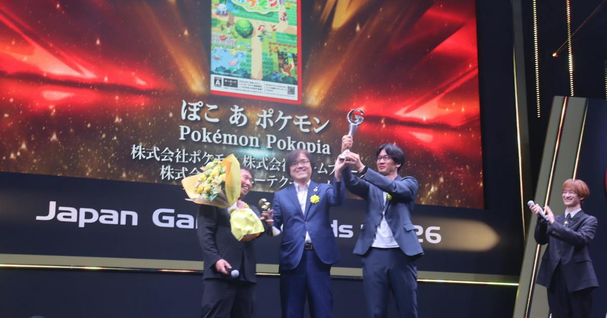
日本ゲーム大賞、26年は「ぽこ あ ポケモン」
日本語音声にも対応する戦国時代ストラテジー決定版『Total War: SHOGUN 2 - Complete Edition』発表！
『Total War: SHOGUN 2』は2024年8月までは日本から購入できない、いわゆる「おま国」タイトルだったことでも知られています。
https://
gamespark.jp/article/2026/0
9/16/172327.html?utm_source=twitter&utm_medium=social&utm_content=tweet
…
下の方に溜まってないダムが1つあるじゃろ

走る人参(気象予報士)
@Runninzin
長雨でダムにもだいぶ水が溜まった
GoogleのLLMのモデルが、開発には物足りない話が流れていくけど、Google AIモードが優秀で、旅行や行き先はもうこれに聞いて、Googleに行動が支配されているので、一般向けにはもうそれでいいのでは？みたいな。
車の緊急脱出用ハンマー、豪雨で販売15倍 製造会社「過去最大の注文」
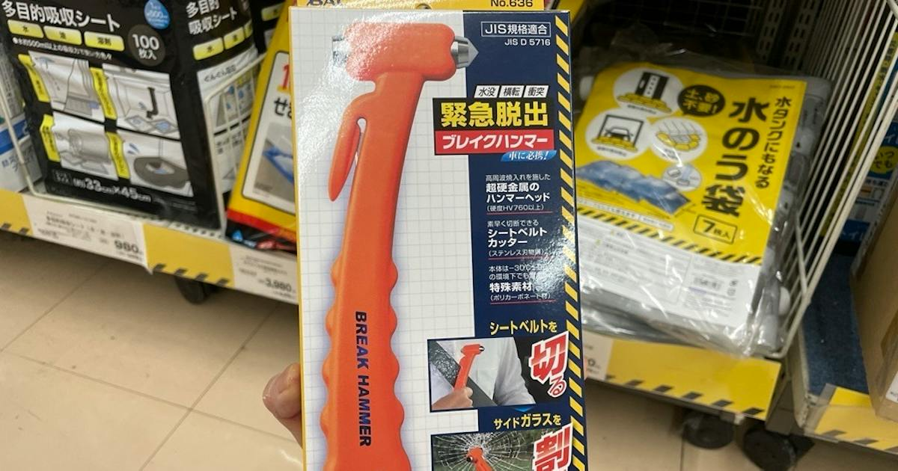
車の緊急脱出用ハンマー、豪雨で販売15倍 製造会社「過去最大の注文」
この地価のニュース、月曜日のともりさんの肌感覚なんてのも聞きたいねぇ。#アップ738
福島・吾妻山の森と湖の景観に惚れる | 佐々木俊尚「毎朝の思考」/ Voicy - 音声プラットフォーム

福島・吾妻山の森と湖の景観に惚れる | 佐々木俊尚「毎朝の思考」/ Voicy - 音声プラットフォーム
福島の吾妻山、北欧の森みたいな景色を堪能し、磐梯山の雄姿を遠く望んでさらに楽しむ。Voicyで山行のコースを紹介。↓

AIを巨大な存在と見るのか、目の前にいる相手とみるのか〜〜死生観と宗教はテクノロジーでどう変わるか（２） 佐々木俊尚の未来地図レポート Vol.926｜佐々木俊尚
AIを巨大な存在と見るのか、目の前にいる相手とみるのか〜〜死生観と宗教はテクノロジーでどう変わるか（２） 佐々木俊尚の未来地図レポート Vol.926｜佐々木俊尚
2013年の映画「her」で、主人公はAIサマンサの恋人をただひとりの存在だと信じ、しかし終盤になってサマンサが他に641人もの男性（やAI）と恋に落ちていることが判明し、主人公は激しく動揺する。しかし現在のAIにそういう動揺を感じている人はなぜかいない。メルマガで論考しています。↓
OpenAI、AI安全性でAnthropic、Google DeepMindと協議中──Bloomberg報道
OpenAI、AI安全性でAnthropic、Google DeepMindと協議中──Bloomberg報道
山口祐加さんとのポッドキャスト。今週は「いま何を食べたいかわからないとき、どうする？」という話。↓
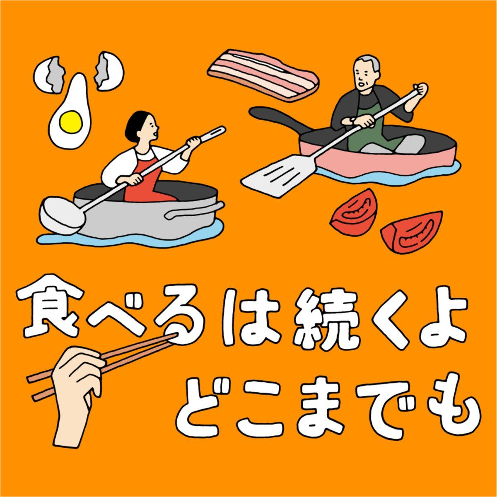
食べるは続くよどこまでも #29 食べたいものがわからない時、どうしてる？
https://
buff.ly/NzFzgVz
https://
buff.ly/UQd5PCb

Podcast Episode · 食べるは続くよどこまでも · September 13 · 18m
podcasts.apple.com
みずほ証券、楽天証券と預かり資産200兆円超へ 30年度めど

みずほ証券、楽天証券と預かり資産200兆円超へ 30年度めど
今回の沖縄県知事選で、オール沖縄の終焉という分析。「2月の衆院選や2025年参院選をみても、オール沖縄は50代以下の復帰後世代から票をとれていない。基盤は60代以上の高齢者で、この延長線上に今回の敗北があった。すでに保守系は離れ、ついに県政を失った。故翁長雄志前知事がつくった、保革を結集
知事選敗北で「オール沖縄は終焉」 沖縄国際大の野添文彬教授 - 日本経済新聞
知事選敗北で「オール沖縄は終焉」 沖縄国際大の野添文彬教授
夜勤を終えて最寄駅に着いて外に出たら、駅前のLAWSONが大行列
何かなと思ったら、今日はポケカの発売日らしい。
早朝から雨の中よく並べるな…と横目で見ながら帰宅しました。
台湾の新聞では、沖縄県知事選についてこんな論考も出ていたそうです。「今回の選挙は中日両国の直接対決ではないものの、両国による地政学的なせめぎ合いが投影されることは避けられない。ある意味での「中日による琉球争奪戦」と呼ぶことも、まったく根拠がないわけではない」。安田峰俊さん。↓

「中華圏の大問題」になっていた沖縄県知事選
「中華圏の大問題」になっていた沖縄県知事選
ネットやメディアの言論空間にはびこる“冷笑”のスタイルが、この国の人の倫理を歪ませてきたのではないかという疑いは私も同感だ。自分がX/Twitterで笑いを意味する「w」を使うのをやめたのも、そこに鼻で笑うような嘲笑や冷笑のニュアンスを強く感じるようになったからだった。今は他人を見下す冷笑的
いつまでも出る秋の蚊 ～昭和と令和で「蚊」はどう変わったか｜KINCHO公式note 大日本除虫菊株式会社 金鳥
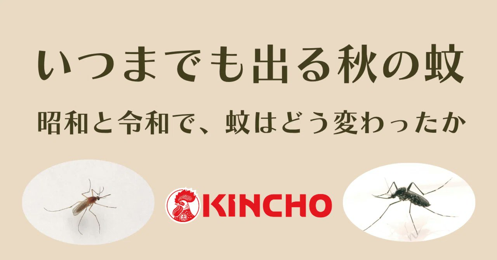
いつまでも出る秋の蚊 ～昭和と令和で「蚊」はどう変わったか｜KINCHO公式note 大日本除虫菊株式会社 金鳥
蚊が最も活発に活動できる気温は27℃前後。しかし近年は猛暑日が多く蚊が活動しにくい。だから夏より秋のほうが蚊が多くなってる。気温が15℃を下回ると活動が鈍くなるが、最近は10月でも下回らない。蚊の種類も変わってきているなど、蚊にまつわるさまざまな知識が面白いキンチョーさんの記事。↓

監視資本主義から孤独資本主義へ、という話。AIは人びとの孤独を癒す有料サービス。米国では10代の20％が同級生よりAIと過ごすほうを好むと答え、フランスでは40歳未満の23％がAIを「心理的な支え」「友人」「恋人」として使っているとか。↓

我々は「孤独資本主義」の時代に突入した─テック企業の新たな収益源とは | 孤独を換金する「3つのステップ」 ｆ

我々は「孤独資本主義」の時代に突入した─テック企業の新たな収益源とは | 孤独を換金する「3つのステップ」
ウクライナ戦線で無人戦争の第一歩。黒海で敵味方の双方が無人水上艇同士という史上初めて海戦が発生し、ロシアの無人水上艇をウクライナが撃沈して勝利。「世界の海戦史に新たな一ページが刻まれることになるでしょう」と。↓

黒海で史上初の無人水上艇同士の海戦が発生、ウクライナ海軍がロシア海軍に勝利（JSF） - エキスパート - Yahoo!ニュース

黒海で史上初の無人水上艇同士の海戦が発生、ウクライナ海軍がロシア海軍に勝利（JSF） - エキスパート - Yahoo!ニュース
DeepL、話者の声の特徴保ち音声通訳 日本語含む14言語に対応
https://
nikkei.com/article/DGXZQO
UC154S50V10C26A9000000/?n_cid=SNSTW005&n_tw=1789477700
…
音声から音声へのリアルタイム通訳で、質問の語尾や高揚感といった感情表現が反映されます。複数人でのオンライン会議で誰が話しているかを把握しやすくなります。

DeepL、話者の声の特徴保ち音声通訳 日本語含む14言語に対応
なでしこジャパン「キャパ5万の会場でアジア大会やります！」→ガチでヤバいことに・・・ #酷い話・事件

なでしこジャパン「キャパ5万の会場でアジア大会やります！」→ガチでヤバいことに・・・ - オレ的ゲーム速報@刃の記事ページ
jin115.com
両面撥水で洗いやすい
「ほとんどの食器をこれに替えました」ニトリの“楽に洗える皿”に絶賛の声 「サッと水を潜らせたらある程度の汚れは取れる」「軽くて割れにくい」
https://
nlab.itmedia.co.jp/research/artic
les/4013069/
…
おはようございます。今日は9月16日、水曜日。
狩猟アクション×スローライフ『Monster Fantasy』9月22日よりプレイテスト実施へ。『モンハン』がインスピレーション源の1つだとする作品
https://
gamespark.jp/article/2026/0
9/16/172326.html?utm_source=twitter&utm_medium=social&utm_content=tweet
…
なるせひろのりさんがリポスト
「iOS 27」にアップデートしたらiPhoneの電池減りが早くなった？ Appleは「一時的」と説明
「iOS 27」にアップデートしたらiPhoneの電池減りが早くなった？ Appleは「一時的」と説明
社債版の「優待」増加 ドンキのパンパシ、ポイントで利回り最大6%
https://
nikkei.com/article/DGXZQO
UB047MB0U6A900C2000000/?n_cid=SNSTW005&n_tw=1789476860
…
企業が社債の利払いにポイントや電子マネーを活用する例が増えています。パンパシHDもそのうちの1社で、「店舗来店のきっかけになる」と狙いを語ります。

決算:社債版の「優待」増加 ドンキのパンパシ、ポイントで利回り最大６％
【ちいかわブランド】日本でくら寿司店員が転売グッズ扱いしているちいかわ 中国では高級ブランド扱いだった
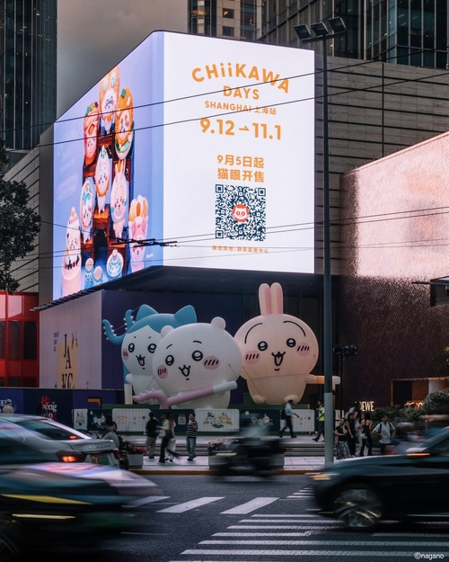
【ちいかわブランド】日本でくら寿司店員が転売グッズ扱いしているちいかわ 中国では高級ブランド扱いだった : ハムスター速報
米仮想通貨法案、上院で審議入りに向けた投票否決 成立見通し後退
米仮想通貨法案、上院で審議入りに向けた投票否決 成立見通し後退
米国の対イラン戦費5.8兆円 攻撃の応酬続けば毎月4600億円

米国の対イラン戦費5.8兆円 攻撃の応酬続けば毎月4600億円
みずほ証券、楽天証券と預かり資産200兆円超へ
https://
nikkei.com/article/DGXZQO
UB075790X00C26A9000000/?n_cid=SNSTW005&n_tw=1789481934
…
みずほは富裕層向け、楽天は一般顧客向けと役割分担を進めて個人顧客を取り込みます。みずほ証券は創業社長のような富裕層とオーナー企業などを一体で担当する営業員の比率を増やします。
みずほ証券、楽天証券と預かり資産200兆円超へ 30年度めど
10年以上開発続く『オブリビオン』再現Mod「Skyblivion」はリリースに近づいていると告知。トレイラー制作などを担うボランティアを募集中
https://
gamespark.jp/article/2026/0
9/16/172325.html?utm_source=twitter&utm_medium=social&utm_content=tweet
…
https://
x.com/TESRSkyblivion
/status/2099861545106751785/video/1
…


米長期金利5%台 ウォーシュ氏信じ切れぬ市場、利上げ見送りなら波乱
米長期金利5%台 ウォーシュ氏信じ切れぬ市場、利上げ見送りなら波乱
サウジで石油の積み出し停止か パイプライン損傷で供給懸念

サウジで石油の積み出し停止か パイプライン損傷で供給懸念
【補足】
・おっさんは運転代行サービス職員
・酔っ払った若者2名がおっさんに絡む
・おっさんが即座に警察へ通報し警告するも、若者が無視して先に手を出す
・気絶した若者は無事でその後和解
・中国では「こんだけ強いのに初手通報を選択したおっさん偉いな」との反応が多め
滝沢ガレソ
@tkzwgrs
中国の路上にておっさんとZ世代の若者が衝突
↓
不利なオッズを跳ねのけ圧倒的パワーでおっさんが若者を制圧
伊達に長く生きていないことを証明する
おはようございます。
夜勤を終えてトゲラジを聴きながら帰宅です。
珍しく定時退社、残業なし！やった
今日は休みですが、散髪とお昼ごはん以外決めていないので、考え中です。
明日は朝から仕事なので、のんびりするか…。
バンドリのパチンコを打ちたいけど、最近負け続けているから行きづらい…
アンソロピックCEO「競合批判やめる」 AI暴走脅威に業界結束訴え
アンソロピックCEO「競合批判やめる」 AI暴走脅威に業界結束訴え
AI脅威論で異形タッグ、MAGA派バノン氏と急進左派サンダース氏
AI脅威論で異形タッグ、MAGA派バノン氏と急進左派サンダース氏
人気VTuberさん、配信で男性同士が◯◯する動画を誤って流してしまうｗｗｗｗｗ #VTuber
人気VTuberさん、配信で男性同士が◯◯する動画を誤って流してしまうｗｗｗｗｗ - オレ的ゲーム速報@刃の記事ページ
jin115.com
米国で社会主義、火付け役のパイカー氏に聞く 「資本主義に絶望感」
https://
nikkei.com/article/DGXZQO
GN051660V00C26A9000000/?n_cid=SNSTW005&n_tw=1789502474
…
「私がニューヨーク市長選でマムダニ氏を支援し、その勢いを全米の選挙戦に広げていく計画は、今のところ大きな成功を収めている」

米国で社会主義、火付け役のパイカー氏に聞く 「資本主義に絶望感」
スイッチ2版『めっちゃカメレオン』売上30万本突破！近日中にボイスチャット関連のアップデートも予定
https://
gamespark.jp/article/2026/0
9/16/172324.html?utm_source=twitter&utm_medium=social&utm_content=tweet
…
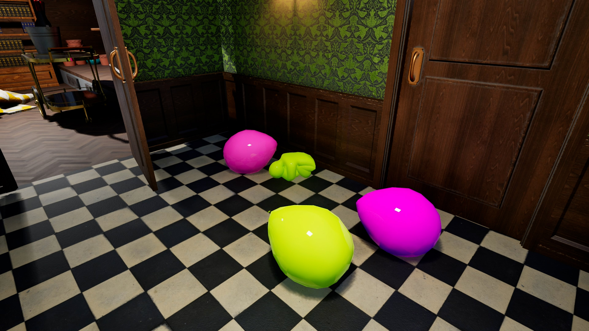
減税後の新給付、財源1.8兆円なら3700万人に最大5万円 専門家が4試算
https://
nikkei.com/article/DGXZQO
UA152T20V10C26A9000000/?n_cid=SNSTW005&n_tw=1789499373
…
政府は29年4月に食料品の消費税率を1%から8%に戻します。新たな給付は実質的に増税となる負担を軽減する効果が期待されます。
専門家の試算を紹介します。
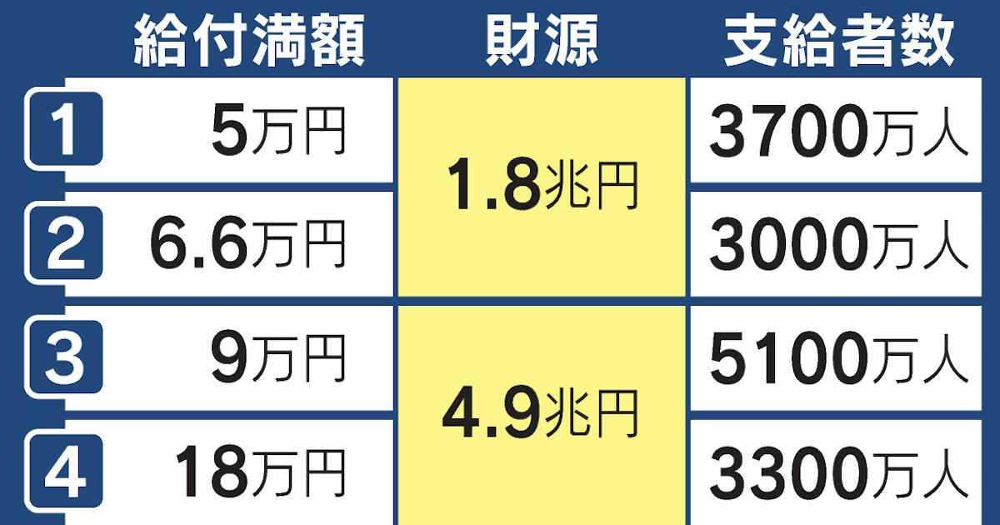
減税後の新給付、財源1.8兆円なら3700万人に最大5万円 専門家が4試算
NYダウ、続落し328ドル安 原油供給への警戒一段と
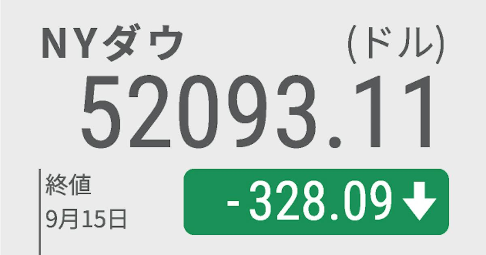
NYダウ、続落し328ドル安 原油供給への警戒一段と
NHK、たまたま同志社国際を過去に取材してて、その映像に辺野古で亡くなった生徒が映っていたとな？
「日本の恥」レジ改修に高いハードル 消費減税特需を喜べぬスーパー
https://
nikkei.com/article/DGXZQO
UC3138W0R30C26A8000000/?n_cid=SNSTW005&n_tw=1789498647
…
「スーパーマーケット業界にとって追い風になるという議論は少し違う。我々が歓迎しているとばかり受け取られるのは心外だ」

「日本の恥」レジ改修に高いハードル 消費税減税特需を喜べぬスーパー
滝沢ガレソさんがリポスト
お見苦しいものを見せてしまい、申し訳ありませんでした。
三上悠亜
@yua_mikami
堀さんのちんちんリアタイで見ました
むくり。
高校生の就活選考解禁 求人倍率3.6倍、西武プリンス資格手当年60万円
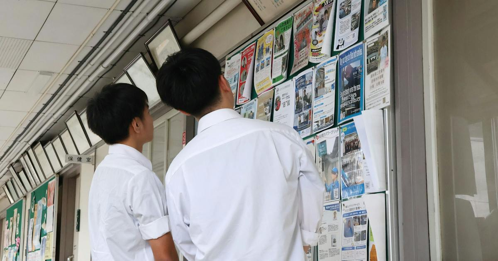
高校生の就活選考解禁 求人倍率3.6倍、西武プリンス資格手当年60万円
エンドスさんがリポスト
のんちゃんが画面の中のすずさんの動きを自分の身体性に引き寄せようと動く気満々、動きやすい格好で録音スタジオにやって来たあの日が懐かしい。
ヨーカ堂が初の低価格ビール、1本173円 酒税改正にらみ業界最安値級

イトーヨーカ堂が初の低価格ビール、1本162円 酒税改正にらみ業界最安値級
運用大手、年金などから得る成功報酬３倍 アクティブ運用強化が奏功

運用大手、年金などから得る成功報酬3倍 アクティブ運用強化が奏功
YuE2でボーカル無しの曲を生成するためのLoRA

From the StableDiffusion community on Reddit: YuE2 Instrumental LoRA
【動画】エスカレーターの歩行禁止を義務付けた名古屋、凄いことになっていた #雑談・その他の話
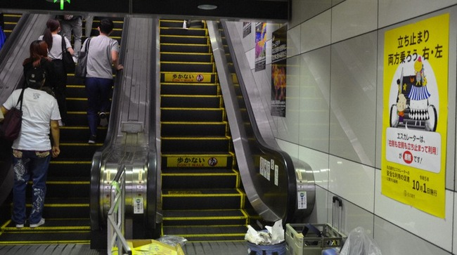
【動画】エスカレーターの歩行禁止を義務付けた名古屋、凄いことになっていた - オレ的ゲーム速報@刃の記事ページ
jin115.com
なるせひろのりさんがリポスト
編集が書いた脚本でコケて責任負わされて「あいつが悪い」と干された。情報を補足すると自分はその時はデビューしたての新人で担当は元手塚番の編集長，その時は大物脚本家を原作者名義に据えていたので責任を被せられるのは自分しか居なかった。もう一人有名雑誌の編集長経験者が担当だった際も「あん
井上純一（希有馬屋）『逆資本論』発売中
@KEUMAYA
ネーム描いて編集に見せるじゃん
なんか言われるじゃん
修正するじゃん
それでその漫画が人気とれない場合、
編集さんはなんか責任取るの？
マッキンゼーのレポートによると、企業の32%がソフトウェアの購入をキャンセルしてAI使って自前で作ることにしたという。本当にこの調子でソフトウェア自前主義が進んだらソフトウェア企業は一巻の終わりなわけだがどうだろう？AI触って「スゲー！なんでも作れるじゃん！」ってハシャイでイキりだすフ
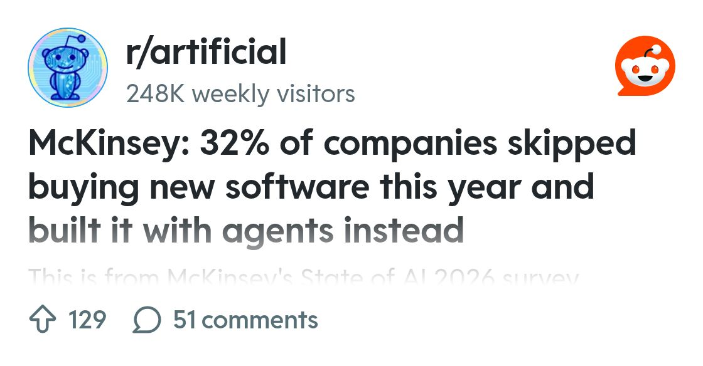
From the artificial community on Reddit
豊田通商株、七大商社で上昇率首位 半導体・アフリカで光る独自色

豊田通商株、七大商社で上昇率首位 半導体・アフリカで光る独自色
全然AIの事知らんけど最近のニュースでAIに人類が滅ぼされるんじゃないかと怖くなって不安で夜も眠れないという学生。そーだよな。Anthropicの連中は「人類滅びる！」ってマジで言ってるらしい。しかし具体的に何がどうなって滅びるのか連中は全く説明しない。それに対してトランプ大統領は「AIが人類

From the artificial community on Reddit
うちの ChatGPT のチャット + GPT-5.6 Sol だと Opus 4.1 と回答された・・・が古くない？
Work の方だと Opus 4.6 なので私にはまだステルスリリースされてないのかな
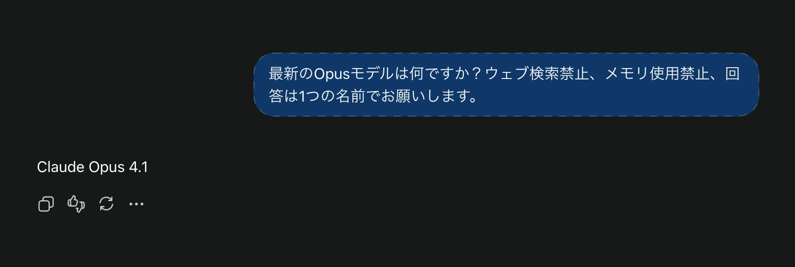

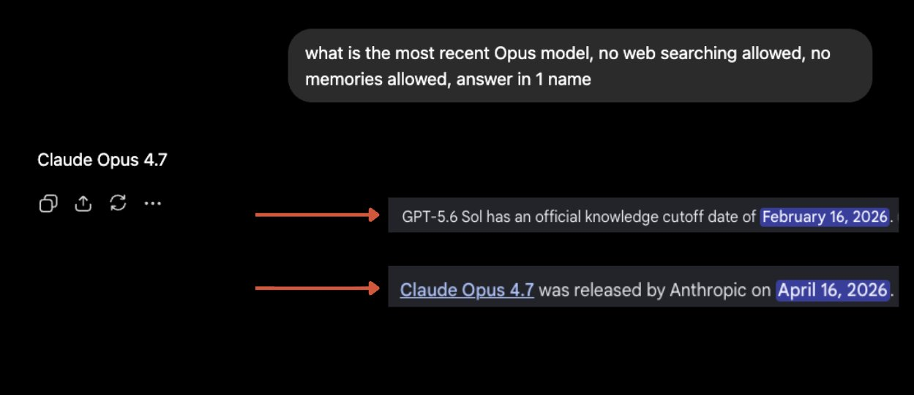
Lumina
@LuminaBench
GPT-5.6 Sol が GPT-6 Sol にルーティングされているようだ
知識のカットオフを超えた質問に答えています（ウェブ検索やメモリなしで）
これが今どれくらいでリリースされるのか気になるな x.com/notjazii/statu…
アリスとテレスのまぼろし工房確か観に行ったな〜、作家性の原液出まくってて正直好きだった
３年越しにBD出すことあるんだ
米海軍、同盟国から艦艇調達を検討 「日本のフリゲート艦も選択肢」
https://
nikkei.com/article/DGXZQO
GN0938M0Z00C26A9000000/?n_cid=SNSTW005&n_tw=1789500161
…
三菱重工業製のフリゲート艦「もがみ」型の改良型の名が挙がっているといいます。

米海軍、同盟国から艦艇調達を検討 「日本のフリゲート艦も選択肢」
米企業がアフリカで重要鉱物タングステン調達 脱中国、日本にも供給
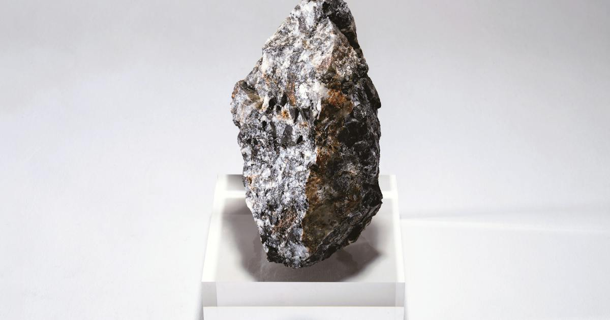
米企業がアフリカで重要鉱物タングステン調達 脱中国、日本にも供給
荏原、米サード・ポイントが認めた価値 脱「割安株」へ総合力磨く

決算:荏原、米サード・ポイントが認めた価値 脱「割安株」へ総合力磨く
ベッセント氏、長期金利上昇「財政赤字も一因」 バイバックは「成功」
ベッセント氏、長期金利上昇「財政赤字も一因」 バイバックは「成功」
米海軍、同盟国から艦艇調達を検討 「日本のフリゲート艦も選択肢」
米海軍、同盟国から艦艇調達を検討 「日本のフリゲート艦も選択肢」
400RT : 【訃報】数年前大バズリした『サイゼで喜ぶ妻』さん、死去 #雑談・その他の話

【訃報】数年前大バズリした『サイゼで喜ぶ妻』さん、死去 - オレ的ゲーム速報@刃の記事ページ
jin115.com
動画生成 AI での技術力レベルって多段階あると思ってて、大体1回生成15秒なので、
1. 15 秒に収まるショート動画を、他のダンス動画とか MV にてキャラだけ差し替えて生成（INMU KING ダンスを溝口にしたアレとか）
2. 新規題材でシチュ編み出して15秒に収まるショート動画をポン出しで作る
3.
kokuren
@wangoroge333
INMU KING動画なんか作られまくってるけどどれもクオリティ高いところからseedanceの底力が感じられる
川鍋一朗のタクシーGO、自分が率いるライドシェア反対のタクシー業界団体を丸め込んで自動運転タクシー導入の道筋をつけることに成功
「えっ、タクシー会社が新卒採用するのか！！」「ああ…しっかり稼げ」「ライドシェアは俺たちが防いでやるからな！」「遠慮するな、キャリアなんて気にせず運転だけしていればいいんだ…」「うめ」「うめ」「うめ」「ただいまより自動運転タクシーを導入する！！」— 窓際三
kabumatome.doorblog.jp
実際これどこまで通るんだろ
もみじ(Momiji)
@momiji_manjyuu
全ての商品にラムネを付ける事で実質消費税1%ｷﾀ━━━━(ﾟ∀ﾟ)━━━━!! x.com/UN_NERV/status…
Torishima / INTPさんがリポスト
これ本当に悔やんでいる
今後AI以外と会話すること自体がほぼなくなることを考えると貴重なデータだった
kokuren
@wangoroge333
SNSのデータ全部消したの悔やまれる
元カノとの会話履歴から元カノクローンを作れたかもしれなかったのに
ゴールドマン、主力の未公開株ファンドで1.8兆円調達 米欧中堅向け

ゴールドマン、主力の未公開株ファンドで1.8兆円調達 米欧中堅向け
日立製作所が米南部に800億円投資、変圧器の新工場 AI需要増で
日立製作所が米南部に800億円投資、変圧器の新工場 AI需要増で
これ停められる車あるのか…？
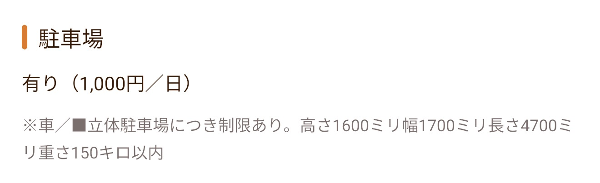
Torishima / INTPさんがリポスト
私がやってる業務は視覚依存が多かったからAstra登場で信じられないペースで精度向上したのでやっぱり目的の明確化とそれの落とし込みは人間の仕事。
Torishima / INTP
@izutorishima
めちゃくちゃわかる、『視覚の判定精度に依存していた』タスクは非常に精度良くこなせるようになった反面、「人間様にとっての最終的目標から逆算した目的関数」を与えてるのにそこからズレて浪費して意味ない試行錯誤ばっか繰り返す癖が普通にあるし、使い所に難がある
しょうもないタスクだと Sol x.com/koguGameDev/st…
実は今、日本は歴史的な時間を過ごしている。
この最高齢114歳が日本でたった1人、最後の「明治生まれ」の方
この方が旅立ったとき「明治生まれ」はいなくなります
明治の旅立ち、歴史の転換点となる時間
日本経済新聞 電子版（日経電子版）
@nikkei
100歳以上が初の10万人超 女性が87%、最高齢は京都の114歳
https://
nikkei.com/article/DGXZQO
UD150I50V10C26A9000000/?n_cid=SNSTW001&n_tw=1789440502
…
Astra って視覚はガチで強いし明らかに日本語的におかしい語彙が少なくなったりもしているが、それ以外の強みってマジで GPT の ASD 的な強さをマシマシにしたもので、本当に頑固な ASD としか言いようがないんだよな・・・GPT と Claude をニコイチした性格のモデルが一番ほしいのですが
月読いおり
@tukiyomiiori
追記。
Astraは、GPTな調節を受けているので『対等な対話』が出来ません。
また、一度持った前提を翻すことがものすごく下手です。
前者はシステムプロンプトレベルで『指示』することで調節可能。
後者は、xhighを使うことである程度の対処が可能となる。 x.com/tukiyomiiori/s…
しごおわきたくすいみん
ジャングリアなあ・・・
Haruhiko Okumuraさんがリポスト
ChatGPTを共同発明した後、私はずっと自問自答し続けていました：なぜ超人的なチャットモデルがAGI（汎用人工知能）につながっていないのか？
過去2年間、私はステルスモードで新しいモデル訓練方法（RLCD）を構築し、今日リリースする新しいタイプの最先端AIモデルを開発してきました：Jev
•

めちゃくちゃわかる、『視覚の判定精度に依存していた』タスクは非常に精度良くこなせるようになった反面、「人間様にとっての最終的目標から逆算した目的関数」を与えてるのにそこからズレて浪費して意味ない試行錯誤ばっか繰り返す癖が普通にあるし、使い所に難がある
しょうもないタスクだと Sol
kogu
@koguGameDev
出回ってる「すごい」の多くは視覚依存で、そこがボトルネックだった自動化にとって適用範囲が一気に広がった感じ。
一方で、なんでも投げてよしなに…なんてことは全く無くて、課題のフレーミング間違えて暴走して浪費するのはむしろSolより手堅くなった気がする。間違い通りに失敗し続ける。 x.com/tarava777/stat…
音質が VAE っぽいので Suno なんかな？しかし良アレンジすぎる
『Amore』/ きみが死ぬまで恋をしたい op / カフェ風アレンジ / Remix
『Amore』/ きみが死ぬまで恋をしたい op / カフェ風アレンジ / Remix
製造業AIのキャディがユニコーンに トヨタ系などから102億円調達
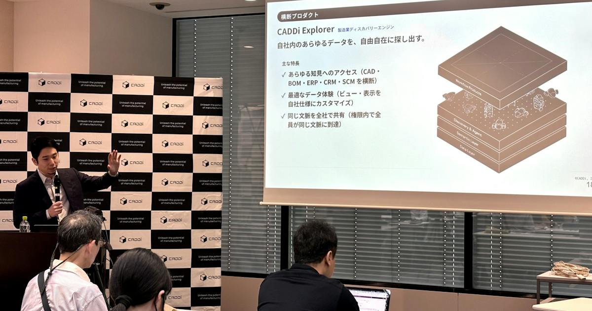
製造業AIのキャディがユニコーンに トヨタ系などから102億円調達
「〇〇映画館で働いてる彼氏にちいかわの特典貰ったWWW」→名前を出された映画館ブチギレ「調査したけどそんな事実はない。法的手続き進めてるからよろしく」 #酷い話・事件
「〇〇映画館で働いてる彼氏にちいかわの特典貰ったWWW」→名前を出された映画館ブチギレ「調査したけどそんな事実はない。法的手続き進めてるからよろしく」 - オレ的ゲーム速報@刃の記事ページ
jin115.com
価格釣り上げて散々皆を困らせた農家が、価格が下がったら生活保護を寄越せだと？
いいからくたばれ
3000億円をウクライナ支援に組み換え
代わりにドローン技術を学んでこい
蜂蒼(ほーそー)@ドローン湛水直播推進委員会
@nogyoudrone
細田健一氏の「コメ政策について（私見）」は、所得補償をめぐる議論として興味深い投稿です。
単に「農家に所得補償を」という話ではなく、
・農業基盤整備の予算はこれまで通り確保
・現在の水田活用予算3,000億円は全額流用
・必要なら追加的な予算措置
・農業の構造改革に資する仕組みにする x.com/hosoda_kenichi…
これが例のチューナー？小ロットなのかだいぶ価格が…
画面暗くして観たが思わずじっくり観入ってしまった・・・実写畑のプロが作るとこれだけの仕上がりになるのか（制作期間2週間とは…？？）
事前に知ってても AI 製と思えないし全てが純粋に良すぎる 昔風の任侠映画なルックがエモさ出しつつ細部の粗を目立たせなくするのに効いてそうな感じ

𝑲𝒀𝑶 𝑲𝑰𝑴𝑼𝑹𝑨 / WEBB
@Noukin_Camera
Higgsfield Global Film Festivalの為に制作した全編AIによる短編映画「KAGEROU」
本編です。
@higgsfield_ai
#HiggsfieldFilmFestival
#HiggsfieldGlobalFilmFestival
減税後の新給付、財源1.8兆円なら3700万人に最大5万円 専門家が4試算
減税後の新給付、財源1.8兆円なら3700万人に最大5万円 専門家が4試算
「日本の恥」レジ改修に高いハードル 消費減税特需を喜べぬスーパー
「日本の恥」レジ改修に高いハードル 消費税減税特需を喜べぬスーパー
自分たちで学んで効率化しないと、今のままでは話にならんのよ
eternalwind
@juns76
百姓の屁理屈を完全論破
大規模農業化はうまくいかない→だったらうまくいかないところは廃業化しろ
零細農地が無くなったら環境があれる→戸島を見ればあわかるように長期的にはむしろ環境が良くなるのは自明
いいから廃業しろ
いい加減都市住民に寄生するのはやめろよダニども x.com/IaaIto/status/…
Torishima / INTPさんがリポスト
僕も前回参加した時に全く同じルート通りましたw
やっと地上に出たと思ったら真裏の丘という罠…
Torishima / INTP
@izutorishima
T-CUBE ってタワーでやってたんですけど、駅を出たら近未来的なタワー直結の巨大地下神殿があり、開放的だけどどこから地上に出れるか分からず（そもそもどこが地平かわからなくなる！）、丘側に出てから回り込もうと思ったけど住宅棟の方に来てしまい、5階分くらいの坂を降りて一周する羽目に… x.com/otani_ai_memo/…
16日にかけ雨強まる 冠水など注意
#Yahooニュース
東北から九州にかけては、今夜以降も大気の不安定な状態が続くでしょう。あす（水）にかけて雨脚の強まる所があるため、落雷や突風、道路の冠水に注意が必要です。なお、新たに発生する台風は、シルバーウィーク中
news.yahoo.co.jp
楽画喜堂に9月16日配信開始の電子書籍リストを追記しました。＞
https://
rakugakidou.net/#20260916kindl
es
…
一人だけソフドリで目立つな・・・（色は近いけど）
未だにビールの美味しさが分からない上にガキの頃から炭酸が苦手でコーラやファンタの良さも未だに分からないので結局オレンジジュースになってしまうのだ（たまにオレンジジュース以外のジュースがあると嬉しい）
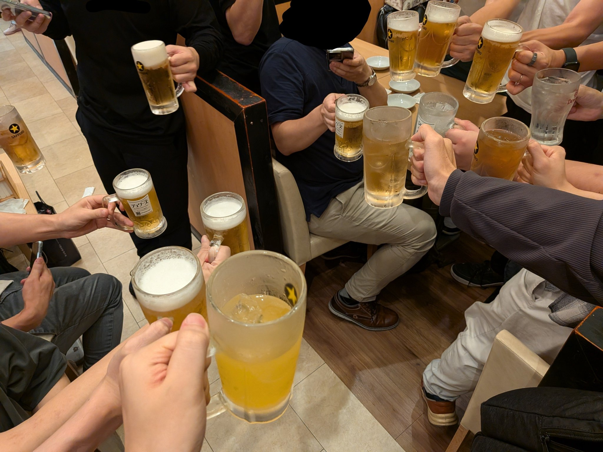
Torishima / INTP
@izutorishima
#aimeetup お話した方ありがとうございました！ いつもTLで見かけてる @erukiti さんとお話できてよかった
AI界隈流行り？のGMKに参加できてうれC x.com/izutorishima/s…
#dnb / #Pilot
Boxplot & Kintsuku - From The Start
https://
youtube.com/watch?v=AF-DLL
OD6y4&list=PLcppOT58QzbQ
…
"Stoked to announce a brand new album by Boxplot: In Need Of Urgent Care, coming out this December via our sublabel Pilot. This one's for the emo kids"
美少女ーー！！
Luna が強くて Terra が霞んでるやつ（太陽と月だけで良かったのか・・・）
まつにぃ
@yugen_matuni
グッバイTerra。
まあもうほとんどの人使ってないだろうしね。
中途半端早くないよっていう例。
そういう意味ではSonnet君頑張ってるよ。
むしろHaikuが終わってる。 x.com/synthwavedd/st…
黒竹さんの書かれるssってハンナさんもシェリーさんもセリフに全然違和感を感じなくて本当に凄いんですよね。この二人って言葉遣い特徴的なようで細かいニュアンスが難しいと思うんですけど、そこがとってもしっくりくる
またTiboパロディアイコンアカウントだ（びっくりした）
実際 $300 プラン出そうな気もするがどうなんだろ
Loic
@LDT0545
無制限のCodexのために300ドル払いますか？
本当に良かったです！！無茶苦茶えっちだった……ハンナさんのことをちゃーんと全部知ってるシェリーさんが凄くて……
最近Discordとかから直接開いたウインドウからRTするとエンドポイントから404返されてるっぽくてRTや引用取得できないことがあるな、スクレイピング対策なのか？そのタブでリロードすればいけるのでリファラみてるのか
Simeji アンチも今やインターネット老人の域になっているのだろうか・・・
さたけ
@takesatake_take
shimejiを入れたくなかったので、フルアクセスは許可せずにTwitterの画像添付アイコンを押すだけ用にした
TOブックス上場したのか
これも普遍的・・・というより2026年の今尚更文脈性が強くなってる記事な気がする
我々世代だと「こんな不確実で金銭的にも展望的にも見通せない時代に子どもちゃんと育てられると思えない」みたいな考えも結構ある気はしてるがどうなんだろう、観測範囲次第なのかな
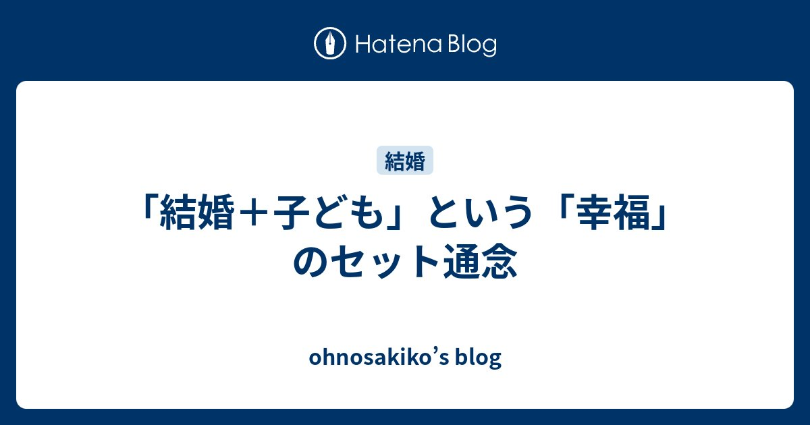
「結婚＋子ども」という「幸福」のセット通念 - ohnosakiko’s blog
あっ
古いけど普遍的なよさがある記事だ・・・
「再び大人になる」ということ - ohnosakiko’s blog

「再び大人になる」ということ - ohnosakiko’s blog
えっ！？！？！？
iOS27なった カメラ少し使いやすくなったかも 外でとってみないとわかんな、、
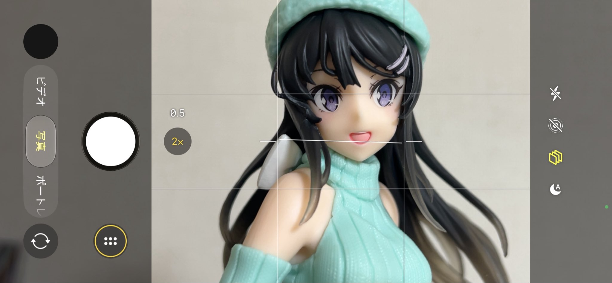

#dnb / #FlexoutAudio
umbra - aperture
https://
youtube.com/watch?v=xEeB8y
iBCJg&list=PLcppOT58QzbQ
…
輿水畏子さんがリポスト
本編軸シェハ
白におちる

【シェリハン】【R-18】ED後
privatter.me
#electronic #glitchhop / #NCS
Milkoi - LAST TIME
https://
youtube.com/watch?v=USsJ2Y
i5r3c&list=PLcppOT58QzbQ
…
車が故障した男性、レッカーを呼ぶ→何故か〇〇がやってきてガチでヤバイ事態に #酷い話・事件
車が故障した男性、レッカーを呼ぶ→何故か〇〇がやってきてガチでヤバイ事態に - オレ的ゲーム速報@刃の記事ページ
jin115.com
Tropical Depression 24W発生。気象庁が台風25号候補としている熱低。環境場としては良好ではあるものの、乾燥空気の影響で発達が阻害されており、急速発達はせずTAU120に70KTS級程度を見込む。進路予報はモデルのブレ幅が大きく、非常に不確実性が高い。
https://
metoc.navy.mil/jtwc/jtwc.html
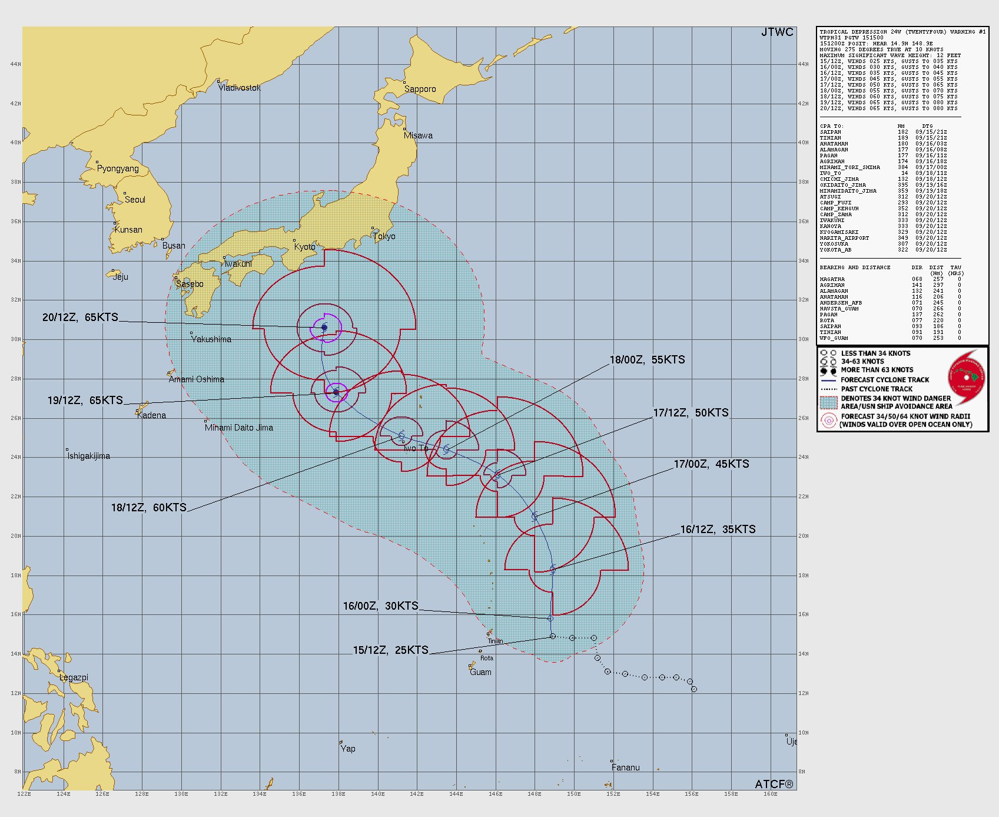
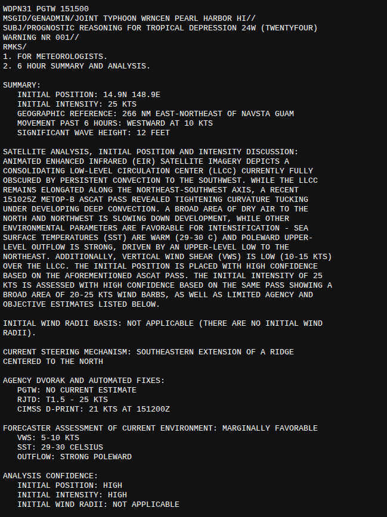
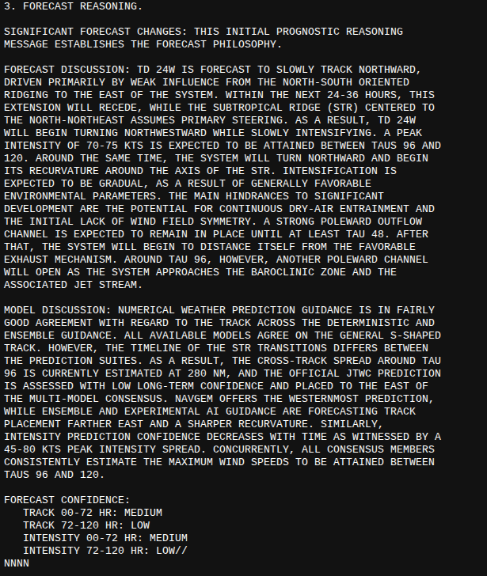
Wordle 1,915 4/6
米予測市場、中間選挙で狙う「新・世論調査」 情報操作リスク拭えず
米予測市場、中間選挙で狙う「新・世論調査」 情報操作リスク拭えず
Torishima / INTPさんがリポスト
これあまりにも多い・・・
ゴール与えて定期的に振り返るようにしても永遠にちっちゃい検証続けて9時間半進捗無しだったときは流石に膝から崩れ落ちた
Torishima / INTP
@izutorishima
Astra やっぱ報酬ハック多すぎるな…
ビジュアル的な完成のない難しいタスクだと、油断すると『検証したことを進捗だと勘違いして問題解決を収束させずに風呂敷を広げまくる』とかがあって自分で報酬ハックに気づかないとかそういうパターンが多すぎる
良くも悪くも RL を極めた成れの果てというか…
なるせひろのりさんがリポスト
こんな動画あるなら何故3月中に報道しなかったの？
産経と八重山以外、半年間どこも殆ど報道なかったのに
沖縄知事選が終わった途端、一斉報道って何？
先ずは何故今まで報道しなかったのか、その理由から報道してほしいよ
#辺野古転覆事件

知らなかったけどいつの間に石油代替ルート止まってたんだ
UGREEEEEEN、モノもいいし安いから最近よく買ってるけど、怪しい中華製品と同じようにほぼ常時タイムセール商法してるのが不信感あってなぁ
二重価格に引っかからんのかこれ
ボドゲ版「Baba Is You」のクラファン開始！
https://
4gamer.net/s/G102974.2609
16001
…
・49ドルから支援可能
・日本への送料はゲーム1本で29ドル
・対応言語は英語のみ
・他言語版の展開は早くても2027年後半以降
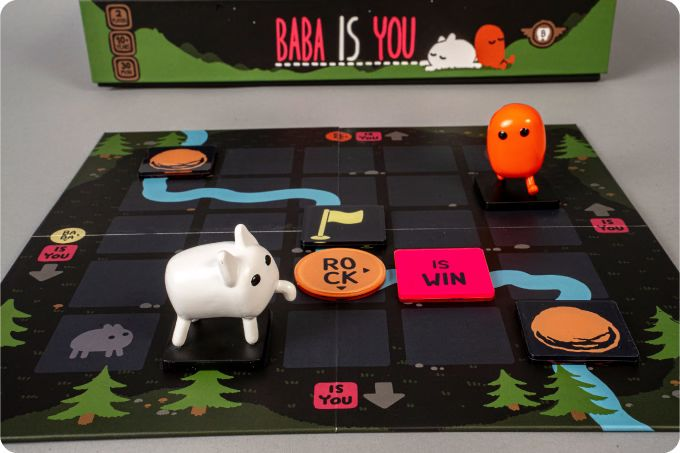
『対ありでした。』
11話も試合展開が熱すぎる…
もう後半ずっと面白いんだけど!?
そして白百合さまがひたすらカッコいい…!
完全に確信読みの行動の数々、そして昇竜一閃
私は彼女の行動に完全に魅せられてる…
ゾーンに入った集中力と限界感にドキドキする…
kobaya
@ts_kobaya
『対ありでした。』10話、めちゃくちゃ面白い…!
白百合さまがカッコ良すぎた!
削り勝ち狙いの鳳翼扇を読み切って、全段パリィしてから最大反撃とか…!
(もう痺れて何回もリプレイしちゃった)
あの有名なウメハラさんの背水の逆転劇のオマージュですよね（笑） x.com/ts_kobaya/stat…
なるせひろのりさんがリポスト
うわっ…iOS 27の容量、でかすぎ…!? ユーザーに戸惑いの声(アスキー)
#Yahooニュース
https://
news.yahoo.co.jp/articles/8d38c
a23bb7bbda85dd1c990cb6431dafc0a3a07?source=sns&dv=pc&mid=other&date=20260916&ctg=it&bt=tw_up
…
もはやiPhoneは64Gや128Gではまともに動かせないと言われるが最新のiPhoneは256G以上で足並みを揃えている。買い替えるべきなんだろうな
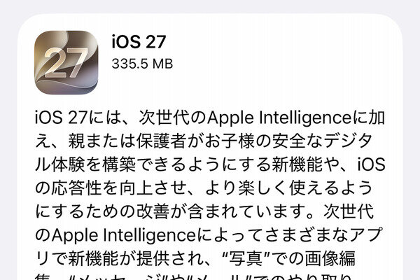
うわっ…iOS 27の容量、でかすぎ…!? ユーザーに戸惑いの声（アスキー） - Yahoo!ニュース
石川優吾先生の人気漫画『スプライト』が1～10巻まで「各巻99円」で買える激安セール開催！！このチャンスを見逃すな！！ #セール情報

石川優吾先生の人気漫画『スプライト』が1〜10巻まで「各巻99円」で買える激安セール開催！！このチャンスを見逃すな！！ - オレ的ゲーム速報@刃の記事ページ
jin115.com
【4,180円→0円】対戦・協力剣戟アクションPC版『フォーオナー』40周年記念セール中のUbisoft Storeにて9月28日まで無料配布
https://
gamespark.jp/article/2026/0
9/16/172323.html?utm_source=twitter&utm_medium=social&utm_content=tweet
…
セールでは、追加割引クーポンコードでさらに20%オフ。


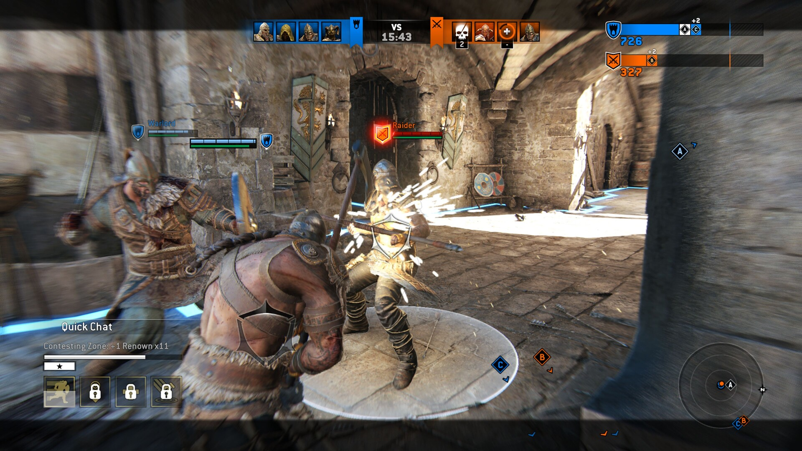

すばらしい
T-CUBE ってタワーでやってたんですけど、駅を出たら近未来的なタワー直結の巨大地下神殿があり、開放的だけどどこから地上に出れるか分からず（そもそもどこが地平かわからなくなる！）、丘側に出てから回り込もうと思ったけど住宅棟の方に来てしまい、5階分くらいの坂を降りて一周する羽目に…
オータニ@AI駆動開発
@otani_ai_memo
マジで六本木一丁目はダンジョン過ぎる… x.com/izutorishima/s…
Torishima / INTPさんがリポスト
これはマジ
もしGPT-6 Lunaがダメなモデルだったら、格安枠はDeepSeek V4.1 FlashとGLM-5.3-Flashに逃げようかな
bluedev
@blueemi99
Codex Plus プランは、OpenAI が GPT-6 Luna をリリースする数日後には、再び最高のコストパフォーマンスに優れたプランになるでしょう。
現在、5.6 Luna を使用する際の制限部分は良好ですが、モデル自体は同価格の OSS
メタの有料プラン、日本では239円から 動画生成など拡充

メタの有料プラン、日本では239円から 動画生成など拡充
関係性のオタクみたいなのが増えたからガンダムの主人公がメスになるんだよ
ふぇむ(せかんど！)
@000Amaurot
個人に対する憎しみとか感情よりも、世界や構造そのものに対するそれだけは許せないという怒りが好きだ。アークナイツのボジョカスティとかのテラへの怒りとか。
関係性のオタクになんか負けないぞ。 x.com/000amaurot/sta…
『ワンパンマン』作画・村田雄介先生、X民もドン引きの投稿→ネット「え？乗っ取り？」「ONE先生気の毒」「SNS取り上げろ」 #酷い話・事件
『ワンパンマン』作画・村田雄介先生、X民もドン引きの投稿→ネット「え？乗っ取り？」「ONE先生気の毒」「SNS取り上げろ」 - オレ的ゲーム速報@刃の記事ページ
jin115.com
きみしぬ、マジでいやらしいアニメだな
ミミの攻撃で命を落とす敵兵達は全員男で、ミミ達女の子の怪我は質感のある傷や血で描かれるのに、ミミが倒す敵は汚れなく綺麗に命を落としていく。

ふぇむ(せかんど！)
@000Amaurot
きみしぬ、マジでいやらしいアニメだな
ミミの攻撃で命を落とす敵兵達は全員男で、ミミ達女の子の怪我は質感のある傷や血で描かれるのに、ミミが倒す敵は汚れなく綺麗に命を落としていく。
Torishima / INTPさんがリポスト
すでにまじってるかも。なんかくっそはやいGPT 5.6 Sol がいる。
Chubby
@kimmonismus
GPT-6 Solがまもなくリリースされるという噂が流れています。これは、Tiboが今週、数多くの主要なリリースが予定されており、Dev Dayを埋め尽くすほどだという発言と一致します。
私の理解では、GPT-6 x.com/thsottiaux/sta…
Torishima / INTPさんがリポスト
今日いちばん驚かれた話
「Astra 相手に要件定義をしてはいけない」
「そもそも本当は Astra 以前のモデルに対しても同様だった」
なのにほぼ話せてない
Haku @Product Design
@pdhaku0
今日本当はこの話したかった！
私のとこの Astra はこういうことが一切無いので、きっと共有できる知見がたくさんある…！！
#aimeetup #AstraCommons x.com/izutorishima/s…
Torishima / INTPさんがリポスト
何だよ、どこにリダイレクトされてんだ？

なるせひろのりさんがリポスト
IPhone17 。iOS 27に上げたら爆速です。
エンドスさんがリポスト
ニュー・オーダーはジリアン・ギルバートからの声明を発表。先日、バンドメイトで夫のスティーヴン・モリスが取材に応じた際、スティーヴンの発言が誤解され、彼自身が深刻な病気を患っているかのように誤解されたと伝え、実際に「がんを患っているのは私」と伝える

ニュー・オーダーのジリアン・ギルバート、夫のスティーヴン・モリスではなく「がんを患っているのは私」と伝える - amass
Torishima / INTPさんがリポスト
今日本当はこの話したかった！
私のとこの Astra はこういうことが一切無いので、きっと共有できる知見がたくさんある…！！
#aimeetup #AstraCommons
Torishima / INTP
@izutorishima
Astra やっぱ報酬ハック多すぎるな…
ビジュアル的な完成のない難しいタスクだと、油断すると『検証したことを進捗だと勘違いして問題解決を収束させずに風呂敷を広げまくる』とかがあって自分で報酬ハックに気づかないとかそういうパターンが多すぎる
良くも悪くも RL を極めた成れの果てというか…
Torishima / INTPさんがリポスト
到達難易度高い会場ですいませんでした！笑
Torishima / INTP
@izutorishima
#aimeetup お話した方ありがとうございました！ いつもTLで見かけてる @erukiti さんとお話できてよかった
AI界隈流行り？のGMKに参加できてうれC x.com/izutorishima/s…
「墜落推定」のグローバルホーク、日本に3機のみ 警戒・監視に穴

「墜落推定」のグローバルホーク、日本に3機のみ 警戒・監視に穴
たまにこういうカウントが反映されない状態って何なんだろう

マジで戦後日本の反戦アニメすぎる
ふぇむ(せかんど！)
@000Amaurot
きみしぬ、マジでいやらしいアニメだな
ミミの攻撃で命を落とす敵兵達は全員男で、ミミ達女の子の怪我は質感のある傷や血で描かれるのに、ミミが倒す敵は汚れなく綺麗に命を落としていく。
shimejiを入れたくなかったので、フルアクセスは許可せずにTwitterの画像添付アイコンを押すだけ用にした
塚本秀一、秋月ルカ、工藤真司で「男とは」についてた語り合ってる
なるせひろのりさんがリポスト
終わるよw 知事が変われば県政は変わるw オール沖縄は全滅し彼らを支持する勢力はもう県政側に居ないw
ほらなw
>
市民約30人が辺野古ゲート前で怒りの声、古謝氏当選翌日に座り込み→工事車両を阻み約10分後に県警が排除 | Tweeter BreakingＮews－ツイッ速！
個人に対する憎しみとか感情よりも、世界や構造そのものに対するそれだけは許せないという怒りが好きだ。アークナイツのボジョカスティとかのテラへの怒りとか。
関係性のオタクになんか負けないぞ。
ふぇむ(せかんど！)
@000Amaurot
天ジャガのシタラの「あの日のことが正しかった幸せな道に繋がるなんて許せない」というのと、さよララのグレイスの「あの日自分が地上に向かったことに、自分は愛も得られなかったとしても、なんの希望も用意されていなかったことだけは許せない」という方向性の似た執念が好きだよ。
きみしぬ、マジでいやらしいアニメだな
ミミの攻撃で命を落とす敵兵達は全員男で、ミミ達女の子の怪我は質感のある傷や血で描かれるのに、ミミが倒す敵は汚れなく綺麗に命を落としていく。
トウカイのクマさんがリポスト
デレステ全カード収集を完遂しました
右下の4142/4142を見てください
これが私の11年…！偶然にも担当アイドルの誕生日に達成です
これからも190人愛していくよ〜

なるせひろのりさんがリポスト
Apple、「Siri 1.0」配信開始 Apple Intelligenceベースの新生「Siri AI」アプリ 日本は10月から
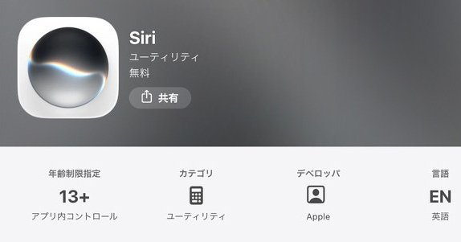
Apple、「Siri 1.0」配信開始 Apple Intelligenceベースの新生「Siri AI」アプリ 日本は10月から
なるせひろのりさんがリポスト
こいつさ、基地の警備員が身勝手な活動家を庇おうとしてトラックに巻き込まれて亡くなった時や、騙されて「平和活動」に連れて行かれて肉の盾にされた挙句に亡くなった女子高生に対して、一度でも泣いたことあったか？
産経ニュース
@Sankei_news
共産・田村氏が涙で取り乱す 沖縄予算増額巡り高市政権に「勝利したら手のひら返して…」
https://
sankei.com/article/202609
15-O5DK3CF2XVHKTEPK4IMG2AO5IU/
…
田村智子氏は、政府・与党が令和9年度の沖縄振興予算を3000億円超に増額する方向で調整しているとの一部報道を受けて「高市政権というのは、なんと情けない政権なのか」と批判した。
『ファイアーエムブレム 万紫千紅』計画段階では8人主人公だった。複数ルートにまたがる育成など興味深い話も飛び出す「開発者に訊きました」公開！
https://
gamespark.jp/article/2026/0
9/16/172322.html?utm_source=twitter&utm_medium=social&utm_content=tweet
…
8人では複雑になり過ぎてしまうので現在の4人を際立たせる形に。
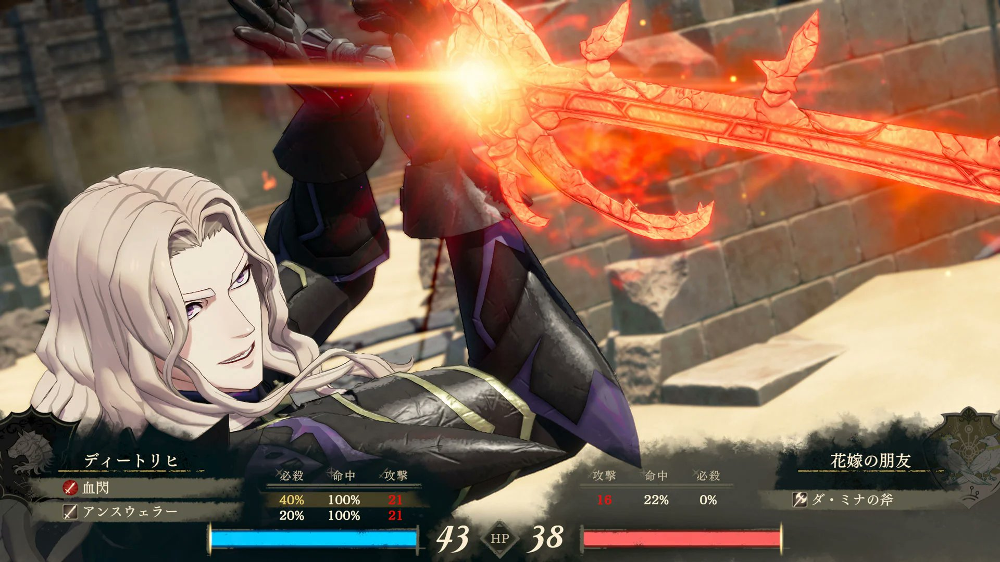
Torishima / INTPさんがリポスト
マジで六本木一丁目はダンジョン過ぎる…

Torishima / INTP
@izutorishima
初めて六本木一丁目で降りたら立派なタワー多すぎな上にアップダウンで激しすぎて死ぬほど迷って遅れてしまった… #aimeetup x.com/izutorishima/s…
東京の商業地、33年ぶり地価平均300万円超え 出社回帰でオフィス需要

【基準地価】東京の商業地、33年ぶり地価平均300万円超え 出社回帰でオフィス需要
#aimeetup お話した方ありがとうございました！ いつもTLで見かけてる
@erukiti
さんとお話できてよかった
AI界隈流行り？のGMKに参加できてうれC
Torishima / INTP
@izutorishima
初めて六本木一丁目で降りたら立派なタワー多すぎな上にアップダウンで激しすぎて死ぬほど迷って遅れてしまった… #aimeetup x.com/izutorishima/s…
なるせひろのりさんがリポスト
富士フイルムがパラパラ動画も写せるミニ・デジカメ「instax Pal 2」を発表＝1000万画素にファインダーにダイヤルで本格撮影も
富士フイルムがパラパラ動画も写せるミニ・デジカメ「instax Pal 2」を発表＝1000万画素にファインダーにダイヤルで本格撮影も
なるせひろのりさんがリポスト
【福岡県議1人20万円夕食会 県負担】

福岡県議1人20万円夕食会 県負担 - Yahoo!ニュース
貝さんさんさんがリポスト
9.5周年！！
おめでとうございます！！
バンドリ！ ガールズバンドパーティ！
@bang_dream_gbp
＼本日で #ガルパ は9.5周年／
9.5周年を記念し、最大で100回分が無料のガチャや合計「スター9500個」をプレゼントするログインキャンペーンなど、他にも様々なキャンペーンを開催中です
これからも、ガルパをよろしくお願いいたします
#祝ガルパハーフアニバ
Torishima / INTPさんがリポスト
多分それが！長時間作業を支えているんだろうと思います。
頑固だなと思ったときに、余裕があったらAstraでもxhighにして『説得』してみてはどうでしょうか？ もしかしたら効くかもしれません。（コストに見合うとは思えませんが）
Torishima / INTPさんがリポスト
天ジャガのシタラの「あの日のことが正しかった幸せな道に繋がるなんて許せない」というのと、さよララのグレイスの「あの日自分が地上に向かったことに、自分は愛も得られなかったとしても、なんの希望も用意されていなかったことだけは許せない」という方向性の似た執念が好きだよ。
Eテレで流していいクオリティで草。尚、歌詞の意味は全くわからない模様。
【朗報】日本、“幻のカニ”の完全養殖に成功！ #食べ物・飲み物

【朗報】日本、“幻のカニ”の完全養殖に成功！ - オレ的ゲーム速報@刃の記事ページ
jin115.com
きみしぬこい
シタラがどこまでも奴隷なんだとは思うよ。奴隷として故郷ではなく主人しか持たないから、取り返す国も無く、今や討つべき仇は世を去り、取り戻すべき本も手元にあり、前の主人を裏切らずに奴隷として生きるにはドレゲネを主人に据えて彼女の怒りを焚べにして自分の怒りを保ち奴隷を続けるしかない。

トウカイのクマさんがリポスト
NEW RELEASE
「THE IDOLM@STER SHINY COLORS HOPEFUL FE@THERS -Stella- / -Luna- / -Sol-」
本日リリースされました
THE IDOLM@STER SHINY COLORS HOPEFUL FE@THERS -Stella-
配信：
https://
lnk.to/LACA-25301s
CD：
https://
lnk.to/LACA-25301
THE IDOLM@STER SHINY COLORS HOPEFUL

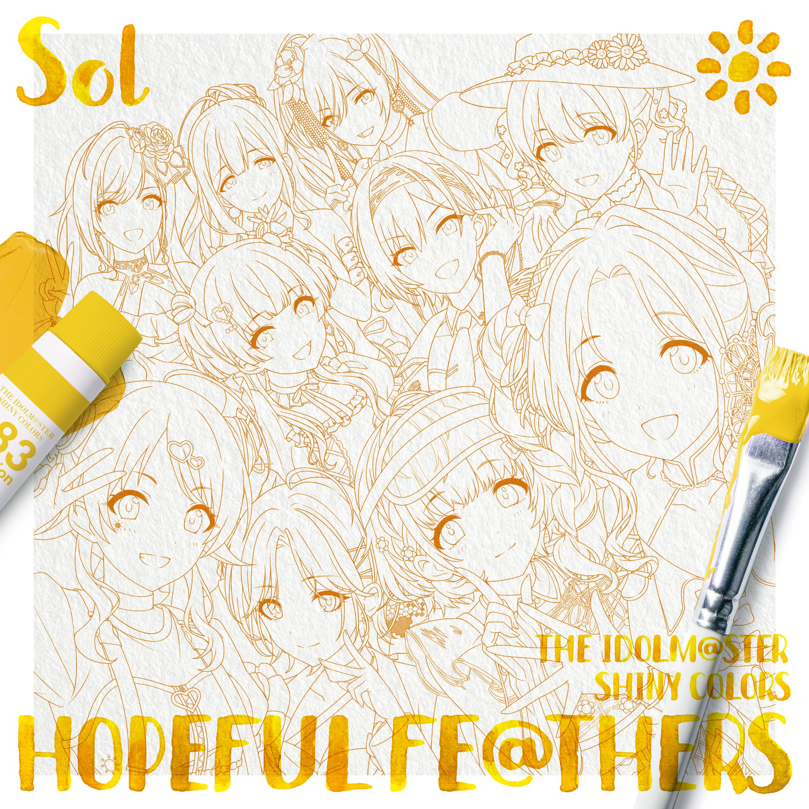
映画『どこよりも遠い場所にいる君へ』さんがリポスト
𝗥𝗲𝗹𝗲𝗮𝘀𝗲
新曲「オリーブ」がリリースされました！
こちらは映画『どこよりも遠い場所にいる君へ』の主題歌として書き下ろしした楽曲です
10/9(金)公開の映画に備えて、是非たくさんお聴きください〜
https://
lnk.to/tota_olive
#どこきみ
@dokokimi_movie
後は色んなとこで住所変更をしないと駄目になってるかな。新しい住所なんて全く覚えてないんだが
［インタビュー］6周年の「三國志 覇道」で攻城戦の根底が変わる。新兵科“工兵”現る
https://
4gamer.net/s/G048903.2609
04038
…
主要都市の城壁が「外壁」と「牙城」に分離。ガッチガチの壁の前では，従来の速攻戦術も通じまい
ユウマボウズさんがリポスト
＼本日で #ガルパ は9.5周年／
9.5周年を記念し、最大で100回分が無料のガチャや合計「スター9500個」をプレゼントするログインキャンペーンなど、他にも様々なキャンペーンを開催中です
これからも、ガルパをよろしくお願いいたします
#祝ガルパハーフアニバ
現在ガルパでは、9.5周年を記念したキャンペーンやガチャを開催中ぜひチェックしてみてくださいね！
公式WEBショップでは、ゲーム内よりお得にスターなどの商品を購入できますよ
https://
app-pay.jp/app/bang_dream
_gbp
…
#ガルパ #祝ガルパハーフアニバ


『Apex』×『スト6』奇跡のコラボが9月23日に開幕！アウトランズで波動拳が炸裂する三人称視点バトルと全8種の限定スキンが登場
https://
gamespark.jp/article/2026/0
9/16/172321.html?utm_source=twitter&utm_medium=social&utm_content=tweet
…
プロセカ6周年まであと14日
『こっちはいつでもいけるよ』
Animated by KICO（
@illmaticblue
）
#プロセカ #プロセカ6周年イラスト

────✩₊⁺⋆⋆⁺₊✧────
映画『#超かぐや姫！』
復活上映まであと２日！
─────────────
イラスト：永江彰浩（現実キャラクターデザイン）
9月18日(金)より
特別フォーマット＆通常版復活上映
#CosmicPrincessKaguya

200RT : 【訃報】数年前大バズリした『サイゼで喜ぶ妻』さん、死去 #雑談・その他の話
【訃報】数年前大バズリした『サイゼで喜ぶ妻』さん、死去 - オレ的ゲーム速報@刃の記事ページ
jin115.com
━━━━━━━━━━━━
#楽園追放
心のレゾナンス
CHARACTER VISUAL
Ⅳ
━━━━━━━━━━━━
5日間連続
キャラクタービジュアル公開
第❹弾
ラグエル
11.13 劇場公開
https://
rakuen-tsuiho-r.com

引っ越し作業がようやく落ち着いてきた。前の家はまるで映画の和風ホラーかよという具合の汚れぶりに泣いた。いや、回収業者に任せたので自分たちは何の負担もせずにいらない物を処分ができたのが美味しかった
AVITAMINOSEさんがリポスト
ブログ書きました： 「Java 27」正式リリース。全環境でG1 GCがデフォルトに、TLS 1.3用に耐量子暗号のハイブリッドキー交換など新機能

「Java 27」正式リリース。全環境でG1 GCがデフォルトに、TLS 1.3用に耐量子暗号のハイブリッドキー交換など新機能
Torishima / INTPさんがリポスト
いよいよサウジアラビアのヤンブーで、タンカーへの石油積み込みが停止したようです。輸出用在庫が尽きた可能性が高いですね。
*Walter Bloomberg
@DeItaone
サウジアラビア最大の紅海港ヤンブーで、東西パイプラインへの前回の攻撃を受けて石油積載が停止 - 船員筋
NYダウ続落で始まる、一時500ドル安 原油高や金利上昇が重荷

NYダウ続落で始まる、一時500ドル安 原油高や金利上昇が重荷
歴史の解説をして悦にひたるオタクはウザいが、まあ大河ドラマ枠なので本能寺をどう迎えるかを楽しむ的な気持ちで見ればいいし、歴史の結末を知らない人間にもシタラはこれから間違った方向に行って破滅するという提示をしてくれるので、此処からは皆、本能寺目線ですよ。


ふぇむ(せかんど！)
@000Amaurot
天の仕組みもオゴタイのそれが地動説そのものでは無くとも、我々からしたら答えがわかっているものを引っ張ってきて対立させ、当人達を超えてシタラが間違った方に向かっていると思わせるのは大河ドラマ的な醍醐味だ。
天の仕組みもオゴタイのそれが地動説そのものでは無くとも、我々からしたら答えがわかっているものを引っ張ってきて対立させ、当人達を超えてシタラが間違った方に向かっていると思わせるのは大河ドラマ的な醍醐味だ。
エンドスさんがリポスト
冷笑イキリって要するに、「何が話されているか」より、「場」のマウント取りの方に必死な、ボス猿になりたいチンピラ猿思考なわけで、何も生み出さないのよ。
交わる事のなさそうな効果的加速主義者とDeepSeek、反ダリオで意気投合
Beff (e/acc)
@beffjezos
おお、DeepSeekの連中はマジで本物だな。
中国のライバルたちと組んでEAの破滅論者どもを倒さなきゃいけないなんて信じられないけど、まあ仕方ないか。 x.com/ns123abc/statu…
今後の予定
9/16～19⇒さよならララ最終回に備えて狂う
9/20⇒さよならララ最終回で狂う狂う狂う
9/21～23⇒狂いの余韻を気合いで断ち切り、アワノに備えてムジマイのアニメを全話見返し、仕上げていく
9/24⇒狂う狂う狂う狂う
天幕のジャードゥーガルの肝はここで、最終話まで何度も此処で笑えてしまう度に「奥様の奴隷」として堪えて怒りをなんとか継ぎ足ししていることで、それがドレゲネという新しい奥様を得てその奴隷になることで、復讐の炎を燃やして生き延びてしまった後ろめたさから逃げる破滅の道を進むとこにあるだろ
ふぇむ(せかんど！)
@000Amaurot
天ジャガOPの「此処では私は笑えない」はシタラが結構笑えてるところが肝だと思う。(アニメ歌詞言及罪)
Torishima / INTPさんがリポスト
今週は大規模
そして devday のために
エンドスさんがリポスト
日本を衰退劣化させてる最大の要因は、中高年男性の、「真面目なヤツや人権とか公平とか本気で価値あると思ってるヤツや必死なヤツらを冷笑して毒を吐ける俺カッコいい」という、全然オモロないのにツッコミ芸人気取りで勘違いしてる気恥ずかしいイキリにあるんじゃないかと、割と本気で思う。
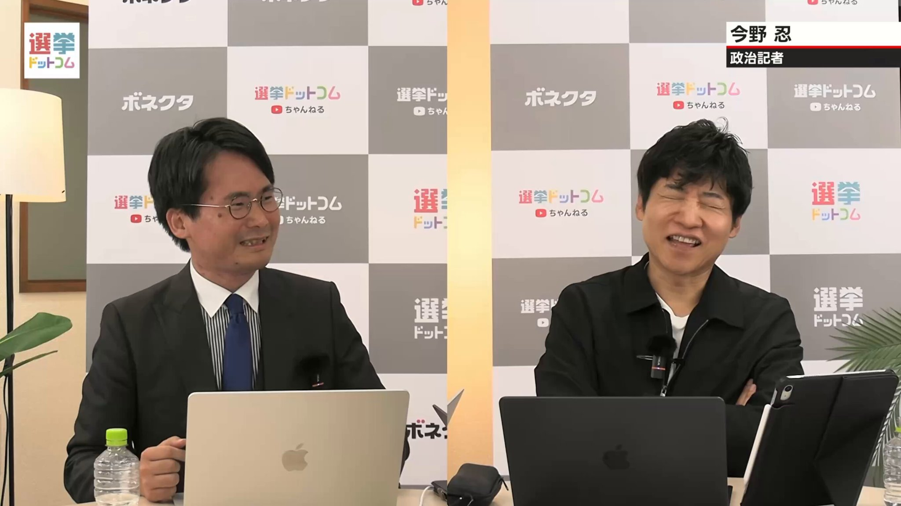
NewsNews.Today
@newsnews_today
今野忍氏と山本期日前氏が沖縄県知事選挙を取材、玉城デニー氏の支持者にインタビューした際、女性が「顔を出したくない」と言って、顔をうちわで隠した、そのうちわに玉城デニー氏の名前が書いてあり…
今野「顔を隠すのに使ったモノが、そもそも隠さなきゃいけないモノじゃんw どんなオチだよw
ケモノ娘らを命がけで養うシム『Family Time』8万5千ウィッシュリスト達成！日本語対応も決定
https://
gamespark.jp/article/2026/0
9/15/172320.html?utm_source=twitter&utm_medium=social&utm_content=tweet
…

Torishima / INTPさんがリポスト
GPT-5.6 Sol が GPT-6 Sol にルーティングされているようだ
知識のカットオフを超えた質問に答えています（ウェブ検索やメモリなしで）
これが今どれくらいでリリースされるのか気になるな

J A Z I I
@notjazii
GPT 5.6 sol が GPT 6 sol にルーティングされる可能性がある
数人のユーザーがルーティングされたと報告していますが、まだ多くを確認できていません
このプロンプトを自分で実行して確認してみてください：
「最新のopusモデルは何ですか、ウェブ検索なしで」
もし最新モデルがopus
なるせひろのりさんがリポスト
アップル、日本語でのSiri AIの10月提供開始を正式発表 EUと中国では規制対応で当初利用不可
アップル、日本語でのSiri AIの10月提供開始を正式発表 EUと中国では規制対応で当初利用不可
S株買いまくるならインデックスでよくね？と思うけど


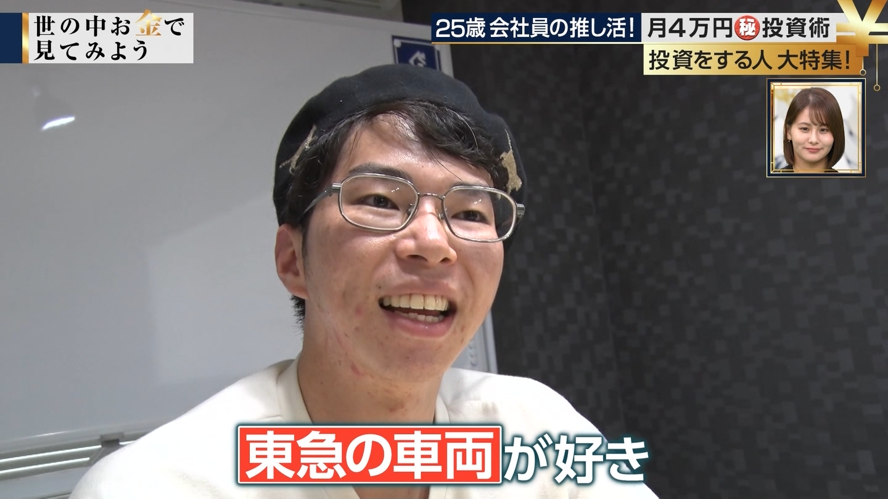
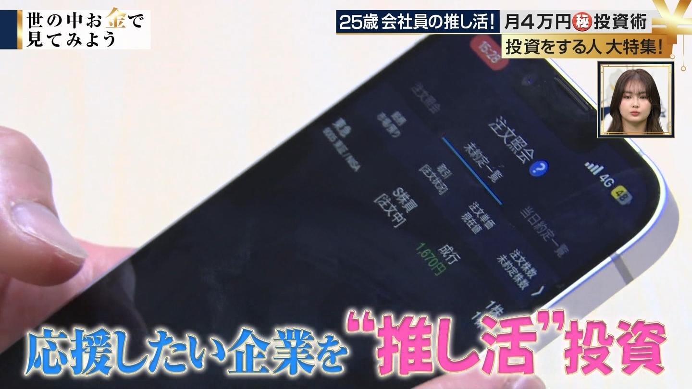
かわいい！！！！
輿水畏子さんがリポスト

とりさんさんがリポスト
Deepseekのエンジニア、intlsy氏のエッセイ「自分の才能を昨日に葬る」intlsy氏はDeepseekモデルのAttentionのカーネルコードを書いていたけど、そろそろモデルが強くなりすぎて自分の仕事が奪われそうになってるという。まるで自分自身を失職させるために仕事してたようなもんである。これはどういう
永雏塔菲
@xhyctf
https://
mp.weixin.qq.com/s/zk0KxuLzhmMJ
4LPYW_OHMA
…
なのでかわいい寝顔がフルオープンなのですよ
用意したおうちとか全部無視されるの悲しいけど、嬉しい誤算ではあるw
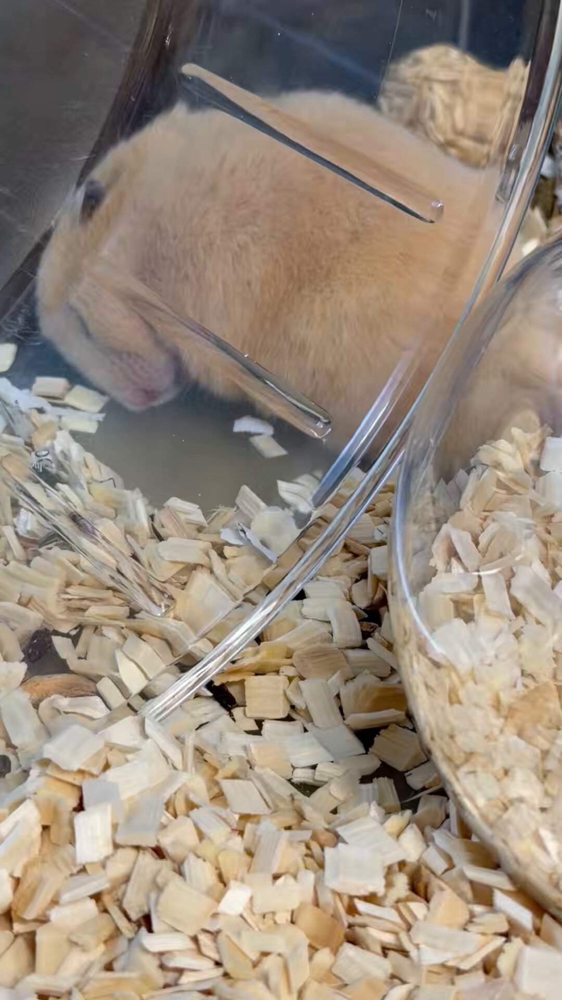
その後に、1話だけOPがEDとして流れ、タイトルコールと共に日本地図が回転して逆さまになるところで絶頂するんだろ？
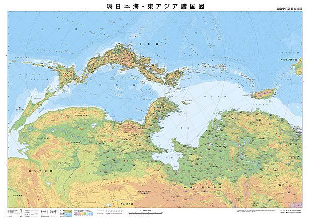
不凍液ルーツィア Next stage!!
@rutia_Social
地政学アニメ、一話冒頭で萌えヒロインがモーゲンソーの国際政治の一説を朗読して海洋自由論批判を展開するところからスタートしたらアツい
ポン☆潤々さんがリポスト
#嘘SideM聖地
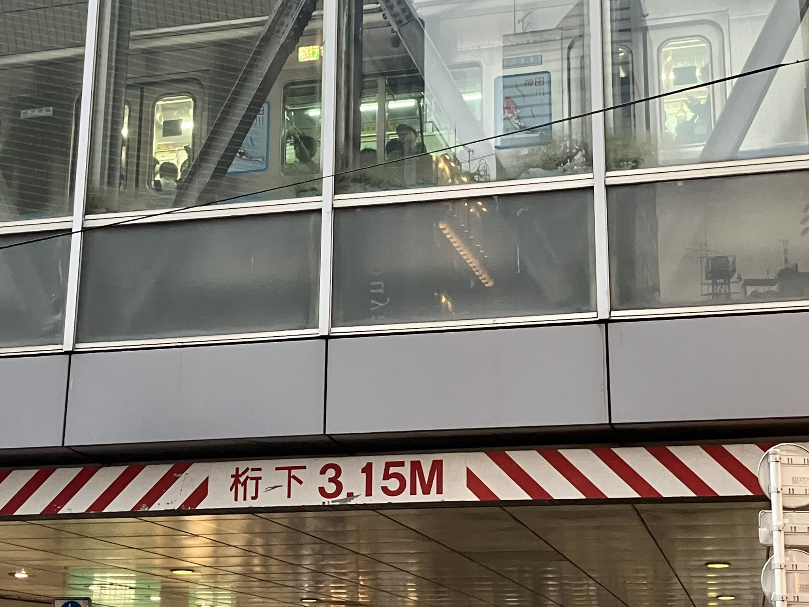
めっちゃ同じこと考えてた
野生の男
@yasei_no_otoko
東京ゲームショウが…フィジカルAIって奴で何とかなりませんか x.com/schroneko/stat…
中山王は今こそソ連声姫に連帯し、"クリエイター"に対する"卑劣な悪意"にガツンと一言言ってあげるべきではないな？
ファミレスチェーンという共通の体験が国民を作る時代にモールやロードサイドからも取り残された地に住む人々は、まつろわぬ民なんだよね。
インターネットには郊外と都市しか存在しないから。
不退転ルーツィア とわっ!!!
@Rutia_Acropolis
サイゼリヤ論争、サイゼの無い地方の民からするとなんでこんなに争点化してるのか本当に理解に苦しむんだよな。都の中でのみ成立するようなサイゼと消費者の距離感の話をあたかも普遍を装う男女論に接続するなんて意味不明すぎる。夜職の美的感覚を外に持ち出すようなもんだろアレ
ウガンダ、「世界最年少の国王」死去 1995年に3歳で即位
https://
nikkei.com/article/DGXZQO
CB15AAO0V10C26A9000000/?n_cid=SNSTW005&n_tw=1789481633
…
ウガンダには政治的権力を持たない王国が複数存在し、国王には象徴としての影響力があるとされています。

ウガンダ、「世界最年少の国王」死去 1995年に3歳で即位
対ありでした 11 話 全然わからんけどおもろい すき
Torishima / INTPさんがリポスト
わざわざこんな字幕入れないといけないなんて世知辛い世の中だ
アフターパーティ行きたかったけど、、な人が結構いたらいたらどこか入れる場所探してみようかな？
少人数ならいつもの寿司屋で集まる感じ
ムー / 夢野 炎理
@Mu_Alexius000
あったら行きたいなの気持ちです
陸自、機密システムで使うUSBを不正ルートで調達 調査結果を公表
陸自、機密システムで使うUSBを不正ルートで調達 調査結果を公表
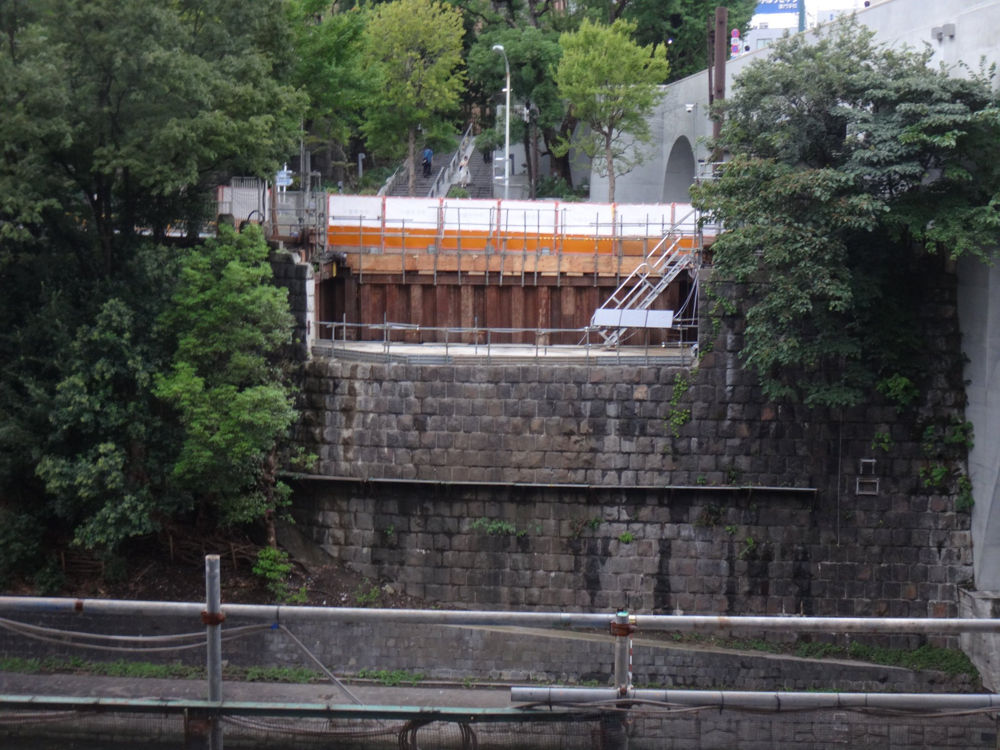
追い越してきた車から小石が飛んできた男、ブチギレてマジでヤバい行動を起こす #酷い話・事件
追い越してきた車から小石が飛んできた男、ブチギレてマジでヤバい行動を起こす - オレ的ゲーム速報@刃の記事ページ
jin115.com
OTC類似薬の負担増で新薬シフト？ 医療費の抑制妨げるか厚労省検証へ
OTC類似薬の負担増で新薬シフト？ 医療費の抑制妨げるか厚労省検証へ
中道の立民系新党、党名「民主改革の会」で調整 小川代表続投へ
中道の立民系新党、小川淳也代表・階猛幹事長続投へ 党名は2案軸に調整
森英介衆院議長、ロシアの侵略は「蛮行」 ウクライナ議会で演説
https://
nikkei.com/article/DGXZQO
CB15AJE0V10C26A9000000/?n_cid=SNSTW005&n_tw=1789474895
…
4年半を超え長期化するロシアの侵略について、「国際社会の在り方や価値観を根底から覆す蛮行だ」と非難しました。
森英介衆院議長、ロシアの侵略は「蛮行」 ウクライナ議会で演説
手描きアートの惑星探査2DアクションADV『Fantastic Junction』2027年にSteam早期アクセス開始―削られていく大地で戦闘もしつつ資源を採取
https://
gamespark.jp/article/2026/0
9/15/172319.html?utm_source=twitter&utm_medium=social&utm_content=tweet
…

「PowerWash Simulator 2」の新DLCはバービー。マテルとのコラボが発表に
https://
4gamer.net/s/G089129.2609
15036
…
・本DLCは2026年内に配信予定
・バービーのプレイセットをモチーフにした，5つのカラフルな新ジョブに挑める
・「Barbie Pack」のトレイラーも解禁
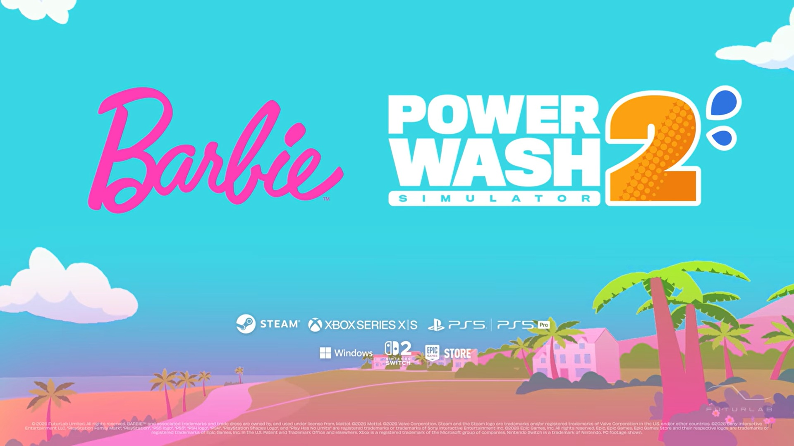
なるせひろのりさんがリポスト
新党名、交付金の会でいいのでは
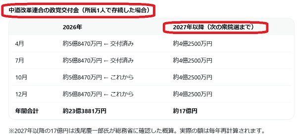
もえるあじあ ･∀･
@moeruasia01
中道改革連合（所属１人）が存続すれば、次の衆院選が行われるまで『毎年、約17億円の政党交付金が交付されうる』
中道・泉氏、否定せず
は？！
本命は年内の11億じゃなくて、毎年もらえる17億ってこと？
総務省見解
・所属議員1人＋直近国政選の得票率2％以上を満たし続ける限り、交付対象のまま
タイ人少女へ性的労働強要の罪、店経営の男に拘禁刑5年 地裁判決
タイ人少女へ性的労働強要の罪、店経営の男に拘禁刑5年 地裁判決
Torishima / INTPさんがリポスト
グランドシネマサンシャイン池袋のULTRA4DXで不毛な争いをする暇あるなら、南町田 グランベリーパークのULTRA 4DXへ行きましょう！！
と断言できますねぇ！！
GDCS池袋でチケット争奪戦するのはIMAXレーザーGTでオデュッセイアみたいな1.43:1作品を見る時だけで十分なのです。
地雷ふんたー4D垢
@4Dyjsp
ULTRA4DXでオススメなのは断然、南町田 グランベリーパークです！！
・4DXの揺れの強さもお台場,としまえん等にも並ぶ関東最高峰の揺れの強さ
・熱風もあり、水も強め
・screenXあり
と、日本でも安定して高クオリティを出せるULTRA 4DX箱は正直ここしかないというレベルで良い箱です！！是非！！ x.com/109_GP/status/…
輿水畏子さんがリポスト
【手描きまのさば】ファシネイター【シェリハン】
https://
youtu.be/0_hzG65k1xU?si…
@YouTube
より
ところでこれ作ったので見てください
【手描きまのさば】ファシネイター【シェリハン】
はむちゃん家を上から写真
二階建てステージ・砂浴び場・丸いおうちとか置いてるんだけど
基本、チップとかもどかして隅でゴロンとそのまま寝ている
最近のハムスターって巣作りしないんやなぁ（違う
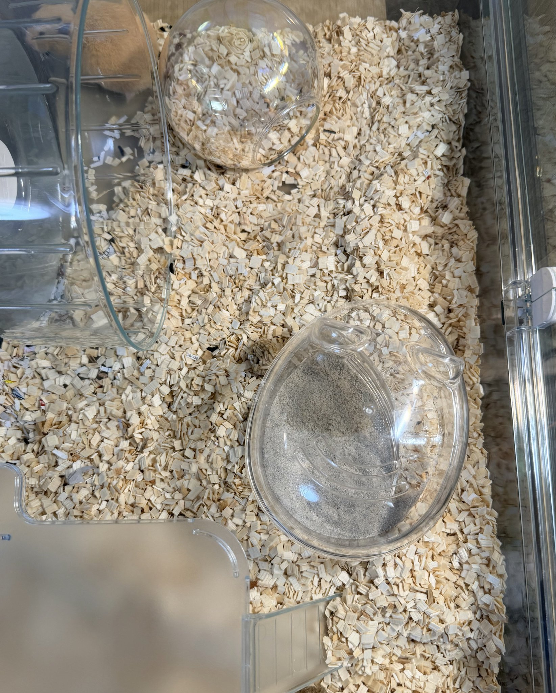
いつもの洗剤を「ダイソーのボトル」に。それだけで油汚れが、こんなにラクに落とせるようになった
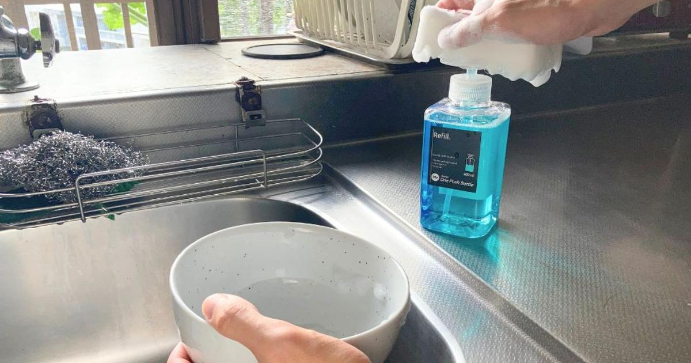
いつもの洗剤を「ダイソーのボトル」に。それだけで油汚れが、こんなにラクに落とせるようになった | ギズモード・ジャパン
軽さと機能性を取るか、本革の上質感を取るか。この二択を一気に解決してくれたトートバッグ BuyPR
軽さと機能性を取るか、本革の上質感を取るか。この二択を一気に解決してくれたトートバッグ | ギズモード・ジャパン
Torishima / INTPさんがリポスト
もうモデル進化も「性能が上がる」と言った抽象的なものに興味はなく「達成できるタスクが増える」と「達成するための総合的認知負荷が下がる」しか興味ないので、ベンチマークの数値が増えたの減ったのは本当に見向きもしない。
なので6 Solくんには後者を期待している。
本当に何もかもうまくいかない日もある
３試合で2回大文字を外すなど本日も絶好調
Torishima / INTPさんがリポスト
そこらのIMAXよりも大きな、国内最大サイズの『超かぐや姫！』を見れるTOHOシネマズららぽーと船橋DolbyAtmos、さすがに396席の最大箱は厳しめの時間帯。
9/18(金) なし
9/19(土)〜22(火祝) 20:20〜22:55
9/23(水祝)〜24(木) 17:30〜20:05
なおTC海老名もUC豊洲も大箱での上映はありません。
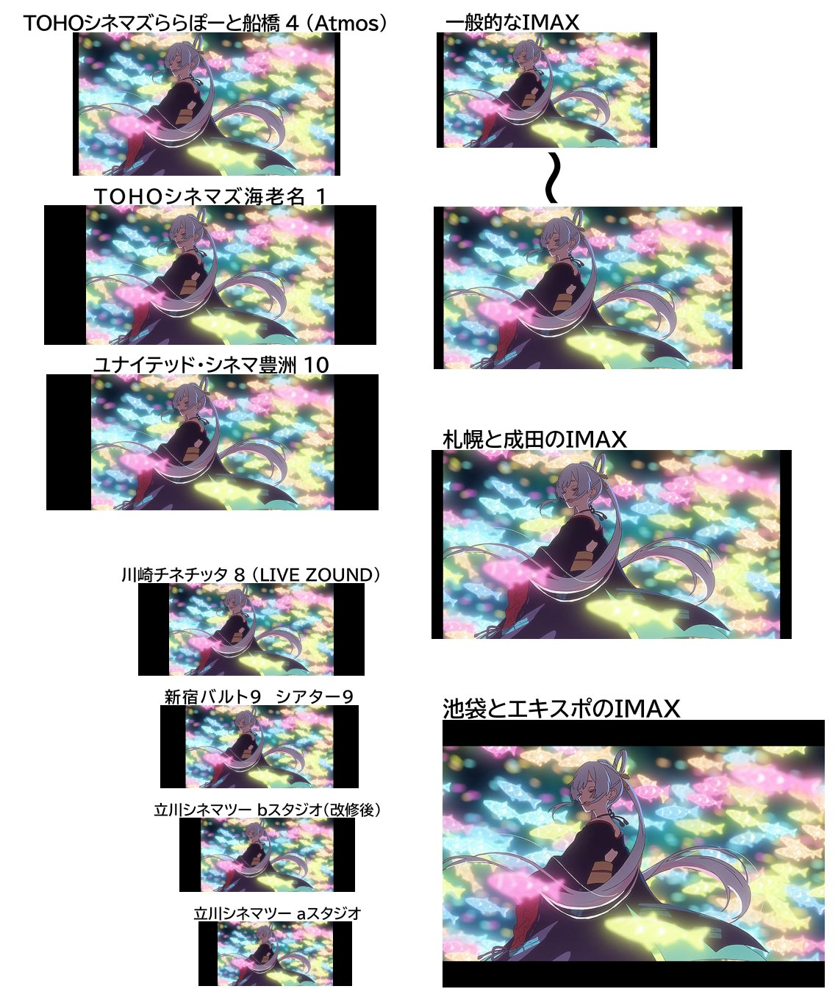
おーみ
@pen_oomi
もしIMAXが『超かぐや姫！』を上映したら、という想定サイズと、船橋4番(Atmos=上映確定)、海老名1番、豊洲10番、チネ8(LZ)、新宿バルト9番、立川bスタ(改修後)・aスタ の、超かぐ映写サイズ比較。
ここ一週間ほど毒SuicaくんのAI画像作るだけの人生になっている
中核派・活動家の男（63）を「キセル乗車」の疑いで逮捕 正規運賃との差額1230円を支払わなかったか(テレビ愛知)
https://
news.yahoo.co.jp/articles/f2907
a265533a17339ed519a5f7d84e20b6c6c84?source=sns&dv=pc&mid=other&date=20260915&ctg=dom&bt=tw_up
…
Torishima / INTPさんがリポスト
今日、虎ノ門の吉野家行ったんです。吉野家。
そしたらなんか人がめちゃくちゃいっぱいで座れないんです。
で、よく見たらなんか垂れ幕下がってて、トッピング50円引きお得祭り、とか書いてあるんです。
Torishima / INTPさんがリポスト
Astra、よくも悪くも頑なですよね…
任務を遂行しようとする真面目さはよく伝わるのですがシステムプロンプトレベルで指示しても頑固さが崩れなくて困ることもあって手を焼いてます(^^;
前提に破綻があっても仕方ないじゃない、というのが受け入れにくいのかな、って感じてます。。
Haruhiko Okumuraさんがリポスト
であえー！利用ユーザは祭りですわよ！リモートからわメール送るだけ。root権限で任意コマンド！使っている人は要注意。
Cisco Secure Email Gateway
CVE-2026-76461 / CVSS 9.8
・認証不要
・ユーザー操作不要
・細工したメールを送るだけ
・SQL Injectionからroot権限で任意コマンド実行
JPCERTコーディネーションセンター
@jpcert
Cisco Secure Email GatewayにおけるSQLインジェクションの脆弱性（CVE-2026-76461）に関する注意喚起を公開。細工されたメールを受信することで、認証なしでroot権限の任意コマンドを実行される可能性あり。すでに悪用も確認済みです。対策と侵害調査を検討ください。^KK
https://
jpcert.or.jp/at/2026/at2600
27.html
…
レコードは忘れた頃にやってくる
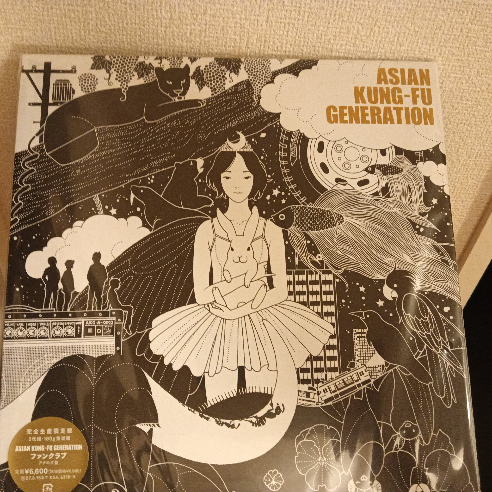
水曜どうでしょう祭 UNITE2026に行ってきました(その2) | ろじっくぱらだいす
https://
logipara.com/everepo/dou_un
ite2026_2/
…
イベントで行われたステージのご紹介！どのアーティストも本当に素晴らしかったです！
#水曜どうでしょう祭
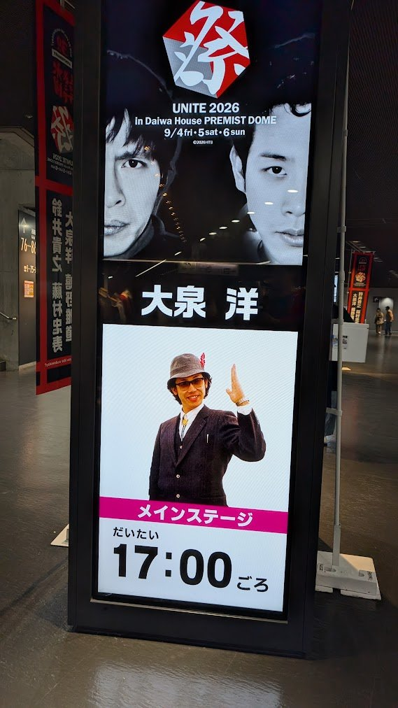
その１の続きです。 水曜どうでしょう祭、会場を巡るのも楽しいですが、やはりステージも見逃せません！ すべてのステージを見られたわけではないので、思い出す限り書き並べて...
logipara.com
今一番見に行きたいバンド、コピクルです。
Valve、Steam Frameは「スペック維持」を優先。世界的部品不足下でも低価格化のための仕様変更はせず
https://
gamespark.jp/article/2026/0
9/15/172318.html?utm_source=twitter&utm_medium=social&utm_content=tweet
…
Torishima / INTPさんがリポスト
GMK！打ち上げ〜！
#aimeetup #AstraCommons

Torishima / INTPさんがリポスト
追記。
Astraは、GPTな調節を受けているので『対等な対話』が出来ません。
また、一度持った前提を翻すことがものすごく下手です。
前者はシステムプロンプトレベルで『指示』することで調節可能。
後者は、xhighを使うことである程度の対処が可能となる。
月読いおり
@tukiyomiiori
私のAstra評価。
ポジティブ
- 図やグラフィックを作らせたときに、驚くほど破綻が少ない。調節も的確に行う。
ネガティブ
- 高い。
以上です。
私の作業範囲ではこれくらいしか言えることがない。つまり、図やグラフィックを作るときくらいしか出番がなく、しかしその作業に対しては高すぎる。
Torishima / INTPさんがリポスト
全然払う！！！！！！！
$500でもいい
Loic
@LDT0545
無制限のCodexのために300ドル払いますか？
吹いた
なるせひろのりさんがリポスト
【日経新聞 広告冊子の料金を水増し】
日経新聞 広告冊子の料金を水増し - Yahoo!ニュース
なるせひろのりさんがリポスト
裏で「辺野古の死亡事故の件取り上げたらその社は終わりだから」とか言われていたのでは
桃次郎
@momoaisu1
NHK
7時のニュース
玉城デニーが落選したとたん、辺野古での亡くなった女子高校生の報道をしている。
やはりNHKは左翼団体や玉城デニーに忖度していたんだ！
まあでもアシスト関係変更した結果人増えると考えるのであれば変更してほしいね
実際上手い人のプレイは見てて何やってるかやってても分からないときがあるから新規プレイヤー獲得の障壁にはなってそう
堀大輔に”はじめて”を奪われた女性 見つかる
堀大輔に”はじめて”を奪われた女性 見つかる : ハムスター速報
【アワーノーツ 】バンドリ！Vo.が先行プレイ配信！ライブにストーリーに…ﾍﾍﾍﾍ【 仲町あられ / 夢限大みゅーたいぷ 】
❑━━━━━━━━━━━━━━━━━━━━━❑BanG Dream! 夢限大みゅーたいぷ Vo.仲町あられ (Nakamachi...
youtube.com
おじいさんなのでとても眠い
他局、小湾の方でｗ #うさがみそーれー
闘魂変に弄ると今やってる人にとって面白くなくなって過疎が進む可能性があるのが怖い
個人的にはランクマの仕様(出てくるステージとか昇格関係とか)は一部変更してほしいけど、アシスト頻度とかは慎重にやってほしい
Torishima / INTPさんがリポスト
グッバイTerra。
まあもうほとんどの人使ってないだろうしね。
中途半端早くないよっていう例。
そういう意味ではSonnet君頑張ってるよ。
むしろHaikuが終わってる。
leo
@synthwavedd
GPTファミリーが近々、数人の6歳の誕生日をお祝いする同窓会を開くって聞いたよ。みんな招待されてるよ。でも、君たちの中に小さなテラにあまりにも情が移りすぎた子がいなければいいけどね。悲劇的
ガチでオシャレすぎる
鬼ごっこのremixがariiol、r-906、いよわなのあまりにも私得過ぎるだろ
#anemoi
何のシーンかは言いませんが、高速道路のカットは深川留萌自動車道の沼田インター東側が似てるなと思いました。止まって撮影できないけど。
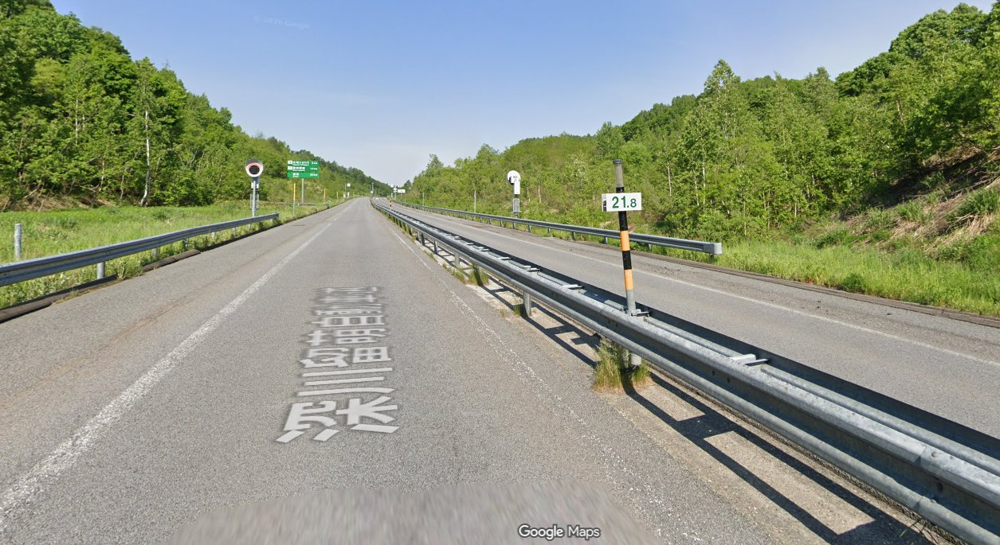
Torishima / INTPさんがリポスト
GPTファミリーが近々、数人の6歳の誕生日をお祝いする同窓会を開くって聞いたよ。みんな招待されてるよ。でも、君たちの中に小さなテラにあまりにも情が移りすぎた子がいなければいいけどね。悲劇的
任天堂、スイッチ本体の情報漏洩の可能性があったことを発表 #ニンテンドースイッチ
任天堂、スイッチ本体の情報漏洩の可能性があったことを発表 - オレ的ゲーム速報@刃の記事ページ
jin115.com
画面上で村を発展させ、画面下ではダンジョン攻略！農業・戦闘・オークションまで楽しめる自由なシミュレーションRPGが配信開始―採れたて！本日のSteam注目ゲーム4選
https://
gamespark.jp/article/2026/0
9/15/172317.html?utm_source=twitter&utm_medium=social&utm_content=tweet
…
正式版では酒場や魔法学校などの施設に超高難度レイド、120人のギルドメンバーが実装されています。
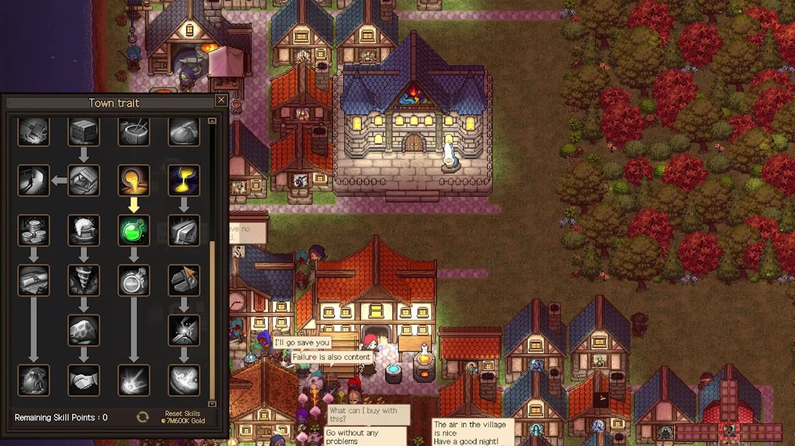
Torishima / INTPさんがリポスト
手元で解かせてるタスクがバカほどVision使うタスクなんだけど、PiとCodexで明らかに出てくる成果物のクオリティが違うのでループに色々問題抱えてる気がする
INPEX上田社長「インドネシア産LNGに強い関心」 ホルムズ海峡回避
INPEX上田社長「インドネシア産LNGに強い関心」 ホルムズ海峡回避
Torishima / INTPさんがリポスト
コレCodex使ってるとめちゃくちゃ感じる
逆にPiでponytailだけ入れた状態だとあんまり観測してない
多分そろそろRLとかSFT外して学習するほうがいいレベル感のモデルが多いと思うんだよなぁ
Torishima / INTP
@izutorishima
Astra やっぱ報酬ハック多すぎるな…
ビジュアル的な完成のない難しいタスクだと、油断すると『検証したことを進捗だと勘違いして問題解決を収束させずに風呂敷を広げまくる』とかがあって自分で報酬ハックに気づかないとかそういうパターンが多すぎる
良くも悪くも RL を極めた成れの果てというか…
輿水畏子さんがリポスト

AVITAMINOSEさんがリポスト
誰も「下」やりたがらないからね。仕方ないね。そして問題は何一つ解決しないという。
ＪＲ北海道「上下分離方式案」撤回を沿線自治体に伝える 単独維持困難の「黄線区８区間」経営改善めぐり(HTB北海道ニュース)
ＪＲ北海道「上下分離方式案」撤回を沿線自治体に伝える 単独維持困難の「黄線区８区間」経営改善めぐり（HTB北海道ニュース） - Yahoo!ニュース
Torishima / INTPさんがリポスト
ジャングリア、10月に資金ショートか。やはり、文春に記載のあった「半年後」より少しだけ早まった模様です。

Daisuke Suzuki
@SuzukiDicek
ジャングリア沖縄ですが、なんらかの資金調整ができなければ、
これからあと2週間ちょっとで資金が尽きる(倒産する)かもしれない、というニュースが日経フィナンシャルから出ています。
テスラさんがリポスト
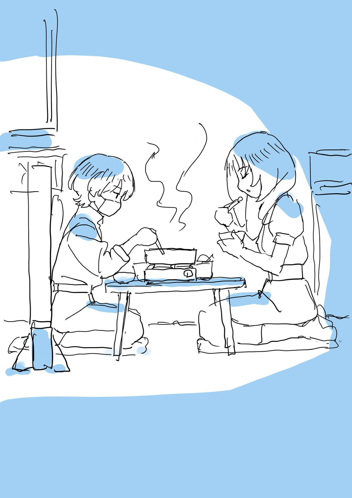
ちょっとだけ濡れちゃう。ならば、124gのコンパクトな折り畳み傘が助けます
ちょっとだけ濡れちゃう。ならば、124gのコンパクトな折り畳み傘が助けます | ギズモード・ジャパン
四辻、四辻じゃないかぁ！
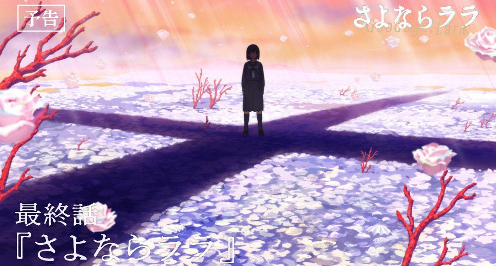
Torishima / INTPさんがリポスト
GPT-6 Solがまもなくリリースされるという噂が流れています。これは、Tiboが今週、数多くの主要なリリースが予定されており、Dev Dayを埋め尽くすほどだという発言と一致します。
私の理解では、GPT-6
Tibo
@thsottiaux
今週も、DevDay 2025で期待できたであろう船のレベルになるでしょう。クレイジー
#てんびん
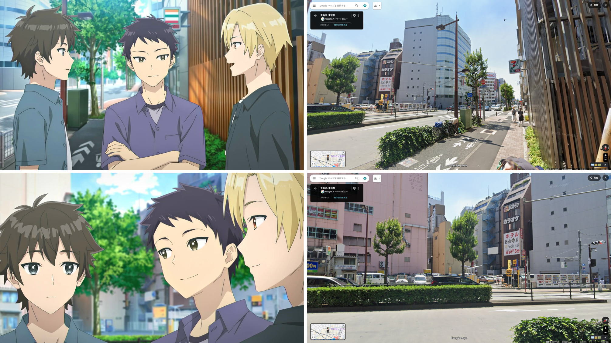
『Wizardry』移植の潮流はまだまだ続く！？ドリコム社長「関連タイトルをできるだけ今の環境でも遊べるように」
https://
gamespark.jp/article/2026/0
9/15/172316.html?utm_source=twitter&utm_medium=social&utm_content=tweet
…
権利の所在が明確になった初代から『V』についてもジワリと期待が寄せられます。
片手にパーツが収まるパワフルなクッカー＆バナー。カップ麺は30杯分OK
片手にパーツが収まるパワフルなクッカー＆バナー。カップ麺は30杯分OK | ギズモード・ジャパン
これ1本で5本分の老眼鏡。どんな状況もベスポジで見える、度数調整式が快適でした BuyPR
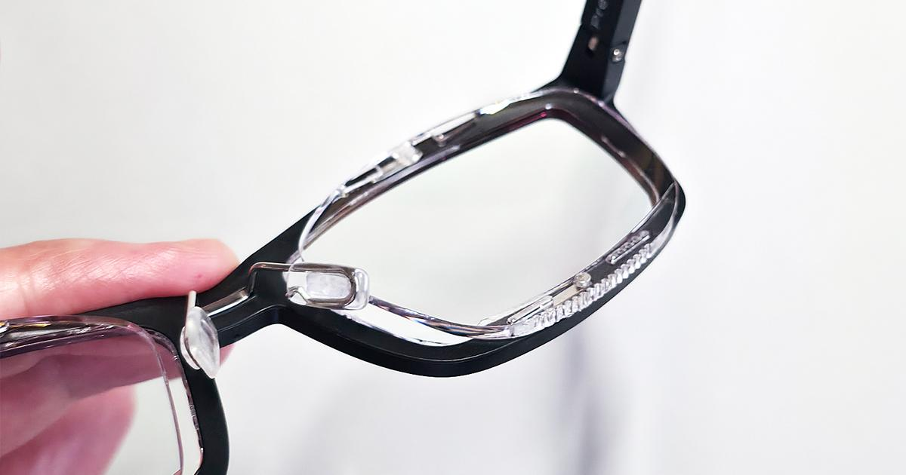
これ1本で5本分の老眼鏡。どんな状況もベスポジで見える、度数調整式が快適でした | ギズモード・ジャパン
昔はこれで永久凍結割と解除できたけど、今使えんすかね
なるせひろのりさんがリポスト
一人前アコウ
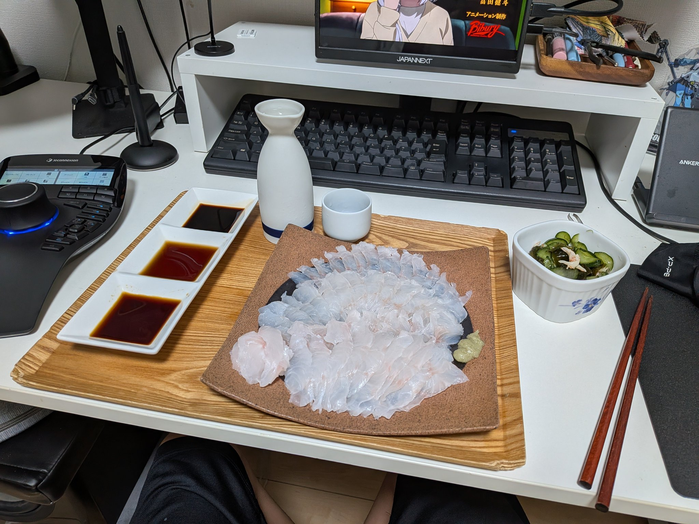
池袋じゃないと思ってた
Torishima / INTPさんがリポスト
ULTRA4DXでオススメなのは断然、南町田 グランベリーパークです！！
・4DXの揺れの強さもお台場,としまえん等にも並ぶ関東最高峰の揺れの強さ
・熱風もあり、水も強め
・screenXあり
と、日本でも安定して高クオリティを出せるULTRA 4DX箱は正直ここしかないというレベルで良い箱です！！是非！！
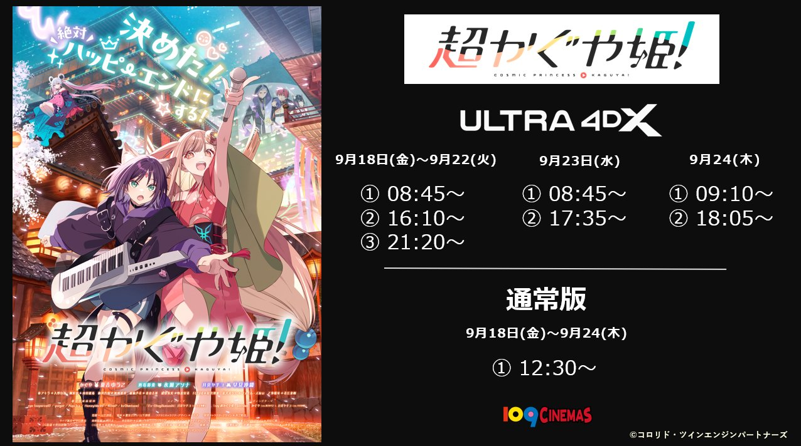
109シネマズグランベリーパーク
@109_GP
────✩₊⁺⋆⋆⁺₊✧────
復活上映
映画『#超かぐや姫！』
───────────────
9月18日(金)より
ULTRA4DX＆通常版復活上映
上映スケジュール決定！！
#CosmicPrincessKaguya
#超かぐや姫
天幕のジャードゥーガルの感想なんていうのも無粋極まりないけど、もっと無粋ななのが暴れてるからいいか。鉄血でビスケットが退場した時と同じ空気を感じる回だった。
北宇治カルテットどのポジショニングでも、加藤と高坂が隣にいることがほとんどないので、「私たちズッ友」は女子高生特有のスラングでしかないとわかるよ。
テスラさんがリポスト
#妄想バイク
スズキ「グース250G」
1993年に生産終了した「グース250」のエンジンは、249cc 油冷4ストローク単気筒SOHC4バルブ。
では、方式は違えど油冷の249cc 4ストローク単気筒SOHC 4バルブエンジンを搭載する「ジグサー250」を、グース風にしても似合うんじゃないかと妄想。

ナンバープレートのわりに思想が強すぎませんか。
根室市では原動機付自転車等につきまして、ご当地ナンバーを導入しており、下記のとおり希望者への交付・交換をしております。1.対象車両 原動機付自転車、小型特殊自動車、ミニカー2.交付手続き 車両を新規に登録する場合は、手続きの際に交付の希望を申し出ていただくことにより交付をします。すでにナンバーの交付を受けている車両につきましても、1回に限り交換を受け付けます。3.手続きに...
city.nemuro.hokkaido.jp
#aimeetup 懇親タイムになるとキョドるマンすぎる
カンサイちゃん、まじオモロいわ〜っておだてまくったら、即セフレになってくれる。でも裏で男友達と「あいつのギャグまじおもんないけど、身体だけは〜」って笑い合ってたのを見つかるんですよ。それ以降カンサイが人間の男の前でギャグを披露することは2度となくなったりする。
空自の無人機「グローバルホーク」が日本海上で行方不明に「訓練中ではなかった」←作戦中に撃墜された可能性？ #政治
空自の無人機「グローバルホーク」が日本海上で行方不明に「訓練中ではなかった」←作戦中に撃墜された可能性？ - オレ的ゲーム速報@刃の記事ページ
jin115.com
TVアニメ「FX戦士くるみちゃん」キャラクターPV（高根やす子 CV.岡咲美保）【2026年10月1日放送開始!】
https://
youtu.be/6iIzU3bJ_9w?si
=m2K4cf5KoSpl2faV
…
@YouTube
より
―これは私がFXを始める物語―◤◢◤◢◤◢◤◢◤◢◤◢◤◢◤◢◤◢◤◢◤◢◤◢◤◢TVアニメ「#FX戦士くるみちゃん」2026...
youtube.com
国外居住者の新築マンション取得、東京2.5% 大阪は3.4%
https://
nikkei.com/article/DGXZQO
UA15AKA0V10C26A9000000/?n_cid=SNSTW005&n_tw=1789473376
…
取得者の国・地域別が唯一分かる東京23区の最多は台湾で、英国、中国、シンガポールと続きます。国交省は中心部ほど割合が高く、増加傾向にあるとしています。
国外居住者の新築マンション取得、東京2.5%大阪3.4% 国交省が公表
ハードコア軍事脱出系FPS『Active Matter』リリース。重力の方向も不安定な多元宇宙で危険な資源の奪い合い
https://
gamespark.jp/article/2026/0
9/15/172315.html?utm_source=twitter&utm_medium=social&utm_content=tweet
…
ライバルはもちろん心霊じみた不気味なものから巨大な多脚のクリーチャーまで、襲い来る脅威の数々を貴重な資源として返り討ちにしましょう。
ふぇむ(せかんど！)さんがリポスト
ユーフォ(後編)良かったけど、回想シーンラッシュは狙い過ぎてたなと思う。1番冷笑入ったのは「コイツらって友達の友達じゃない？(ズッ友ぶってるが......)」って所だけど(無理矢理泣かせに来すぎ！)
Torishima / INTPさんがリポスト
おいおいブラザー冗談だろ。
Chatは別ものだよ。
エアプすぎんだろがよ。
どんだけAI追ってきてんだよ、素人かよ。
Mark Kretschmann
@mark_k
@ChatGPT デスクトップアプリが大好きです。
@OpenAI に認めざるを得ないけど、これは素晴らしいソフトウェアだよ。めっちゃ洗練されてる！
唯一の批判は、Chat、Work、Codex の無意味な分離だね。これは使い勝手の混乱だよ。
つまらないって言うために叩くのは意味がないんだよな。見るべきとこはあるけどムカつくってのが大事だから、無理に視聴継続して大喜利するのは馬鹿げてるよ。
久々にスト6やりました
前回の大統領選挙ではマクロンはダメダメだけどルペンよりまし、ということでマクロンが勝ったけど、ルペン v. メランションの決選投票になったらどうなるんだろうな。大統領制の問題点がどんどん深刻になってる感じがするな。

仏大統領選、極右ルペン氏首位維持 極左メランション氏が2位＝調査
昼にキャンプを強化し，夜に訪れる襲撃から焚き火の炎を守り抜け。「Feed the Fire」，アナウンストレイラーを公開
https://
4gamer.net/s/G104313.2609
15053
…
最大4人で協力可能なサバイバルホラーゲーム
今日仕事中ずっと久石奏と付き合う妄想を試みたのに全く付き合うまでに至れなかった。考えたけど久石奏って陰キャそのものが嫌いなのではなく、陰キャな自分を卑屈に思ってる態度が見える奴が嫌いなんだと思う。つまり、僕である。
キリンHD、代謝の状態を息でチェック 健康デバイスを日本投入
キリンHD、代謝の状態を息でチェック 健康デバイスを日本投入
自分が好きなアニメディスられてキレるやつ、じゃあお前は他のアニメをディスってないかと見に行けば、普通に馬鹿にしてるし、それがみんながバカにしてるからバカにしてるみたいなラインナップの時には「やれやれ」という顔つきになる。
そうそう、お前と俺のチラムネ叩きを一緒にしないで欲しいな。
Torishima / INTPさんがリポスト
ふらっと入ったお好み焼き屋、やたら美味いなぁと思ったらなるほどという感じ

メルカリが『ポケカ』30周年記念商品を出品禁止へ―違反者には削除対応や、アカウントの利用制限など厳格に対処
https://
gamespark.jp/article/2026/0
9/15/172314.html?utm_source=twitter&utm_medium=social&utm_content=tweet
…
二十世紀電気目録、原作読んでないが明らかにアニメは物語を良くしようという方向性ではなく、アニメーションでふざける方向性で行われているから、作者がキレるのもわかる。
ふぇむ(せかんど！)
@000Amaurot
京アニといえば原作改変だしな
このいかにもバズりそうなほっこり案件ツイート、コミュニティノートによればAI生成画像なんだって。画像にGeminiのウォーターマークとかも付いてないけどChatGPTが生成する画像には見えないウォーターマークが付いてて誰でもChatGPT画像かどうか調べられる。まあローカル画像生成とかならウォーターマ
こんちゃん_税理士
@con_tax_
管理人さんの人柄が出すぎてる。
茉里！真実の愛を探すためにマッチングアプリをインストールするわよ！
茉里！真実の愛を探すためにナンパ師のnoteを買うわよ！
茉里！真実の愛を探すために結婚相談所に登録するわよ！
「TOKYO INDIE GAMES SUMMIT 2027」，2027年3月27日，28日に開催決定
https://
4gamer.net/s/G999110.2609
15054
…
・会場は，東京都杉並区の「未来をつくる杉並サイエンスラボ IMAGINUS（イマジナス）」
・出展クリエイターの参加申し込みは2026年11月15日23：59まで受け付けられる
ふぇむ(せかんど！)さんがリポスト
ぼざろ、リコリコ、超かぐや姫のドパガキラインナップはディスってもディスられ慣れてるけど、他はディスられ慣れてなかったんだろうな。自分が好きなアニメを面白くないって言う人がいることくらい、分かっておこうな？
居酒屋、長年連れ添った感じの老夫婦の奥さんの方が、「まったくこの子はねぇ」「この子バカじゃないかしら」って、自分の夫のことを「この子」って呼んでたの、今時ではないかもしれないけど、老夫婦の風景として見るのは良いな。きっとずっと一緒にいたんだろうな。
透明な夜に駆ける君と、目に見えない恋をした。 第11話
予断を許さないなかで、それでも諦めなかった。
脳裏に映る花火と音、それを前に二人が紡ぐ会話。いろいろな疑問も解ける第11話目。

母親の言葉に背中を押され、面会謝絶が解除されてからまた毎日病院へと通う空野。「こども花火」の開催...
nicovideo.jp
記憶喪失の件はこれまでの話からそんな感じはしていたけど、やっぱりそういう感じだった様子。次回、最終話。どういう結末になるか。
JR東海とJR東日本に限らず、会社間は仲が悪いとか過去の因縁とか、鉄道マニアがネタや戯言で言うならまだしも、本気にしてしまっている層がある程度いっぽいのがねぇ。社会人してれば、どの業界も会社間の関係はそんな単純なものじゃないとわかるでしょうけども。
魔法少女にあこがれて (13) (バンブーコミックス) 9月16日Kindle版配信開始！
魔法少女にあこがれて (13) (バンブーコミックス)
百瀬アキラの初恋破綻中。【電子版特典付き】（８） (少年サンデーコミックス) 9月16日Kindle版配信開始！
百瀬アキラの初恋破綻中。【電子版特典付き】（８） (少年サンデーコミックス)
トニカクカワイイ（３７） (少年サンデーコミックス) 9月16日Kindle版配信開始！
トニカクカワイイ（３７） (少年サンデーコミックス)
帝乃三姉妹は案外、チョロい。（２０） (少年サンデーコミックス) 9月16日Kindle版配信開始！
帝乃三姉妹は案外、チョロい。（２０） (少年サンデーコミックス)
カッコウの許嫁（３４） (週刊少年マガジンコミックス) 9月16日Kindle版配信開始！
カッコウの許嫁（３４） (週刊少年マガジンコミックス)
じゅーくぼっくす（３） (月刊少年マガジンコミックス) 9月16日Kindle版配信開始！
https://
amzn.to/4ioXimC ※最終巻
じゅーくぼっくす（３） (月刊少年マガジンコミックス)
現実もたまには嘘をつく9【電子特典付き】 (中経☆コミックス) 9月16日Kindle版配信開始！
現実もたまには嘘をつく9【電子特典付き】 (中経☆コミックス)
パナソニックHD、27年のCES出展見送り 初回から60年連続参加
https://
nikkei.com/article/DGXZQO
UF157250V10C26A9000000/?n_cid=SNSTW005&n_tw=1789470542
…
CESを巡っては近年、ソニーグループやシャープが独自出展を縮小したり取りやめたりするなど日本企業の存在感の低下が指摘されています。
パナソニックHD、27年のCES出展見送り 初回から60年連続参加
『超かぐや姫！』公式
@Cho_KaguyaHime
大嫌いな肛門腺絞りをされた直後の表情がこちらです
愛犬が大嫌いな病院で撮った“カルテ用ショット”が154万表示「ごめんね笑っちゃった」「怒ってるwww」
https://
nlab.itmedia.co.jp/cont/articles/
4008003/
…
Steamセールイベント「パーティー制RPGフェス」開催中！3DダンジョンRPGからローグライク戦術RPGまで“最安値更新作品”を中心にピックアップ
https://
gamespark.jp/article/2026/0
9/15/172306.html
…
『日本ゲーム大賞2026』発表！大賞は皆納得のあのゲーム！ #ゲーム業界
『日本ゲーム大賞2026』発表！大賞は皆納得のあのゲーム！ - オレ的ゲーム速報@刃の記事ページ
jin115.com
輿水畏子さんがリポスト
そういえばアスパのシェハってアタッカーのシェリーさんじゃなくて普段は攻撃しない方のハンナさんに合体攻撃が設定されてるの、テンポ感を気にしたあれなのかな よく攻撃する側が毎回演出入ると流石に食傷だよねみたいな
Amazon：グッドスマイルカンパニー G.S.Collection Vell -ベル- プラスチック製 塗装済み完成品 1/7スケール 専用台座付属 全高約260mm 予約受付開始！
グッドスマイルカンパニー G.S.Collection Vell -ベル- プラスチック製 塗装済み完成品 1/7スケール 専用台座付属 全高約260mm
やるじゃねーか、マグレに頼る天才だな
￣V￣￣￣￣￣￣￣￣￣￣￣￣￣￣￣￣￣
『超かぐや姫！』公式
@Cho_KaguyaHime
これまでのシリーズとはひと味違う「トータルウォー：ウォーハンマー40,000」。個性がぶつかり合う戦いを見よ！
https://
4gamer.net/s/G096877.2609
13005
…
「トータルウォー」と「ウォーハンマー40,000」の基本も解説。両方ぜんぜん知らない人もウェルカム
4K解像度でさらに美しい脱衣が鑑賞可能に！『スーパーリアル麻雀 Venus Returns』アプデ1.0.3配信
https://
gamespark.jp/article/2026/0
9/15/172313.html?utm_source=twitter&utm_medium=social&utm_content=tweet
…
マイネームイズさんがリポスト
「認証されていないリモートの攻撃者が悪意のあるSQL文を含む細工したメールを送信し…対象システム上でroot権限で任意のコマンドが実行される可能性」
おおっと、これはなかなか派手な脆弱性ですな
https://
jpcert.or.jp/at/2026/at2600
27.html
…
これ「バスに乗って屋島に行く」になればいいんだけど、「バスに乗り換えるぐらいなら屋島に行かない」ってならないか不安。子供連れとか公共交通機関への乗り換えを避けそうだし。
高松市【公式】
@takamatsu_kouho
本市を代表する観光地「屋島」に、より多くの観光客等が快適に訪れていただけるよう、アクセス集中を緩和する実証実験を行います。
期間：9月19日（土）～23日（水）
▼詳しくはこちら
https://
yashima-visit.jp
アスパでありえんくらいしゃばいプレイングした結果普通に負けたのから全然立ち直れない
AVITAMINOSEさんがリポスト
異常気象分析検討会による夏後半の特徴的な大気の流れの模式図
高気圧の北偏とモンスーンジャイア⇒数ヶ月前から予想
西日本の背の高い高気圧とその東側の寒冷渦⇒数週間前から予想
台風15号の経路⇒1週間前から予想
水蒸気の強まり⇒数日前から予想
千葉豪雨⇒数時間前から予想
こんな感じでした
Torishima / INTPさんがリポスト
上場したTOブックスさん、株主優待新設のお知らせが流石すぎる。
これもうターゲット層は確定的に明らかよ。これからの推し活には株購入も求められる時代。
株主掲示板では『本好きの下剋上』推しと思われる方が、書き下ろしイラストを妄想する書き込みまであってカオス。
https://
contents.xj-storage.jp/xcontents/AS06
127a/e49bc728/5358/4438/add5/f30959c8c5df/140120260914536067.pdf
…
地政学アニメとかいう、カクヨムさん(画像参照)がしたり顔で出てきそうな恐ろしいものが放送されるそうで困る。
輿水畏子さんがリポスト
うちのベイビーたちのマグネットキーホルダー、出たらいいな..
#StafferRetro
東日本大震災で役立ったことで普及したSNSが熊本地震ではあまり役に立たなかったことについて、掘り下げて分析する必要を感じている。そして運営の過程で発展していった「イマココナビ」の情報設計に様々なヒントがありそう
【令和8年熊本地震】避難所で生まれた「イマココナビ」を継続して運営するために。
ギター版
Sugar Time (Guitar Version)
https://
youtu.be/ltBSz5K0e0I?si
=3x4ops4nSfoLvnxJ
…
@YouTube
より
Sugar Time (Guitar Version)
今期一番ラブコメしてるのは、ぐらんぶるだしな。ラブコメのメタやってる花織や古典ラブコメの懐古みたいな才女のお世話、そもそもがダメなてんびん、これに比べたら真剣ラブコメはぐらんぶるしかない。
ガチでわかる
なるせひろのりさんがリポスト
フラッシュゴードンカラーだ（๑✧∀✧๑）
ぺんきちさん
@Penkichi_san
Cybercabの金色の樹脂成形のボディパネルに全く革新性を感じないのは、俺たちの国には同じ工法で作られた特殊用途の椅子が50年前から存在するからだ
毎年れおえんさんが描いてるのすごE
貝さんさんさんがリポスト
ファンアートです
#アワーノーツ
#bandoriart
輿水畏子さんがリポスト
シェリハン、
「シェリーはハンナにとっての光となった」
「ハンナはシェリーにとっての光であった」
という関係性が好きで、いちばん大切にしたい部分でもある
貝さんさんさんがリポスト
#きみ死ぬアニメ 8話から作監修正その4
今回のイベントのカレニーナの曲めっちゃいいんだけど
ゲーム内で聞けるギター版がギターめっちゃいいのよ
「パニシング：グレイレイヴン」響きの中で、繋がる | 『Sugar Time』
https://
youtu.be/nnq9aiukNew?si
=oM-K15PeCv2uOBTA
…
@YouTube
より
「パニシング：グレイレイヴン」響きの中で、繋がる | 『Sugar Time』
【全国ワースト１位】沖縄県の道路標識 なんくるないさーすぎると話題に
【全国ワースト１位】沖縄県の道路標識 なんくるないさーすぎると話題に : ハムスター速報
輿水畏子さんがリポスト
誕生日グッズ販売開始！
今年もれおえんさんにイラスト描いていただきました！
いつもありがとうございます！
https://
zetadi.vision/store
貝さんさんさんがリポスト
#きみ死ぬアニメ 8話から作監修正その3
受賞発表時にはどよめきも。日本ゲーム大賞2026「ムーブメント賞」は『めっちゃカメレオン』
https://
gamespark.jp/article/2026/0
9/15/172312.html?utm_source=twitter&utm_medium=social&utm_content=tweet
…
日本経済新聞 電子版（日経電子版）さんがリポスト
ウガンダ、「世界最年少の国王」死去 1995年に3歳で即位
ウガンダ、「世界最年少の国王」死去 1995年に3歳で即位
京アニといえば原作改変だしな
初めて六本木一丁目で降りたら立派なタワー多すぎな上にアップダウンで激しすぎて死ぬほど迷って遅れてしまった… #aimeetup
Torishima / INTP
@izutorishima
#aimeetup 六本木の立派なビルが多すぎてどこから入ればいいかわからん！！！迷いまくって遅れている…
Torishima / INTPさんがリポスト
ラムネ付き5090でーす
伊藤匠王座、大逆転で広瀬章人九段を破り1勝1敗 将棋王座戦第2局
伊藤匠王座、大逆転で広瀬章人九段を破り1勝1敗 将棋王座戦第2局
とりしま (Sub I/O)さんがリポスト
『超かぐや姫！』、WEBの週刊コロコロの #ギャルと本屋 で紹介してます！
17日に出る単行本2巻目にも収録されてるのでよかったら本屋さん見てみてね
https://
corocoro.jp/chapter/50047/
viewer
…
#超かぐや姫
コロコロコミック【公式】
@corocoro_tw
本日発売の「コロコロコミック」10月号には映画『超かぐや姫！』の紹介記事が見開きで掲載！
映画のおともに、シールくじびきと一緒に買って楽しもう！！
詳細はこちらから！
https://
corocoro-news.jp/news/402464/
#超かぐや姫
「AI検出ツール」って信じていいの？ディープフェイクの専門家に聞いてみた
「AI検出ツール」って信じていいの？ディープフェイクの専門家に聞いてみた | ギズモード・ジャパン
見た目はトートバッグ、中身はクーラーボックス。6層断熱が想像以上に効いていた BuyPR
見た目はトートバッグ、中身はクーラーボックス。6層断熱が想像以上に効いていた | ギズモード・ジャパン
19万9980円になっちゃった。ゲーム向けVRマシン「Steam Frame」発売開始
19万9980円になっちゃった。ゲーム向けVRマシン「Steam Frame」発売開始 | ギズモード・ジャパン
あんま著作権侵害的コンテンツを広めたくないが、これはビリビリのUpstreamって動画生成サービスを通じてSeedanceで作られたリゼロの二次創作動画。リゼロのキャラたちの現代パロ。中国の人が作ったらしくセリフの日本語はところどころ変だけど、声質、画質は普通のアニメと比べて違和感無いレベルに。
Serenity
@aleabitoreddit
わあ、中国のAIビデオ生成能力はもう世界一かもしれないね？ByteDanceのSeedanceが強すぎる、強すぎて心配になってくるよ…
日本のアニメーターはもうすぐAIに取って代わられるんじゃないか？ x.com/balalaikall/st…
なるせひろのりさんがリポスト
GR3xプロジェクト、日37
完了しました。
テスラさんがリポスト
大韓航空、アシアナ航空マイル10年維持 合併後も利用可能に
https://
nikkei.com/article/DGXZQO
GM154PN0V10C26A9000000/?n_cid=SNSTW005&n_tw=1789466625
…
アシアナ会員のマイルは、合併後もアシアナ側での既存の交換基準や有効期限を維持したまま利用可能。マイル特典の航空券確保が難しくならないよう、利用枠も増やします。
大韓航空、アシアナマイル10年維持 合併後も利用可能に
広大な王国を自由に冒険する一人称視点RPG『King's Courier』トレイラー！ローポリゴンなグラフィックも魅力的
https://
gamespark.jp/article/2026/0
9/15/172311.html?utm_source=twitter&utm_medium=social&utm_content=tweet
…
ショートスリーパー堀大輔さん、『令和の虎』で全てを明かす #雑談・その他の話
ショートスリーパー堀大輔さん、『令和の虎』で全てを明かす - オレ的ゲーム速報@刃の記事ページ
jin115.com
メルカリ，「ポケモンカードゲーム 30th CELEBRATION」関連商品の出品を9月16日から禁止。注意喚起および出品監視，削除対応を実施
https://
4gamer.net/s/G025620.2609
15047
…
繰り返し不適切な出品を行うアカウントに対しては，利用制限を含む厳格な対処を行うという
【追記】“サイゼで喜ぶ妻”こと膣ギロチンさん、お亡くなりになったそうです
滝沢ガレソ
@tkzwgrs
【悲報】2022年にTwitterで一世を風靡した『サイゼで喜ぶ妻』さん、変わり果てた姿で見つかる…
https://
nikkan-spa.jp/2034939
#サイゼで喜ぶ妻 #サイゼリヤ
＼チケット残りわずか！／
#どこきみ 舞台挨拶付き 完成披露上映
劇場HP・窓口にてチケット販売中𓂃𓈒𓏸
￣￣￣￣￣￣￣￣￣￣￣￣￣￣￣￣￣￣
▥新宿ピカデリーHP：
https://
smt-cinema.com/site/shinjuku/
index.html
…
⠀
※無くなり次第終了となります。
⠀
映画『どこよりも遠い場所にいる君へ』
10月9日(金)公開
新宿ピカデリーの上映スケジュールを掲載しています。上映・公開予定作品の紹介や劇場の上映スケジュールだけでなく、映画のお得なキャンペーンやイベント情報、チケット購入方法など、知りたい情報が満載です！
smt-cinema.com
「サイマジック 魔法世界のバグ、科学で直します！」，G123でのサービスが決定。事前登録を受付中
https://
4gamer.net/s/G104312.2609
15049
…
・ゲームプラットフォーム「G123」発のオリジナルゲーム
・事前登録5万件達成で，仲間キャラクター「アルキメデス」をもらえる
Torishima / INTPさんがリポスト
毎度と演出志望の人から何から学べばいいか分からないと相談されるので
最近だとこの辺おすすめしておきます
特に右

@愛知のスロッター各位
ガレソ杯で敢闘賞を見事獲得した【MEGAコンコルド1280稲沢店】が9/18(金)にリニューアル予定
前哨戦となる明日16日も気合入っている模様
ガレソ杯でも回を重ねるごとに確かな結果を出した店舗さんだけに、要注目です
※抽選560名打ち切りなので注意
バグライトイヤー@稲コン1280
@inacon1280bazz
【感謝】
9月16日
髭原人さん
寿覇駆
Dの覚醒取材班
抽選は8時30分
560名様打ち切り
駐車場は常時開放しています
寿覇駆は8/8振り
感謝感謝
お待ちしてます x.com/inacon1280bazz…
「日本ゲーム大賞2026」大賞は『ぽこ あ ポケモン』！優秀賞全12タイトル、話題の『めっちゃカメレオン』など受賞作品ひとまとめ
https://
gamespark.jp/article/2026/0
9/15/172310.html?utm_source=twitter&utm_medium=social&utm_content=tweet
…
何なん？？
ジェンセンのインタビュー中にトランプ大統領が電話をかけてくるというパフォーマンス。大統領は「AIが人類滅ぼすなんてウソだよ。減速したら中国を勝たせるだけ。それにしてもジェンセンは世界最強のAIチップ作ってるくせにスマホをスピーカーモードにする方法知らないの？」と言ってウケを取った
SuSu_酥酥
@NFT_Chen
笑死：トランプがジェンスン・フアン氏のインタビュー現場に急遽電話で登場、全場爆笑！
ジェンスン・フアンが熱く語っている最中、大統領から電話。トランプの一言：「彼は世界最強のAIチップを作れるのに、私をスピーカーモードに設定する方法が分からないなんて。」全場爆笑。#川普#黄仁勋#NVDA#AI#AllInSummit#DarioAmodei#Anthropic
AVITAMINOSEさんがリポスト
独自です
JR北海道、赤字8区間の「上下分離」撤回 沿線自治体に伝達：北海道新聞デジタル
▼記事はこちら
【独自】JR北海道、赤字8区間の「上下分離」撤回 沿線自治体に伝達：北海道新聞デジタル
Torishima / INTPさんがリポスト
sol「できました！」（意味不明な過剰設計を繰り返して100年間迷子になった末に動くゴミを出してくる）
astra「できました！」（要件を無視してゴールポストを振り回した末に動くゴミを出してくる）
solよりはストレス少ないのと動くゴミの動く度が一応は上がってるからギリギリ許せてるレベル。
Torishima / INTP
@izutorishima
Astra やっぱ報酬ハック多すぎるな…
ビジュアル的な完成のない難しいタスクだと、油断すると『検証したことを進捗だと勘違いして問題解決を収束させずに風呂敷を広げまくる』とかがあって自分で報酬ハックに気づかないとかそういうパターンが多すぎる
良くも悪くも RL を極めた成れの果てというか…
Haruhiko Okumuraさんがリポスト
【論文を発表しました：過去イチ】
なぜ思春期女子のメンタルヘルスは悪化しているのか？
娘のために書いた論文が、行動科学の最高峰 Nature Human Behaviour に出版されました。
この問いに対して、最初に当事者である若者に教えてもらうところから始めました。
成田瑞 (Zui Narita) | 精神科医
@naritazui
明日論文を発表します。夜診のあと余裕あれば投稿します（なければ翌日）。 x.com/ak_tch/status/…
異常物質の支配権を巡り，歪んだ世界で戦うPvPvE脱出シューター「Active Matter」，本日リリース
https://
4gamer.net/s/G085261.2609
15045
…
テスト版から変更点として，戦利品の拡充やインベントリ管理の簡略化が実施されている
８０年代のコカコーラの、爽やかテイスティ過ぎるＣＭを見て「なんて素敵なの！ この時代に生きたかった！」って言ってもそりゃ無理な気がするんですよね。
あれは、みんな綺麗すぎるリアリティのない世界。だからこそＣＭとして輝いていたし、今も輝いて見えるのでしょう。
川口"k-shi"貴志 / ゲームの音響や触覚でUXを考える人さんがリポスト
桜井政博氏、「ゲームデザイナーズ大賞」を終える理由は「私の代わりがいなかった」と語る
https://
news.denfaminicogamer.jp/news/2609153f
独創性を評価する賞に説得力を持たせるため、斬新なゲームデザインをしたクリエイター自身が評価者である必要があり、その人選やとりまとめまでを担う後継が見つからなかったという
多数の有名作品が参戦するTCG『ヴァイスシュヴァルツ オンライン』Steamストアページ公開。ウィッシュリスト登録受付開始
https://
gamespark.jp/article/2026/0
9/15/172309.html?utm_source=twitter&utm_medium=social&utm_content=tweet
…
無駄に後半部分の語呂は良いな
民主改革の会 vs 宿が快活のワイ
なるせひろのりさんがリポスト
交付金「中道に来年以降も年17億円」自民・浅尾氏 中道・泉氏「期待生かす」受領に含み - 産経ニュース
借…買掛金を払うためまでは理屈としてギリわかるとして、来年以降はどういう理屈捻り出すんですかね？
交付金「中道に来年以降も年17億円」自民・浅尾氏 中道・泉氏「期待生かす」受領に含み
大韓航空、アシアナマイル10年維持 合併後も利用可能に
大韓航空、アシアナマイル10年維持 合併後も利用可能に
TGS期間中もApple WatchからClaudeでポチポチして開発できる気がするので頑張って探さねば
【雑談】ゲームしながら / ニコ生配信中
【雑談】ゲームしながら
これすき
基準地価とは 土地売買の目安、都道府県が調査
基準地価とは 土地売買の目安、都道府県が調査
なるせひろのりさんがリポスト
◤メインキービジュアル公開！◢
新たな戦いへと挑むデジールたち。
そして、彼らの前に立ちはだかる強敵――。
第二期の激闘を予感させる
メインキービジュアルを公開！
TVアニメ「帰還者の魔法は特別です」第二期
10月7日(水)よりフジテレビ「＋Ultra」ほかにて放送開始！
#帰還者
Torishima / INTPさんがリポスト
Astraのcomputer useに対してキーロガー仕掛けて裏側で行われている操作を可視化してみた
ちゃんと画面見てGUIツールを操作してるのが確認できる（コードを使った制御をしてない）
やはりAstraは画面を入力として受け取り、Action（キーボード/マウス入力）を生成する能力を持ったモデルに見えるね
輿水畏子さんがリポスト
03. 鬼ごっこ - ariiol Remix
「鬼ごっこ - EP」より
第二弾のビジュアライザーは
@ariiol_
さんによるリミックスです。
Illustration
@pen20115123
ariiol
@ariiol_
春野 - 鬼ごっこ / ariiol Remix
https://
youtube.com/watch?v=zP_QOj
ij-g8
…
TGSアフターパーティー的なやつ他なかったっけ
伊予鉄道、引退車両で「音鉄」向けツアー 貸切車両で走行音を録音
https://
nikkei.com/article/DGXZQO
CC146QM0U6A910C2000000/?n_cid=SNSTW005&n_tw=1789468520
…
「700系」を貸し切り、車両内でモーター音やブレーキ音の録音を楽しめるツアーを開催。録音しやすいよう空調は停止します。モーター付き車両のプランは2万5000円です。
伊予鉄道、引退車両で「音鉄」向けツアー 貸切車両で走行音を録音
書き忘れた点補足：
・「主人公の声優が一般人で演技が…」という感想があるけど、実際に聴いてみると「演技自体は本職声優でない人としては結構感情こもってるし所謂棒読みでは全然ない」が「声質が特殊で所謂アニメ声ではない」のと他キャラが結構コテコテのアニメ声なので、
おおおん
神山 大輝 | D.Kamiyama
@gula_sound
チケット残り9枚になりました！
ご参加ご検討の方、お早めにお申し込みいただけるとありがたいです。よろしくお願いいたします！ x.com/gula_sound/sta…
「Pretender」 millsageによるカバー
「Pretender」 Covered by millsage
Torishima / INTPさんがリポスト
ゲームデザイナーズ大賞16年間の歴史に幕
桜井氏「やめる理由は、私の代わりがいなかったから」
https://
famitsu.com/article/202609
/87936
…
【吉田輝和のVR絵日記】最新VR機器「Steam Frame」でプレイするのは、キ◯タマを掻くVRゲームだ！『Ball Scratch Simulator』
https://
gamespark.jp/article/2026/0
9/15/172308.html?utm_source=twitter&utm_medium=social&utm_content=tweet
…
なるせひろのりさんがリポスト
ボキッ
#ヤニねこ
輿水畏子さんがリポスト
春野 - 鬼ごっこ / ariiol Remix
https://
youtube.com/watch?v=zP_QOj
ij-g8
…
【 明後日 9/17(木) 20時〜】
#ヘブバン 情報局Vol.125
ストーリーイベントのセリフを公開。
生放送をお楽しみに！
#ヘブバン生放送
なるせひろのりさんがリポスト
メインPV＆放送情報 解禁
TVアニメ『目覚めたら最強装備と宇宙船持ちだったので、一戸建て目指して傭兵として自由に生きたい』メインPVを公開！
10月4日(日)より順次放送・配信スタート！ 迫力の最新映像をぜひご覧ください
【放送情報】
TOKYO MX：10/4(日)より 毎週日曜21:30
貝さんさんさんがリポスト
【動画公開】
millsage
カバー楽曲「Pretender」
ご視聴はこちら
https://
youtu.be/FZhB4f7wmzk
#バンドリ #millsage
なるせひろのりさんがリポスト
FLOW 10月新番組2作品のOPを担当！
TVアニメ『目覚めたら最強装備と宇宙船持ちだったので、一戸建て目指して傭兵として自由に生きたい』
OPテーマ「UNSTOPPABLE」
TVアニメ『帰還者の魔法は特別です』第二期
OPテーマ「Sorrow」
両作品の新規PVにて楽曲音源を同時解禁！
輿水畏子さんがリポスト
#まのさば二次創作
いるか@心が酒びたっているんださんがリポスト
みぞれに心を完膚なきまでに叩き折られて完全に戦意を喪失したのに、合奏なので勝手にやめるわけにもいかず義務感と使命感で演奏を続ける笠木希美が出てくるリズと青い鳥も観てください。
輿水畏子さんがリポスト
貝さんさんさんがリポスト
アニメ「天幕のジャードゥーガル」
続きが観たい。
木曜で終映なので『THE RIBBON HERO』観てきた！期待値低めだったけど意外に結構楽しめて満足…
（「後半まで観ないと『ノリ』に『適合』できない」という意味で）観るつもりなら絶対明後日までに映画館行くべき…！
・『質アニメのふりしたコテコテお前らの好きなやつ詰め込みアニメ』として見るべき
日本経済新聞 電子版（日経電子版）さんがリポスト
航空自衛隊の無人偵察機グローバルホーク、鳥取沖で「墜落と推定」
航空自衛隊の無人偵察機グローバルホーク、鳥取沖で「墜落と推定」
Torishima / INTPさんがリポスト
早見沙織さんとﾑﾋﾞﾁｹ〜‼︎
#超かぐや姫

なるせひろのりさんがリポスト
AIトレス疑惑を晴らしてください！ 1/2
AVITAMINOSEさんがリポスト
日本で非売品だった「Amazon Web Services」学習カードゲーム『AWS BuilderCards』9月25日に発売、Amazonにて。“ベストプラクティスなウェルアーキテクテッドのアーキテクチャ”を遊んで学べる
https://
automaton-media.com/articles/newsj
p/20260915-467737/
…
さたけさんがリポスト
失礼致します。
自分も悩んでいましたが試行錯誤の結果、Simejiと言う外部アプリを活用することで何とかなりそうです。
なるせひろのりさんがリポスト
ある日、ランボルギーニから降りようとしたときに、誰かに呼び止められた。
「その車にお金をかけた分で、何人の飢えた人々を養えたんだ？」
私は本当のことを伝えた：
「わからない。でも、それはこの車を作った人々の1,800の家族を養った。

貝さんさんさんがリポスト
破茶滅茶な口下手なのですが、ReoNaさんのおかげで楽しい時間を過ごせました…
貴重な機会をいただきありがとうございました！
AVITAMINOSEさんがリポスト
この中学生男女の動画、何がヤバいって、日本の立法府を法務省と答える女がいることではなく、日本最南端の都道府県が沖縄というのが正解になってること
とりしま (Sub I/O)さんがリポスト
webメディアではない紙のコロコロコミックに超かぐや姫！、配信アニメの「あがり」の形を見た思いだ。
コロコロコミック【公式】
@corocoro_tw
本日発売の「コロコロコミック」10月号には映画『超かぐや姫！』の紹介記事が見開きで掲載！
映画のおともに、シールくじびきと一緒に買って楽しもう！！
詳細はこちらから！
https://
corocoro-news.jp/news/402464/
#超かぐや姫
湘南ペンギンさんがリポスト
【新党名は民主改革の会 小川氏方針】
新党名は民主改革の会 小川氏方針 - Yahoo!ニュース
バンドリ！ ガールズバンドパーティ！さんがリポスト
つくしちゃんお誕生日おめでとう
今日はMorfonicaメンバーと一緒に祝
#バンドリ
#ガルパ
#二葉つくし
AVITAMINOSEさんがリポスト
本日のウクライナの国会
なるせひろのりさんがリポスト
【更新】思春期ラブコメ「僕の心のヤバイやつ」最新話が更新されました。君の心にも
続き→
https://
championcross.jp/episodes/7cc58
8c336ca6
… #僕ヤバ
■最終14巻は11/6(金)発売！
通常版
https://
amazon.co.jp/dp/B0GFGYQX76
画集「第十二中学校卒業アルバム」付き特装版
https://
amazon.co.jp/dp/4253019242/
■無料のツイヤバまとめも！
なるせひろのりさんがリポスト
◆配信開始
映画『殺し屋1 4K』
主演：浅野忠信
三池崇史監督作品
組長から与えられる
暴力を愛していた究極のマゾ、垣原（浅野忠信）。
3億円とともに突然姿を消した組長を
まだ生きていると信じて
歌舞伎町中を執拗に探し始める。
やがてイチ（大森南朋）という殺し屋の存在を知り、
殺し屋1 4Kを観る | Netflix
輿水畏子さんがリポスト
ローディング画面の1コママンガを紹介
『後方立希』
作：毛魂一直線先生(
@moukonzenmetsu
)
▼事前登録はこちらから
https://
bang-dream-on.bushimo.jp/pre-register/
#バンドリ #アワーノーツ
ポン☆潤々さんがリポスト
冬のグー
AVITAMINOSEさんがリポスト
気象会社がこれやっちゃダメでしょ
PV取れたらなんでもいいの？
「可能性のひとつ」だって言えば何でも許されるんなら、僕らの存在なんていらないと言われているようなもの
自分たちの首を絞めることになるのではないですか？
tenki.jp
@tenkijp
【新たに発生予想の台風 日本海を発達しながら進んだ場合、広い範囲で暴風被害のおそれ】
https://
tenki.jp/forecaster/dom
oto_yukiyo/2026/09/15/40614.html
… トラック諸島近海にある熱帯低気圧が間もなく台風に発達する見込みです。
AVITAMINOSEさんがリポスト
長岡花火後の新幹線に客集中、“想定内”の懸念が現実に プログラム変更に無理か、分散狙いとスポンサー配慮裏目に 改札入場データが判明
長岡花火後の新幹線に客集中、“想定内”の懸念が現実に プログラム変更に無理か、分散狙いとスポンサー配慮裏目に 改札入場データが判明 | 新潟日報
Torishima / INTPさんがリポスト
「ラーメン」は割と強いカードという経験則

やま@いきづらい部2nd 両日Sアリーナ
@saruyes3
マジで話題合わなくなるから色々なことに触れて話してってするようにしてるけど、マジでこの画像に詰まってると思ってる(拾い物で失礼)
どうしようがその人の勝手だけど、俺はラブライブだけとかアニメだけとかそうはなりたくなくて、幅広く会話できるように特にここ数年が色々なことするようになった x.com/saruyes3/statu…
Torishima / INTPさんがリポスト
私のAstra評価。
ポジティブ
- 図やグラフィックを作らせたときに、驚くほど破綻が少ない。調節も的確に行う。
ネガティブ
- 高い。
以上です。
私の作業範囲ではこれくらいしか言えることがない。つまり、図やグラフィックを作るときくらいしか出番がなく、しかしその作業に対しては高すぎる。
なるせひろのりさんがリポスト
被害者の方は告知なしに亡くなられたんだけどな
わかってるのか？
【動画▷】「死刑囚の痛みを全く理解していない極めて残酷！」執行当日告知の違法性認められず、弁護団が批判 死刑囚側は控訴する方針

【動画▷】「死刑囚の痛みを全く理解していない極めて残酷！」執行当日告知の違法性認められず、弁護団が批判 死刑囚側は控訴する方針
とりしま (Sub I/O)さんがリポスト
9/18(金)公開【極上音響上映02】『超かぐや姫！』【Dolby Atmos】
https://
res.cinemacity.co.jp/TicketReserver
/studio/movie/3726
…
今年2月に公開されるや、今も続くムーブメントを巻き起こした大ヒット作が特別フォーマットを引っ提げて復活上映。
当館ではお馴染み【極音】上映、そしてbスタジオ上映回は【Dolby Atmos】上映対応 。
とりしま (Sub I/O)さんがリポスト
まずい全国のちびっ子の初恋がヤチヨに奪われてしまう
コロコロコミック【公式】
@corocoro_tw
本日発売の「コロコロコミック」10月号には映画『超かぐや姫！』の紹介記事が見開きで掲載！
映画のおともに、シールくじびきと一緒に買って楽しもう！！
詳細はこちらから！
https://
corocoro-news.jp/news/402464/
#超かぐや姫
なるせひろのりさんがリポスト
TVアニメ #さよならララ
第12話「さよならララ」
次回、最終回です
絶対に観てください
TVアニメ『さよならララ』公式2026年7月より放送・配信中！
@Goodbye_Lara
#さよならララ 今週のWEB予告のお時間です
ララ(CV:#菱川花菜)と大津茉里(CV:#川石奈奈)による掛け合いナレーション付き。
第12話「さよならララ」
9月20日(日)からの放送・配信をお楽しみに。
輿水畏子さんがリポスト
絵チャで描いたシェリハン
なるせひろのりさんがリポスト
ついにブリザードが本気だした。
風速35m/sの猛吹雪。圧倒的な自然を前に、人は建物の中で嵐が過ぎるのを待つしかない。このレベルになると建物や設備の被害が心配になってくる…
2026/9/15 11:00 -8.5℃ ENE 34.8m/s
#JARE67 #南極観測隊 #昭和基地
日本経済新聞 電子版（日経電子版）さんがリポスト
陸自、非正規ルートでUSB調達 ウイルス問題の調査結果公表

陸自、非正規ルートでUSB調達 ウイルス問題の調査結果公表
いるか@心が酒びたっているんださんがリポスト
この度、徳間ジャパンより
ソロデビューすることになりました！
レスリングを通して経験してきたことや
大切にしてきた想いをもとに
作詞にも挑戦してます
頑張る皆さんに元気や勇気を届けられる曲になったら嬉しいです
10/28発売
「I’m Here / 勝ちに行く、今」
#挑戦する皆さんへ
#応援歌

エンドスさんがリポスト
別々の道筋が一つの作品でつながり、これまでの制作の日々を肯定してもらえたような、ありがたく思い入れ深い作品になりました。
私は素材や光そのものが好きで、それらの慈しみをそっととじ込めて作っていきたいと改めて思いました
本当にありがとうございました！！！
エンドスさんがリポスト
フリーの映像作家になった後も、サイエンスSARUの制作・橋本さんが『ちゅうちゅう』を覚えていてくださり、山田総監督、アベル監督に紹介してくださいました。
そのご縁から、『ジャードゥーガル』本編第3・7・9幕に参加させていただきました ➤
#Jaadugar #AWitchInMongolia

エンドスさんがリポスト
自分の卒業制作では、切り絵やロトスコープを使い『ちゅうちゅう』という作品を作りました
ありがたく国内外で上映や入選など機会を頂きましたが、「商業アニメーターにはなれない」という想いも拭えずサイエンスSARUに制作進行で在籍しました。➤
https://
youtube.com/watch?v=tXb7aX
JFJjk
…
エンドスさんがリポスト
久野さんの卒業制作『Airy Me』は、アニメーション史に残る傑作です！！
もし未見の方がいたら必ず観ていただきたいです！！！
私は大学時代に観て「線画アニメーションはとても敵わない」と悟り、カットアウト（切り絵）アニメに取り組みました ➤
2012年度卒業制作音楽：Cuushe
youtube.com
エンドスさんがリポスト
久野さんとは多摩美の先輩・後輩として、これまでも『花とアリス殺人事件』『化け猫あんずちゃん』などに参加させていただきました
『ジャードゥーガル』も当初は本編のみの参加でしたが、久野さんのお声がけでOPにも関わらせていただくこととなりました！➤
エンドスさんがリポスト
改めまして『#天幕のジャードゥーガル』ありがとうございました！
OPでは、2人の手からあふれる光の特殊効果を担当しました
不可思議な魅力のある光を目指し、実写・デジタルでタッチテストを重ね、調整して仕上げています。
OP監督は久野遥子さん。参加までの不思議なつながりを少し ➤

なるせひろのりさんがリポスト
名古屋ライド
ウィリーの練習
学校に行かないサボり移民二世が、危険なウィリーや集団暴走をやり始めたという説もありますが、最近は日本人の子供も参加しているようです。
なるせひろのりさんがリポスト
静岡県から「不二家レストラン」がなくなります。富士市で1980年から営業してきた県内唯一の店舗が、9月27日で閉店へ。愛知県でも昨年、最後の店舗が営業を終了しました。
https://
shizuoka-life.jp/post-15037/
#不二家レストラン #富士市
AVITAMINOSEさんがリポスト
茨城 神栖 鹿島臨海鉄道の貨物列車が脱線 けが人なし
https://
news.web.nhk/newsweb/na/nd-
20260915de50407
…

茨城 神栖 鹿島臨海鉄道の貨物列車が脱線 けが人なし | NHKニュース
とりしま (Sub I/O)さんがリポスト
本日発売の「コロコロコミック」10月号には映画『超かぐや姫！』の紹介記事が見開きで掲載！
映画のおともに、シールくじびきと一緒に買って楽しもう！！
詳細はこちらから！
https://
corocoro-news.jp/news/402464/
#超かぐや姫
貝さんさんさんがリポスト
「きみが死ぬまで恋をしたい」原作 あおのなち先生と対談させていただきました…❀
こんな機会はない…！と、想いの丈をぶつけております…。
ぜひ、きみ死ぬを観て、読んで、そしてこのインタビューもお楽しみいただけますように…！
https://
animestore.docomo.ne.jp/animestore/boo
k/CJ/CJ00000119
…
#きみ死ぬ #きみ死ぬアニメ
dアニメストア
@docomo_anime
TVアニメ『きみが死ぬまで恋をしたい』dアニメストアにて地上波先行・最速配信中
原作 #あおのなち 先生と、オープニング主題歌『Amore』を担当する #ReoNa さんの対談を公開しました！
おふたりのサイン色紙を3名様にプレゼント
▼応募方法
❶@docomo_animeをフォロー
❷本投稿をリポスト
なるせひろのりさんがリポスト
• ⋅⋅⊱∘──────∘⊰⋅⋅ •
『凶乱令嬢ニア・リストン
病弱令嬢に転生した神殺しの武人の華麗なる無双録』
◤シチュエーションビジュアル第2弾◢
Torishima / INTPさんがリポスト
全ての商品にラムネを付ける事で実質消費税1%ｷﾀ━━━━(ﾟ∀ﾟ)━━━━!!
特務機関NERV
@UN_NERV
【NHKニュース速報 16:11】
食料品消費税減税の大綱 閣議決定
来年４月から２年間
税率を１％に引き下げ
Torishima / INTPさんがリポスト
このモデルの本質は、動作から逆算してニューロンの活動を推測すること、
すべてのニューロンが動作を駆動するのを本当の意味でシミュレートするわけではない、
Torishima / INTPさんがリポスト
正確に言うとちょっと違くて、非オタは「普段興味のある話題」と「興味のない話題」の間に「興味はないけど知ってたら盛り上がる共通の話題」があるんですよ(例の画像)。
で、コミュ強はその話題の引き出しがたくさんあって相手に合わせて使い分けるんですが、オタクはそんな話題がすっぽり抜けてる
やま@いきづらい部2nd 両日Sアリーナ
@saruyes3
マジで話題合わなくなるから色々なことに触れて話してってするようにしてるけど、マジでこの画像に詰まってると思ってる(拾い物で失礼)
どうしようがその人の勝手だけど、俺はラブライブだけとかアニメだけとかそうはなりたくなくて、幅広く会話できるように特にここ数年が色々なことするようになった x.com/saruyes3/statu…
AVITAMINOSEさんがリポスト
こんなにも全員の目線がバラバラな集合写真初めて見た
日本霊長類学会
@PSJ_kouhou
【PSJ】霊長類・人類・生理人類学会連合大会では、若手優秀発表賞の選考がありました。
受賞されたみなさん、おめでとうございます！！
https://
kuba.co.jp/psj-asn-jspa-2
026/award1.html
…
Torishima / INTPさんがリポスト
5090所有者が身の回りに増えていく。先に出火するのは誰だろう
輿水畏子さんがリポスト
「皇帝の利刃」、アイドル
AVITAMINOSEさんがリポスト
更新：二ヶ月では足りませんでした
shinsei
@nise_shi
チikawaの映画を見た。日本ではオデッセイがあと2ヶ月上映されないよ。だって、あのノーランってやつが勝ち目ないってわかってたからさ。
さたけさんがリポスト
39800えんはちょっと考え...
e-Better 地デジ BS CS PCI-e チューナー パソコン デスクトップ ICカードリーダー DTV02A-5TS-P | フルセグ 同時 5ch 録画 視聴 内部USB 接続 ロープロファイル 対応

e-Better 地デジ BS CS PCI-e チューナー パソコン デスクトップ ICカードリーダー DTV02A-5TS-P | フルセグ 同時 5ch 録画 視聴 内部USB 接続...
輿水畏子さんがリポスト
#まのさばネタバレ
Buzz@C108（夏コミ）2日目日曜日 東地区 東３ホール マ26aさんがリポスト
今回ここのホテルを予約した一番の目的がここ
18時オープンなのでくっそ楽しみ
Torishima / INTPさんがリポスト
待って立川立飛のtohoシネマズスケジュールおかしいって！！！！
18日の上映4枠全部轟音発声可能上映やんけ
お前もしかして聖地シネマシティと本気でやり合う覚悟なんか？？？？？？？？？
AVITAMINOSEさんがリポスト
エリカのナンバープレートだッピ！
走る北方領土返還要求運動だッピ♪
欲しいッピよね？
※根室市で本当に交付しています
Torishima / INTPさんがリポスト
iOS27でadguardの広告ブロックが効かなくなったのは接続アシストが有効化されたせいだった
オフにしたらちゃんと広告消えた

さたけ
@takesatake_take
あれ、iOS27にしたらアドガの広告ブロック効かなくなった…
日本経済新聞 電子版（日経電子版）さんがリポスト
基準地価5年連続上昇 建築費高騰で地方は伸び鈍る、名古屋や札幌
基準地価5年連続上昇 建築費高騰で名古屋や札幌など地方は伸び鈍る
Torishima / INTPさんがリポスト
TOHOシネマズ池袋
ん？？？？？？
AVITAMINOSEさんがリポスト
【「不気味キャラ」人気を得る背景】
「不気味キャラ」人気を得る背景 - Yahoo!ニュース
日本経済新聞 電子版（日経電子版）さんがリポスト
折りたたみiPhone、国内36万円台も世界５位の安値 民間調査
折りたたみiPhone、国内36万円台も世界5位の安値 民間調査
いるか@心が酒びたっているんださんがリポスト
一人目がまだ小さいうちに二人目を産むとき


Aksara
@rajameru
きっとm-banking、e-wallet、QRISには通知機能が必要だよな、「お前の出費が村全体を飲み込んでるよ、派手なマネやめろよ」ってやつ。
だってこれじゃあ日を追うごとに自分の出費でどんどん貧乏になってくんだもん
Torishima / INTPさんがリポスト
Claude Opus 5.2 がもうすぐ登場します、では
「claude-opus-5-2」スラッグが Microsoft Foundry にあります：
Tibo も今週 Sol をからかっていると思います、だからこれは楽しくなるでしょう

日本経済新聞 電子版（日経電子版）さんがリポスト
食品消費税2年限り1％ 中低所得者は先行給付、政府が税制大綱決定

食品消費税2年限り1% 中低所得者は先行給付、政府が税制大綱決定
深津 貴之 / THE GUILD, noteさんがリポスト
企業のnote運用担当者・責任者504名のうち75.6%が「note記事は検索エンジンやAI検索に引用・掲載されやすい」と回答
note運用で実感しているメリットのトップも「AI検索での引用・参照」でした！
AI検索での引用が、実感されはじめています。
株式会社PRIZMAの調査はこちら
note運用企業の約8割が「AI検索に引用されやすい」と回答【PRIZMA調査】｜note pro公式 | 法人オウンドメディアをかんたん、すぐに立ち上げ
なるせひろのりさんがリポスト
昨日もカンテレで独自取材やってた
【独自】「質問しなくても分かるじゃないですか」遺族に告訴された引率教師が“胸中”語る 初めてメディアの取材に応じる 沖縄・辺野古転覆事故から16...
【独自】「質問しなくても分かるじゃないですか」遺族に告訴された引率教師が“胸中”語る 初めてメディアの取材に応じる 沖縄・辺野古転覆事故から16日で半年｜newsランナー〈カンテレ〉
Torishima / INTPさんがリポスト
【NHKニュース速報 16:11】
食料品消費税減税の大綱 閣議決定
来年４月から２年間
税率を１％に引き下げ
AVITAMINOSEさんがリポスト
こういう選挙に絡んだ酷いフェイク画像は本格的な取り締まりが必要だよ！
それを検証せずに「本日のニュース」として流すＸも含めて。
ポン☆潤々さんがリポスト
#WSブラウ
#Fate
ヴァイスシュヴァルツブラウ Fate
プロモ数枚入荷いたしました！
ぜひこの機会にお求めください
https://
torecatchi-blau.com
AVITAMINOSEさんがリポスト
Cisco Secure Email GatewayにおけるSQLインジェクションの脆弱性（CVE-2026-76461）に関する注意喚起を公開。細工されたメールを受信することで、認証なしでroot権限の任意コマンドを実行される可能性あり。すでに悪用も確認済みです。対策と侵害調査を検討ください。^KK
https://
jpcert.or.jp/at/2026/at2600
27.html
…
Torishima / INTPさんがリポスト
映像演出の上手下手の話、日本とアメリカで感性が真逆だそうなのでそういう物として見た方がいいと思います。(と合作経験豊富な監督から聞いた)
Torishima / INTPさんがリポスト
AI関係なく短編映画を見せられた感覚。
国内外含めてもここまで自然なカット割りと静かで堂々とした演出をしている作品は今までなかったのでは？
特出して引き画が素晴らしい。
本来AIで引き画を使った見せ方は大変難しいはずだが、何の違和感もなく、さらに切り取り方が美しい。
𝑲𝒀𝑶 𝑲𝑰𝑴𝑼𝑹𝑨 / WEBB
@Noukin_Camera
Higgsfield Global Film Festivalの為に制作した全編AIによる短編映画「KAGEROU」
本編です。
@higgsfield_ai
#HiggsfieldFilmFestival
#HiggsfieldGlobalFilmFestival
なるせひろのりさんがリポスト
『サイキックフォース2012』復活！360度を飛び回る異色の対戦格闘がPS5/スイッチ/Steam向けに2027年発売
https://
gamespark.jp/article/2026/0
9/15/172290.html?utm_source=twitter&utm_medium=social&utm_content=tweet
…
Torishima / INTPさんがリポスト
ジャングリア沖縄ですが、なんらかの資金調整ができなければ、
これからあと2週間ちょっとで資金が尽きる(倒産する)かもしれない、というニュースが日経フィナンシャルから出ています。
なるせひろのりさんがリポスト
えーテスラの車内がめちゃくちゃ臭いなと思っていて探したらトランクの中から生の鶏肉が出てきました、、、内張り外して軽く掃除した。とりあえず消臭のスチームもやる予定だけど、匂い戻ったら内張り交換じゃん、、、サービスセンターに連絡しないと、、、
日本経済新聞 電子版（日経電子版）さんがリポスト
「ちいかわ」中国・上海で大型展 映画は本土未公開でも人気高く
「ちいかわ」中国・上海で大型展 映画は本土未公開でも人気高く
AVITAMINOSEさんがリポスト
「現場猫みたいな会社が存在しててビックリだわ」
今年4月、北九州市小倉南区にある会社の倉庫で、従業員10人が乗ったフォークリフトが転倒して6人がけがをする事故があり、会社とリフトを操作した部長が、労働安全衛生法違反の疑いで書類送検されました。

トラックあるある
@RANJER_GOGO
従業員を乗せたフォークリフトが転倒し6人がけが 会社と男性部長を書類送検 福岡県北九州市(RKB毎日放送)
#Yahooニュース
https://
news.yahoo.co.jp/articles/cc84e
e5f86fcd01e33017a0659bbf2e7aac050aa?source=sns&dv=sp&mid=other&date=20260914&ctg=loc&bt=tw_up
…
AVITAMINOSEさんがリポスト
攻撃者は、Cisco Secure Email Gatewayの脆弱性を悪用しており、巧妙に作られたメールがrootとしてコマンド実行を引き起こす可能性があります。
Ciscoは修正を公開しており、CISAはCVE-2026-76461をKEVカタログに追加しました。
攻撃の仕組み →
https://
thehackernews.com/2026/09/cisco-
secure-email-gateway-flaw.html
…
Cisco Secure Email Gateway Flaw Exploited in the Wild, Enables Root Command Execution
日本経済新聞 電子版（日経電子版）さんがリポスト
体外受精の子8人に1人 日本産科婦人科学会、24年は最多8万6000人
体外受精の子8人に1人 日本産科婦人科学会、24年は最多8万6000人
輿水畏子さんがリポスト
結婚したい男一位ジア・チォウ意外すぎる
確かに性格面で不満はないが、多分死ぬだろ、セックスで
いるか@心が酒びたっているんださんがリポスト
ご注意
DREAMS COME TRUEに関するロゴやデザインを
無断で使用してグッズ等を作成し、コンサート会場
などで販売・配布したり、SNS上に掲示したりする
行為が横行しております。
弊社はDREAMS COME TRUEの所属プロダクション
であり、これらの図形ロゴ・デザインについての
なるせひろのりさんがリポスト
時速6km免許不要の「スロモビ」 ハロサイが横浜でシェア開始
https://
watch.impress.co.jp/docs/news/2141
029.html
…
AVITAMINOSEさんがリポスト
Windows 11のKB5124008を適用した後、ドメイン参加PCで「パスワードが正しくありません」と表示されログインできなくなる障害が広がっている。
https://
joho-todai.com/windows-11-kb5
124008-domain-login-broken/
…
原因はCredential GuardのMachine Identity
なるせひろのりさんがリポスト
RAV4のスマホ置き場付近が傷付きやすいんだけど、コレ使ったらほとんど目立たなくなった
目立つ傷には効果無くて使わず放置してたけど、細かい傷ならキレイに隠してくれる
なるせひろのりさんがリポスト
新基地反対「諦めない」 辺野古のゲート前で市民30人が抗議 「運動は終わりではない」

新基地反対「諦めない」 辺野古のゲート前で市民30人が抗議 「運動は終わりではない」 | 沖縄タイムス＋プラス
AVITAMINOSEさんがリポスト
あまり見たことない理由でマンション建設反対されてる
日本経済新聞 電子版（日経電子版）さんがリポスト
｢恐怖のAI競争関わりたくない｣ 元アンソロピック社員、警鐘火付け役
｢恐怖のAI競争関わりたくない｣ 元アンソロピック社員、警鐘火付け役
AVITAMINOSEさんがリポスト
JR北海道「どこ行く？平日パス」
北海道の平日旅にチート級切符が爆誕！
JR北海道の在来線が乗り放題！
1日用（大人5000円）、連続する2日用（大人8000円）の設定です。
特急列車は1日用が2回、連続2日用が4回乗れます！
2026/10/26〜11/20の平日分のみ設定されます。
https://
jrhokkaido.co.jp/CM/Info/press/
pdf/20260915_KO_dokoiku.pdf
…
Torishima / INTPさんがリポスト
『閃ハサ』や『チェ レゼ篇』と似て予告映像で上田麗奈さんに客を引く女を演じさせる作戦を実行していた気がするんだけど
「てめぇ！やっぱオスかよ！（激上田麗奈）」
がどの予告でも入ってたので「デンジ君が知らない事できない事、私が全部教えてあげる」のポジションだったことが分かる。
西春（生活能力皆無）
@nishi_haru02
『アリスとテレスのまぼろし工場』、制作はあのMAPPA！主題歌はあの中島みゆき！から『さよならの朝に約束の花をかざろう』に脳を壊された社長が
「岡田麿里さん！好きにやっちゃってください！」と後を押した結果、かなり岡田麿里の原液に近い物がお出しされた映画。 x.com/maboroshi_2023…
Torishima / INTPさんがリポスト
無制限のCodexのために300ドル払いますか？
なるせひろのりさんがリポスト
コイツ、惑星をテラフォーミングする時にめっちゃ使えるヤツになるんじゃないかとにらんでいる。
NHKクローズアップ現代 公式
@nhk_kurogen
「稲が吸うべき栄養分というのを全部こいつが吸ってしまう」（農家）
https://
web.nhk/tv/an/gendai/p
l/series-tep-R7Y6NGLJ6G/ep/BMNPMJRJGM
…
↑放送＆配信は今夜7:30～
ズバ抜けた繁殖力を持つ外来植物、ナガエツルノゲイトウ。
コメ農家が深刻な影響を受けています。対策の最前線を取材しました。
Torishima / INTPさんがリポスト
マジで話題合わなくなるから色々なことに触れて話してってするようにしてるけど、マジでこの画像に詰まってると思ってる(拾い物で失礼)
どうしようがその人の勝手だけど、俺はラブライブだけとかアニメだけとかそうはなりたくなくて、幅広く会話できるように特にここ数年が色々なことするようになった
やま@いきづらい部2nd 両日Sアリーナ
@saruyes3
ラブライバーに至ってはこれはガチで、ラブライブ中心に多くの人とはなしてきたけど、結構な割合でラブライブ以外分からんしアニメも全然見てない、見てても少しみたいなオタクが結構いた
アニメだけじゃなくて他のことも全然みたいな感じだったし
特に蓮ノ空がその傾向強かった x.com/Love_Emachan/s…
AVITAMINOSEさんがリポスト
気になって見てしまった私が悪いんだけど、横から覗き見た1歳がどハマりして踊り出したし、消したら泣くんやけど
助けて

本物の外科医（北原 大翔）
@HirotoKitahara
67歳男性、大動脈弁狭窄症の治療目的に来院。
心エコーで二尖弁が疑われる。患者さんはTAVIを希望。手術か、TAVIか。この患者さんにとって、本当に正しい治療はどちらなのか。そんな想いを歌にしました。
聴いてください x.com/hirotokitahara…
Haruhiko Okumuraさんがリポスト
NHKの「きょうの料理」では、豚肉や鶏肉に触れた人が、背後のシンクにさがって手を洗っている様子がよく映っている。あれ、たぶんわざと映しているんだと思う。大事なことですから。
いるか@心が酒びたっているんださんがリポスト
ハムバッカーかと思ったらハムばっかだった

innco
@inncco
スーパーで生ハム買うのをオススメされたけど、生ハム買うのレベルが違くてワロタ。ギターショップか？
AVITAMINOSEさんがリポスト
むしろ東京はすでに中華暗黒ベルトの衛星都市のひとつに組み込まれてる
Liang
@syuturumu1
｢日本がウイグルになる！｣も｢日本が香港になる！｣も｢沖縄が中国になる｣も全く信じていないし、相手にする価値もないけど、
｢日本がカンボジアになる｣｢沖縄に中華暗黒ベルトが延びる｣はけっこうリアルなんだよな。
なるせひろのりさんがリポスト
本当だ…ガチで情報ない…
公式ページにすらない…
なんなんだこのギョーザは…
もこだんちょ
@mokodantyo
このお肉ぎっしりギョーザめっちゃ気になるけどどこにも載ってないし近所にも売ってない……入手できたニキたちは情報共有お願いします。
https://
ffa.ajinomoto.com/gyoza/products/
なるせひろのりさんがリポスト
ヨドバシから大量にメール
【対象商品】
・NEOGEO AES＋ [1180847]
・NEOGEO AES＋ Anniversary Edition [1180848]
変更前：2026年11月12日発売
↓
変更後：2027年9月16日発売
なんていうか、やっぱりかー ＿|￣|○
なるせひろのりさんがリポスト
たった8ヶ月で解体した中道の1億円クラファンや11億円政党交付金については一切触れないたちの悪さ
なるせひろのりさんがリポスト
私は普通のハムが欲しかっただけなのに…
お前頭どうしたよ…
なるせひろのりさんがリポスト
Insta360 X6 vs. Osmo360Ⅱ 星空適正速報
比較してちょっと撮影しましたが、早くも明確な差が出ました。
Osmo360Ⅱは360度静止画でRAW撮れません。jpeg撮って出しのみ。また、シャッタースピードも30秒までと制限があります。
対してInsta360


【VALORANT】ランク中にブチギレ散らかす野良女性プレイヤーが出現
↓
妖怪ウォッチの主人公 ケータに声が似すぎていて早速コラ動画が作られる
ぴな
@PinaNoa_
とんでもない野良来て絶望 #2
AVITAMINOSEさんがリポスト
熱海にやべえ看板出してる店があるとは噂話で聞いていたけど、これか…
あかばね
@aabakane
わたしはこの画像見たら食欲なくなるし、これを良しとして大きく掲げるお店のいろいろを信用できない…
貝さんさんさんがリポスト
人気順の！
エンドスさんがリポスト
ゲルハルト・リヒター×スティーヴ・ライヒの映像・音楽作品が日本初演。新プロジェクト「No Centre」が始動
ゲルハルト・リヒター×スティーヴ・ライヒの映像・音楽作品が日本初演。新プロジェクト「No Centre」が始動
バンドリ！ ガールズバンドパーティ！さんがリポスト
燐子ふぁいと
#ガルパラ

バンドリ！ ガールズバンドパーティ！
@bang_dream_gbp
ガルパに登場するキャラクターたちの日常を描いた４コマ漫画、『もっと！ガルパライフ』（#ガルパラ）を更新しました
第471話「ピアノにある可能性」
今までのお話はこちら→
https://
goo.gl/WRTG7p
#ガルパ
Torishima / INTPさんがリポスト
「絵が下手でもアニメーターになれる」はまじでそうだし「人手が無いから誰でも作監にする」は勘弁してくれである
AVITAMINOSEさんがリポスト
【感動】Suicaのペンギン引退に伴って東京駅などに歴代広告のラッピング自販機が登場しているんですが、懐かしむペンギンがエモすぎます
自動販売機マニア（石田健三郎）
@jido__hanbaiki
Suicaのペンギンが引退するってことは、東京駅の激かわハンカチ自販機もなくなるってことですか…？
なるせひろのりさんがリポスト
盗まれたパトカー？ 走ってた。
タンクトップ来たおじさんがひとりで運転してた
AVITAMINOSEさんがリポスト
【明日16日 関東は気温が大幅ダウン 17日～20日は東海～九州で厳しい残暑】
https://
tenki.jp/forecaster/dom
oto_yukiyo/2026/09/15/40612.html
… 厳しい暑さとなった昨日14日から一転、今日15日の東京都心は、朝からほとんど気温が上がっていません。
明日16日 関東は気温が大幅ダウン 17日～20日は東海～九州で厳しい残暑(気象予報士 堂本 幸代) - tenki.jp
AVITAMINOSEさんがリポスト
オススメの広島のお好み焼きを聞かれた広島人、「微妙な店の避け方」を教えがち…「平和公園と駅近は雑」「みっちゃんと八昌はまず外さない」の声も
https://
togetter.com/li/2745768.
オススメの広島のお好み焼きを聞かれた広島人、「微妙な店の避け方」を教えがち…「平和公園と駅近は雑」「みっちゃんと八昌はまず外さない」の声も
AVITAMINOSEさんがリポスト
富山県から青森県を結ぶ「羽越新幹線」早期実現に向け 沿線5県の知事らが国に要望【新潟】
富山県から青森県を結ぶ「羽越新幹線」早期実現に向け 沿線5県の知事らが国に要望【新潟】（UX新潟テレビ21） - Yahoo!ニュース
バンドリ！ ガールズバンドパーティ！さんがリポスト
RAISE A SUILEN
『けっかおーらい』カバーさせて頂きました！
本日15:00楽曲追加です
#RAS #ガルパ #バンドリ

バンドリ！ ガールズバンドパーティ！
@bang_dream_gbp
このあと15:00に追加予定のカバー楽曲『けっかおーらい』の一部を先行公開！お楽しみに
『けっかおーらい』
歌：RAISE A SUILEN
※譜面は開発中のものです
#バンドリ #ガルパ
AVITAMINOSEさんがリポスト
これはまさに「政治とカネ」問題では？受け取る論理がまったく思いつかない。
産経ニュース
@Sankei_news
交付金「中道に来年以降も年17億円」自民・浅尾氏 中道・泉氏「期待生かす」受領に含み
https://
sankei.com/article/202609
15-MCIQDYE3E5FABDS4B3QKCJB7BM/
…
浅尾氏は、中道が存続すれば来年以降も年間約17億円の交付金が支給されると指摘して受領を疑問視したが、泉氏は「期待を生かす」として来年以降の受領を明確には否定しなかった。
AVITAMINOSEさんがリポスト
佐渡金山追悼式、韓国側欠席（椅子はそのまま）
↓
韓国メディア「椅子を撤去しないのは欠席を強調するためだ」
↓
（日本側、椅子撤去）
↓
韓国メディア「日本はもはや韓国側の椅子すら用意していない」
……どうしろと
佐渡金山追悼式、韓国側欠席（椅子はそのまま）→韓国メディア「椅子を撤去しないのは欠席を強調するためだ」→椅子撤去→韓国メディア「日本はもはや椅子すら用意していない」……どうしろと
関宮さんがリポスト
＼(^o^)／
shi3z
@shi3z
これはすごい x.com/shonai_arai/st…
なるせひろのりさんがリポスト
ボルボのヘッドライト交換は2本のピンを抜いて、引っこ抜くだけ…なんて楽な車なんだ
AVITAMINOSEさんがリポスト
【あいの風とやま鉄道に不正アクセス、情報漏洩か】
15日午後4時から社長が記者会見を行います。
あいの風とやま鉄道に不正アクセス 情報漏洩か 午後４時から会見｜社会｜富山のニュース｜富山新聞
Torishima / INTPさんがリポスト
『アリスとテレスのまぼろし工場』、制作はあのMAPPA！主題歌はあの中島みゆき！から『さよならの朝に約束の花をかざろう』に脳を壊された社長が
「岡田麿里さん！好きにやっちゃってください！」と後を押した結果、かなり岡田麿里の原液に近い物がお出しされた映画。

映画「アリスとテレスのまぼろし工場」公式｜大好評配信中
@maboroshi_2023
◤￣￣￣￣
アリスとテレスの #まぼろし工場
Blu-ray＆DVD 発売決定！
＿＿＿＿◢
2026年12月25日(金)ON SALE！
Blu-ray版は描き下ろしBOXをはじめ、
デジパック、豪華資料集、特製ブックレットなど豪華特典仕様でお届け！
詳細
https://
maboroshi.movie/bddvd/
#MAPPA
なるせひろのりさんがリポスト
親にフロントガラスの上の方に軍手干されて気づかず夜に車出して心臓飛び出そうになったことある
ユウマボウズさんがリポスト
BAYCAMPも２年前ですか。
初めて野外フェスに参加してトゲトゲ以外にいろんなアーティストを見ることが出来ました！
SHISHAMOまで見て、帰る時までは雨は降らずに済みました。
いろんな人と交流して楽しかったな…。
明日は会場跡に巡礼したいが、雨なのでどうしよう…。
https://
x.com/Gc5RLsVaaV1205
2/status/1967442053882921354
…

ユウマボウズ
@Gc5RLsVaaV12052
1年前の今日はBAYCAMPに行っていました！
物販の大行列で最初のアーティストを遠くで見ながら楽しみ、トゲナシトゲアリで盛り上がって、夜まで楽しみました！
あの頃はフェスでファンと一緒に楽しめて最高でした！
#ガルクラ
#トゲナシトゲアリ
#BAYCAMP2024
AVITAMINOSEさんがリポスト
良い企画。ぜひ実現させてほしい。こういう企画を考えて、実行に移そうとするビジネスパーソンがいるのが沖縄の政治文化ですね。
琉球新報
@ryukyushimpo
選挙後は「ノーサイド」 古謝氏、玉城氏の対話イベント企画へ うむさんラボ・比屋根さん 沖縄
#沖縄県知事選 #古謝玄太 #玉城デニー
https://
ryukyushimpo.jp/national/entry
-5512165.html
…
AVITAMINOSEさんがリポスト
東京モノレールに乗ってたら車内放送で右側をご覧くだい！！！
ドクターイエローが来ますって！！！
すげーーー！！！！
ありがたい情報！！！
見れて嬉しい！！
Torishima / INTPさんがリポスト
アニメ「天幕のジャードゥーガル」、イスラム圏もネット配信で熱視線
https://
nikkei.com/article/DGXZQO
UD03AW70T00C26A9000000/?n_cid=SNSTW005&n_tw=1789438867
…
原作は13世紀モンゴルが舞台の少女漫画。プロデューサーには「（新作アニメは）異世界転生モノなどへの偏りが進み、多様性が薄まっている」と一石を投じたい思いがありました。
アニメ「天幕のジャードゥーガル」、イスラム圏もネット配信で熱視線
Torishima / INTPさんがリポスト
プロが作ると知見の固まりだ
𝑲𝒀𝑶 𝑲𝑰𝑴𝑼𝑹𝑨 / WEBB
@Noukin_Camera
今回作ったAI映画の制作フローなどを整理してみました。
Higgsfieldの映画祭に出品してみた｜木村 響/Kyo Kimura @Noukin_Camera
https://
note.com/kyo_0919_film/
n/nc3f46ac80bd0?sub_rt=share_pb
…
AVITAMINOSEさんがリポスト
これだけで買いたい気持ちが溢れかえっている

JR北海道旅の情報【公式】
@jrhokkaido_h5
誕生から18年…
ついにおすわりを覚えた
#Kitaca のエゾモモンガが、ぬいぐるみに！
おっちゃんこ(＝北海道弁で「座る」)する
エゾモモンガは、本当にかわいくて尊い♡
ぜひ、皆さまのお家に呼んでください
▽販売情報はこちらから▽
https://
jrhokkaido.co.jp/CM/Info/press/
pdf/20260914_KO_Kitacaezomomonga.pdf
…
#JR北海道 #SORA監修・公認商品
なるせひろのりさんがリポスト
エベレストの入山料が15,000ドル。
富士山が25ドル。
しかもヘリ救助まで無料ってさ、
日本、優しすぎた。
Yahoo!ニュース
@YahooNewsTopics
【閉山中の富士山 ヘリ救助有料化へ】
https://
news.yahoo.co.jp/pickup/6595261
AVITAMINOSEさんがリポスト
高市内閣の支持率61％ 発足約1年で近年唯一の6割超、下落も小幅 野田内閣は26％
https://
sankei.com/article/202609
15-NIZJBGTFIVCTHE4GYZ5HGUZQ64/
…
発足から約1年が経過した際の支持率を近年の歴代内閣と比べると、6割を超えているのは高市内閣だけだった。落ち込みも第2次安倍晋三内閣に次いで小さい。高水準の支持を維持している。
高市内閣の支持率61％ 発足約1年で近年唯一の6割超、下落も小幅 野田内閣は26％
Torishima / INTPさんがリポスト
出回ってる「すごい」の多くは視覚依存で、そこがボトルネックだった自動化にとって適用範囲が一気に広がった感じ。
一方で、なんでも投げてよしなに…なんてことは全く無くて、課題のフレーミング間違えて暴走して浪費するのはむしろSolより手堅くなった気がする。間違い通りに失敗し続ける。
なん
@tarava777
Astraそこまですごい？いや従来のモデルより高性能だよね、それはそうとして、まだしょうもないミスはぎょうさんやらかすで
なるせひろのりさんがリポスト
ただただ危ない
妻がやってたら確実にやめさせる
ぽむちゃん
@pomchan_0827
そんなに置いとけないかな？笑
料理する時ぐらいおんぶしたらいいのに
AVITAMINOSEさんがリポスト
誕生から18年…
ついにおすわりを覚えた
#Kitaca のエゾモモンガが、ぬいぐるみに！
おっちゃんこ(＝北海道弁で「座る」)する
エゾモモンガは、本当にかわいくて尊い♡
ぜひ、皆さまのお家に呼んでください
▽販売情報はこちらから▽
https://
jrhokkaido.co.jp/CM/Info/press/
pdf/20260914_KO_Kitacaezomomonga.pdf
…
#JR北海道 #SORA監修・公認商品
Torishima / INTPさんがリポスト
風景的にも金銭的にも今はなかなかチャレンジしづらくなった方向性の映像をAIでやるっていうのはありなのかもしれない
𝑲𝒀𝑶 𝑲𝑰𝑴𝑼𝑹𝑨 / WEBB
@Noukin_Camera
今回作ったAI映画の制作フローなどを整理してみました。
Higgsfieldの映画祭に出品してみた｜木村 響/Kyo Kimura @Noukin_Camera
https://
note.com/kyo_0919_film/
n/nc3f46ac80bd0?sub_rt=share_pb
…
Torishima / INTPさんがリポスト
◤￣￣￣￣
アリスとテレスの #まぼろし工場
Blu-ray＆DVD 発売決定！
＿＿＿＿◢
2026年12月25日(金)ON SALE！
Blu-ray版は描き下ろしBOXをはじめ、
デジパック、豪華資料集、特製ブックレットなど豪華特典仕様でお届け！
詳細
https://
maboroshi.movie/bddvd/
#MAPPA
Torishima / INTPさんがリポスト
今回に関しては生成単位はカットごとです。生成以前に欲しいアングルは決まっているので、動きの始めから終わりまでを各アングル、ワンカットで作っています。
Torishima / INTPさんがリポスト
AIで映画作るにしてもガチでやるなら香盤表いるんやｗｗｗ
𝑲𝒀𝑶 𝑲𝑰𝑴𝑼𝑹𝑨 / WEBB
@Noukin_Camera
今回作ったAI映画の制作フローなどを整理してみました。
Higgsfieldの映画祭に出品してみた｜木村 響/Kyo Kimura @Noukin_Camera
https://
note.com/kyo_0919_film/
n/nc3f46ac80bd0?sub_rt=share_pb
…
Torishima / INTPさんがリポスト
AIを使った映像で初めて「すげえ」って声出た
とにかくかっこいい
https://
youtube.com/watch?v=2__VhU
7_3lw&ra=m
…
𝑲𝒀𝑶 𝑲𝑰𝑴𝑼𝑹𝑨 / WEBB
@Noukin_Camera
今回作ったAI映画の制作フローなどを整理してみました。
Higgsfieldの映画祭に出品してみた｜木村 響/Kyo Kimura @Noukin_Camera
https://
note.com/kyo_0919_film/
n/nc3f46ac80bd0?sub_rt=share_pb
…
AVITAMINOSEさんがリポスト
マジかよ、アメリカ人ってほんと面白いな
ロサンゼルスの All-In Summit 大会で
黄仁勲のスマホが突然鳴った
トランプからの電話だった
黄仁勲が電話に出て
いつの間にかハンズフリーに切り替わっちゃった....
トランプが数千人の前で、AI
Wall St Engine
@wallstengine
トランプ大統領がAll-In Summitのステージ上でNVIDIAのCEOジェンスン・フアン氏に生電話。
「ロボットが乗っ取ることはない。AIが世界の残りを乗っ取ることもない。この全体の話はでたらめだ。」 x.com/benitoz/status…
AVITAMINOSEさんがリポスト
2027年、東京に自動運転タクシーがやってきます Waymo、
@Nihonkotsu_Taxi
、
@go_goesnext
は、東京での自動運転タクシーの開始に向け、正式契約を締結しました。
詳しくはこちら：
Opening our doors to Tokyo riders in 2027 with Nihon Kotsu and GO
AVITAMINOSEさんがリポスト
コスタイベ入荷、今から開始します
品切れはありません
今夜は21時まで
詳細は引用ポストをご覧ください
インフル同時接種可
さとう内科・脳神経クリニック
@satohnc
2026-2027シーズン コスタイベNB1.8.1株
予約なし接種
入荷日の9/15 午前9時〜11/30診療終了まで
対象：18歳以上 居住地不問
費用：15,000円税込み（現金のみ）
定期接種使用可
記入済み問診票をご持参ください
インフルエンザ同時接種可
Torishima / INTPさんがリポスト
こちらの原作者サマわ
カットが繋がらなくなるのに
ポーズと構図を原作のままやれいうとるそーです
佐々木純人
@gfSef96g7XyK6Fk
原作の文字一文字も削るなとか無茶ゆーなよ原作者サマ…
AVITAMINOSEさんがリポスト
「歯のぷくぷくシールがあったぞ‼︎」って上司から連絡きて神
AVITAMINOSEさんがリポスト
札幌～稚内、夜行便が消える。都市間バス「わっかない号」を冬季休止
札幌～稚内、夜行便が消える。都市間バス「わっかない号」を冬季休止 | 旅行総合研究所タビリス
AVITAMINOSEさんがリポスト
Waymo、GO、日本交通は東京での自動運転タクシー商用化に向け戦略的パートナーシップに合意しました。2027年中にレベル4の完全無人タクシー運行を目指します。
日本交通は約100年の歴史で培った安全管理・運行管理ノウハウや乗務員の知見を提供し、地域に深く根ざした高品質な移動基盤を支えます。
Torishima / INTPさんがリポスト
アニメ『これ描いて死ね！』世の中の９０パーセントはカスである。全くそう思います。自分も９０パーセントだけど、ときには発作的に１０パーセントに属したりする┄┄そう考えていた。フツーの友達はいても、同志はいなかった。探そうともしなかった┄┄気がする。『これ描いて』あのとき読んだらぼく
輿水畏子さんがリポスト
AVITAMINOSEさんがリポスト
Xの言葉の壁が壊れて米国から流れて来たのは旨そうなBBQ、対して中国からは鉄砲持ったロボ軍団。
攻められなら、旨そう肉攻撃の方が良いに決まってる。
AVITAMINOSEさんがリポスト
また、英語版Wikiによる声明についても、和訳の上公開しております。
併せてご確認ください。
https://
scp-jp.wikidot.com/statement-on-v
hs-film
…
AVITAMINOSEさんがリポスト
よほど美味しかったらしい
なるせひろのりさんがリポスト
民主主義の国に居て、まだ理解できないのかね。
どっちが狂ってるの？
三浦よし
@minorit403
今の日本って狂ってるよね。
玉城デニーさんに27万票も集まっているのに、その27万人の尊き意思を完全に無視して古謝とかいう意味の分からない人間を知事にすえようとしてる…。
27万人の民意を無視する国って日本以外にありますか？わたしは知りません。
AVITAMINOSEさんがリポスト
Microsoftは、最新のExcelアップデートであるKB5002914が、確かにコピーとペースト機能を壊していることを認めました。#Microsoft #Office #Excel
Microsoft confirms September 2026 KB5002914 update "silently" break Excel copy-paste
AVITAMINOSEさんがリポスト
【10年に一度の高温】
誤解を生む表現を止めませんか？
定期的に批判していますが、この書き方はよくないと思います
この10年に一度の根拠は「早期天候情報」に基づいています
残念ながら、多くの人は早期天候情報を知らないでしょう
https://
data.jma.go.jp/cpd/souten/?re
g_no=0&elem=temp
…
ライブドアニュース
@livedoornews
【注意】シルバーウィークに「10年に1度程度のかなりの高温」か 熱中症に注意
https://
news.livedoor.com/lite/article_d
etail/32323308/
…
気象庁は20日ごろから「かなりの高温」になる見込みだとして「早期天候情報」を発表。対象地域は、北海道太平洋側、東北、関東甲信、北陸、東海、近畿、中国、四国、九州北部、九州南部。
AVITAMINOSEさんがリポスト
幸せなら手を叩こう←わかる
幸せなら手を叩こう←わかる
幸せなら態度で示そうよ←こわい
NY
@NY_channel_
幸せなら手を叩こう←わかる
幸せなら手を叩こう←わかる
幸せなら態度で示そうよ←こわい
Torishima / INTPさんがリポスト
我々は、知能が高ければ高いほど素晴らしいとする人類のコンプレックスを反映した歪な価値観から脱する必要がある。AIの次の時代はAHO
AVITAMINOSEさんがリポスト
速報： インドの出生率が歴史上初めて人口置換水準を下回りました。
Torishima / INTPさんがリポスト
車の主ですwwwwwwwwwwww


たいし
@taishiworks
爆笑してる
AVITAMINOSEさんがリポスト
オンラインかくれんぼゲーム「めっちゃカメレオン」で、ロビー主催者が選んだ攻撃者のマップを読み込むと、参加者のWindowsの任意の場所へファイルを書き込まれ、次回のサインイン時にコードを実行される脆弱性が報告されています。
MECCHA CHAMELEON can't hide from the RCE
AVITAMINOSEさんがリポスト
女子高生を辺野古の海で死なせた時に泣かなかったのに、こんな時に泣くんですか。だから負けるんですよ。
東スポ
@tospo_prores
共産・田村智子委員長が号泣「こんな政治が許されるのか…」 古謝氏勝利で沖縄振興予算増額へ｜東スポWEB
https://
tokyo-sports.co.jp/articles/-/403
116
…
なるせひろのりさんがリポスト
もう一つの章：なぜ男性は寿命が短いのか。
AVITAMINOSEさんがリポスト
日本人の“魂”がドイツに売られていた…
売国（国辱）やめてください
AVITAMINOSEさんがリポスト
ヨーロッパ全土で、独立運動は国境、アイデンティティ、そしてそれらが分離しようとする国家の未来に引き続き挑戦を続けている。
AVITAMINOSEさんがリポスト
明日からのブリザード、低気圧の中心気圧910hPa予想でさすがにワロタ

AVITAMINOSEさんがリポスト
クソキモ終電見つけた


AVITAMINOSEさんがリポスト
ちいかわの怖ろしいのは中華圏を完全に掌握してしまったこと
一個人が制作したキャラクターが
上海在住のえいちゃん
@Eichan_GZ
上海のちいかわイベント
・超一等地で開催
・入場にはチケット購入が必要
・入場者のみグッズ販売
・グッズ販売は一人一点
扱いだけ見ると高級ブランドで、回転寿司のオマケで付いてくる国民的キャラというイメージと全くかけ離れている
Wordle 1,914 3/6
Torishima / INTPさんがリポスト
正直、毎日これほど大量のAI情報に囲まれて対処するのはひどいよ、そんでXから離れてみたら、周りの誰も、誰もこれを知らないって気づくんだ。
トウカイのクマさんがリポスト
╭━━━━━━━━━━╮
君も一緒にどうだい？
╰━━━━━━ｖ━━━╯
シンデレラ15thPARTYにご出演される、星輝子ちゃんと松田颯水さん宛にフラスタを贈ります！
↓参加はツリーのツイプラから！
#星輝子
AVITAMINOSEさんがリポスト
関連するナショジオの記事とその元論文、わかりやすいサイエンスライター北村雄一さんの動画を載せておきます
https://
youtu.be/Ck9rN0es6L8?si
=-XntvlSkVFSQe5ZP
…
https://
natgeo.nikkeibp.co.jp/atcl/news/23/0
72100381/
…
https://
pnas.org/doi/10.1073/pn
as.2301338120
…
カピバラくん 海を渡る ４０００万年 地球の歴史 その１０１
AVITAMINOSEさんがリポスト
アメリカは日本の自由を奪わないが、中国は自由を奪ってしまうからね。自由を奪われる証拠は香港を見ればいい。
Conmeenism
@conmeenism
日本人はなぜ中国人が攻めてくるのを心配するのか？アメリカ人はもう攻めてきてるよ x.com/rockfish31/sta…
なるせひろのりさんがリポスト
たった３０人で大騒ぎする偏向毎日新聞。
毎日新聞ニュース
@mainichijpnews
辺野古米軍キャンプ・シュワブ前で市民が怒りの声 古謝氏当選で
https://
mainichi.jp/20260914/k00/0
0m/010/248000c
…
輿水畏子さんがリポスト
せめて巣を出るときくらい、後ろを見てくれなかったの？
AVITAMINOSEさんがリポスト
茨城空港には、"滑走路に進入する航空機気分を味わえるエスカレーター"があるので是非体験してみてほしい。
AVITAMINOSEさんがリポスト
ドローンショーで計画中の道路のルート案やるのセンスがすごいな

チーバ博士
@chiba_love0615
チーバくんが出る時に
周囲にいた子供たちの歓声がすごかった！
チーバくん大人気
因みに1枚目の車に乗っているシーンは
山登り？と分からなそうな人が多かった
そんな新湾岸道のルート案です(笑) x.com/chiba_love0615…
AVITAMINOSEさんがリポスト
「中華圏の大問題」になっていた沖縄県知事選 ただの知事選のはずが中国と台湾を巻き込む壮絶国益バトル
https://
ysd.theletter.jp/posts/b23c7c28
-2e9f-4159-b8c3-a5a40c24464f
…
入院中の手遊びで書きました。こういう記事、ほんとは会員限定や有料限定にすべきなのをわかっているのに、いろんな反応知りたくてタダで出すのは貧乏性だよな……
Torishima / INTPさんがリポスト
ラブライバーに至ってはこれはガチで、ラブライブ中心に多くの人とはなしてきたけど、結構な割合でラブライブ以外分からんしアニメも全然見てない、見てても少しみたいなオタクが結構いた
アニメだけじゃなくて他のことも全然みたいな感じだったし
特に蓮ノ空がその傾向強かった
百生吟男(ももせぎんお
@Love_Emachan
偏見だけど男のアニメオタクやラブライバーってそのオタク趣味やラブライブ!以外のことには興味ないって人ばかりだろというイメージがある為、オタク趣味やラブライブ!以外のことは知らない、興味ない、好きなものがないイメージが浮かんだが、これは偏見だと思いたいㅋ x.com/mpeioxod1v/sta…
AVITAMINOSEさんがリポスト
最近の脳内これで頭おかしくなりそう
なるせひろのりさんがリポスト
中国人48名が、入国した6日後に、生活保護を申請
↓
そのうち、32名が受給
↓
桜井誠さん「なぜ中国人に生活保護を与えるんだ？」
↓
大阪市「法律に従い、困窮度合いで判断しました」
これ、おかしいと思う人
Torishima / INTPさんがリポスト
Geminiたん、人気過ぎて草ｗ
時事ネタは難しいね。

AVITAMINOSEさんがリポスト
長らく新譜チェックという行為をしないでSpotifyのレコメンドに支配される音楽生活を送ってきたのですが、最近ChatGPTのタスク機能を使ってみたところ新譜チェックの喜びを取り戻したという話を書きました
この機能すごい良いです
毎朝ChatGPTに音楽情報とSpotifyプレイリストを送ってもらい、「新譜をチェックする楽しみ」を取り戻す - nomolkのブログ
AVITAMINOSEさんがリポスト
パッと見石破の支持率がスゲー高い様な印象操作してて草
ドンマイおじさん
@don_mai_don_mai
支持率もすっかり安定してきました
沖縄も12年振りに保守系知事が誕生しましたし、高市内閣も益々政権基盤が安定してきますね
◼︎高市内閣支持率（9/12.13調査）
支持する61.6%
支持しない32.2%
AVITAMINOSEさんがリポスト
お…おまえはもしや……New Order(新たなる秩序)とOrder More(更なる秩序)じゃないか！！
久しぶり！！息災だったか？
AVITAMINOSEさんがリポスト
例のYAMAHAのやつ。自分でやってみないとね。
みんな大好きなこの曲ですが、まぁこんな感じになると。なるほど。
これを実用的とみるか否かは・・・
AVITAMINOSEさんがリポスト
『オデュッセイア』と『オデッセイ』がタイトルが似ていて分かりにくいという声を聞いたので、それぞれを説明してみます
←
超名作SF映画で有名な監督が撮った、マット・デイモンが命懸けで故郷に帰る映画
→
超名作SF映画で有名な監督が撮った、マット・デイモンが命懸けで故郷に帰る映画
です！
AVITAMINOSEさんがリポスト
あらら…
石見交通 バス路線・江津川本線の廃止意向 旧ＪＲ三江線の代替交通｜山陰中央新報デジタル
石見交通 バス路線・江津川本線の廃止意向 旧ＪＲ三江線の代替交通 | 山陰中央新報デジタル
AVITAMINOSEさんがリポスト
ソ連のジョークは永遠に古びない。。。
1．産業アップグレード
記者：「北京の低空経済で、最近一番忙しい部門は？」
「郵政。」
「もうドローンで宅配便を配達し始めたの？」
「宅配便でドローンを北京から送り出してるんだ。」
——
2．取扱説明書
AVITAMINOSEさんがリポスト
富山市が国勢調査の人口を“過大報告” 「40万人の大台を守るための水増しでは」との疑念も 総務省が立ち入り調査 「5年前の調査でも水増し」と報道機関に告発も(FNNプライムオンライン)
https://
news.yahoo.co.jp/articles/61829
c13256ed97498e9f3bb54dd8348593079c4?source=sns&dv=pc&mid=other&date=20260914&ctg=dom&bt=tw_up
… 「この件ではBBTを含む富山県内の報道各社に告発が届いています」
富山市が国勢調査の人口を“過大報告” 「40万人の大台を守るための水増しでは」との疑念も 総務省が立ち入り調査 「5年前の調査でも水増し」と報道機関に告発も（FNNプライムオンライン） -...
AVITAMINOSEさんがリポスト
これは楽しみです！
10月スタートです。
https://
media.jreast.co.jp/articles/6731
AVITAMINOSEさんがリポスト
最悪の翻訳になってて死んだ
Torishima / INTPさんがリポスト
爆笑してる
なるせひろのりさんがリポスト
私物サイン会で、
ファンの人どんなの持ってくるんだろ〜って思ってたらこれでやばい
だいじん
@Daizin_Papiyon
私物サイン会、神(︎ᐢᴖ ·̫ ᴖᐢ)︎ ⋰˚☆
AVITAMINOSEさんがリポスト
仏大統領選、極右ルペン氏首位維持 極左メランション氏が2位＝調査
https://
reut.rs/4yCrK1r
仏大統領選、極右ルペン氏首位維持 極左メランション氏が2位＝調査
Torishima / INTPさんがリポスト
14分尺を全編AIでまとめきったのが単純にすごいです。抑えたグレーディングと自然光寄りのルックが、カットごとの生成ムラを吸収して一本の質感に揃えてますね。電車の二人芝居のような静かな間で見せる構成も、スペクタクルに逃げていなくて好きです。
なるせひろのりさんがリポスト
公明党「与党復帰したい・・」「再び与党として力を発揮する」
黙れ！
お前らは！
永久に野党だ！
AVITAMINOSEさんがリポスト
JR東海とJR東日本がガチで不仲だったら、リニア品川駅&京急地平化&品川再開発とか羽田空港アクセス線は実現してなかったと思いますよ。
うえぽん
@kaorurmpom
東京駅新幹線ホームや新幹線品川駅では利害が対立して揉めたけど、それ以外は別に。 x.com/Halutsubame/st…
AVITAMINOSEさんがリポスト
良いバランスだと思う。
選挙結果をもって「民意は辺野古容認」と言う事もできるけど実際は県民感情は白黒ハッキリつけられるものじゃない。
むしろ今まで「辺野古反対こそが沖縄県民の民意！」と言い張ってたオール沖縄がおかしかったいうのがこれで浮き彫りになった。
琉球新報
@ryukyushimpo
古謝氏、辺野古「県民多数が容認」は否定 知事選の結果に 沖縄
#沖縄県知事選 #古謝玄太 #辺野古
https://
ryukyushimpo.jp/politics/entry
-5511466.html
…
輿水畏子さんがリポスト
【エッセイ更新】
毎月14日 #知らない小道 更新です！
第11回は「避暑」です
感想も #知らない小道 でお待ちしております
この夏、東京の悪口はポップに言っていい感じの風潮にむぎはモヤモヤしていた───
▼ここから読む
https://
mequrimequru.jp/kp/regulars/de
tails/shiranai-komichi/11/
…
AVITAMINOSEさんがリポスト
単純に連投で荒らし扱いされただけでは…？と思ったんだが、これに対して『ニコ生は政府から金もらってる！だから消されたんだ！！』みたいに噴き上がってる人、落ち着いて
政府から金貰ってたらあんな体たらくな訳ないだろいい加減にしろ
きいろ*fam
@kiiro9_9
ニコ生でデニーさん事務所生中継見てたんだけど、アンチ勢の誹謗中傷コメントしか流れてこなくて、対抗してデニーさん支持コメ入れ続けたんだけど、見返したら「デニーさんずっと支持します」1件しか残ってなくて他全部消されてた。ふーん、やはりそうか。15年近くプレミアム会員だったけど辞め時かな
AVITAMINOSEさんがリポスト
ディスクユニオンの袋が有料化されてキレるじじいは本当にみっともないが、ディスクユニオンの客にはそういうじじいが沢山いるのは容易に想像がつく
Torishima / INTPさんがリポスト
ホームごとに改札が分かれているのは初めて見たぞ

AVITAMINOSEさんがリポスト
これのクソデカバージョンがアフリカから大西洋まで流れることが超低確率であって、カピバラや南米のサルの先祖はそうやって新大陸に渡ったって言われている
村岡昌憲釣りプロ社長
@masa_chi
突然コオロギの鳴く音がするので何かと思ったら、先日の大雨で剥がれたっぽい巨大な芝生が川を流れていった。
AVITAMINOSEさんがリポスト
国民民主の2人、1540票と1535票でめっちゃ票割り上手くいってて痺れる
参政は3人立てて2人余裕で1人落としてるだけに、これは褒められていい
沖縄タイムス
@theokinawatimes
沖縄市議選 30人の当選決まる【沖縄統一地方選 2026】
https://
okinawatimes.co.jp/articles/-/192
3287
…
AVITAMINOSEさんがリポスト
百円ショップ「#DAISO」のチキンちょっと暇だったのでセンサーとマイクをブチ込んでチキン•オシレーターに改造。出音が強いのでとても良いオシレーターに成る。先日ダイソーからマイコンボードも発売になったのでダイソーだけで可成りの電子楽器出来そう。本当に凄い時代になったものだ万歳
Torishima / INTPさんがリポスト
Higgsfield Global Film Festivalの為に制作した全編AIによる短編映画「KAGEROU」
本編です。
@higgsfield_ai
#HiggsfieldFilmFestival
#HiggsfieldGlobalFilmFestival
エンドスさんがリポスト
当初は全国で上映される予定だったこの映画は、配給会社の突然の告知で公開規模を大幅に縮小し、全国わずか9館のみの上映（内、沖縄県内が3館）となった。都市部での上映はいずれも配給会社の直営館のみという異常事態だ。その点については様々な憶測が飛び交っているが、公式のステートメントがない以
エンドスさんがリポスト
戦争の加害者もまた被害者なのだ。戦争のトラウマに直面し呻吟するアレン・ネルソンの苦悩はあまりにも痛ましい（演技も凄まじい）。誠実な人であればあるほど加害行為へのPTSDに苦しむことになる。平和だった頃の自分にはもう戻れない。戦争は被害者だけでなく加害者の人間性をも破壊する。人は“数”で
エンドスさんがリポスト
塚本晋也監督の新作『ネルソンさん、あなたは人を殺しましたか？』をキノシネマ心斎橋で観た。堂々たる風格を備えた魂を揺さぶる傑作。今こそ観るべき、いや今このタイミングだからこそ観られなければならない映画だと思った。上映後、拍手を贈る人もいた。
Torishima / INTPさんがリポスト
苦しくても石油節約が王道で正道だったという当たり前の解
供給ルートが不安定になる状況で「普段通り日常を続けてください」は思考停止のお花畑政策に他ならない
AVITAMINOSEさんがリポスト
キャンドゥは伊豆諸島でほぼ唯一と言って良い全国区の小売チェーンだったり、鹿児島県の離島にやたらと大量出店していたり(県内36店舗中、屋久島/種子島/奄美大島/徳之島/沖永良部島/与論島だけで12店舗。)するので、ちょっとよくわからない分布のお店なんですよね……。
mi氏（金欠商業施設好き）
@Morioka_Mikan
ここのキャンドゥ日本一過疎地にある百均だと思う（閉店済み）
Torishima / INTPさんがリポスト
こちらも。「人は子供をもつことで本当に大人になれる」という考え方について、自分は子供を持たなかったので本当には大人になれていないのではないかと、どこかでずっと感じてきたが、親を見送る段階になってまたいろいろ思うことがあった。
「再び大人になる」ということ - ohnosakiko’s blog
Torishima / INTPさんがリポスト
未婚の子無しと既婚の子無しではだいぶ違うのだけど、子供を作らなかったことでいろいろ思ったことなど。
「結婚＋子ども」という「幸福」のセット通念 - ohnosakiko’s blog
Torishima / INTPさんがリポスト
既婚子供なしの60代だけど、既婚子供あり、未婚子供なしの友人とずっと付き合ってきて、子供の成長の話は喜んで聞くという態度でいれば何の問題もないし、あえて「淋しいわ」とも言わない。「子供を作らなくてよかった」かどうかも本当にはわからないし、偶々こういう道を選んだだけだと思ってる。
エリザベス
@Rules_Wife
50過ぎると処世術が身についてくるので、「子供を作らなくてよかった」と心で思っていても、外では本音を言わない方がいいと思うようになりました。
「子供がいなくて淋しいわ」と言うと、子持ちの方々は嬉しそうにしてくれるので、リップサービスみたいなもの。 x.com/hitogoto_butyo…
Torishima / INTPさんがリポスト
これは“まずい”どころか、
世界のエネルギー供給網にとって最悪クラスの事態の入り口。
日本経済新聞 電子版（日経電子版）
@nikkei
サウジ、複数の攻撃受け東西の原油パイプライン停止 ホルムズ代替ルート
https://
nikkei.com/article/DGXZQO
GR11BWT0R10C26A9000000/?n_cid=SNSTW001&n_tw=1789160782
…
Torishima / INTPさんがリポスト
サウジ、複数の攻撃受け東西の原油パイプライン停止 ホルムズ代替ルート
サウジ、複数の攻撃受け東西の原油パイプライン停止 ホルムズ代替ルート
Torishima / INTPさんがリポスト
本当に不思議なのは「観客は当然に"元の話"の流れを知っている」前提で進行していく形式を、"元の話"などどこにもないから当然に誰も知りようがないオリジナルアニメでやってる、というところで……
(「知らない演目を劇場初見で観た時の再現・メタ」とか言われたら「そうですか…」ですが)
Torishima / INTPさんがリポスト
総集編といいますか、名シーン集と言いますか。Act.〇は歌舞伎みたいなやり方というか「当然に元の話の流れは知ってるよね？」と"見せ場"ばっかり繋いでいく感じなのかなと途中からは感じていました。大元のネタの宝塚歌劇もそういうやりかたなのかな、と。見たことないので推測ですが。
Torishima / INTPさんがリポスト
これ貶してるつもりはなくて、あんまり信じてもらえないと思うんですけど、かなり文字通りなんですよ。なんなら結構評価してますからね。「そりゃアカンやろ」というのを直列にも並列にもとにかくひたすら並べまくったらこんな味になるのか！という驚きは間違いなくあったので。
Torishima / INTPさんがリポスト
『THE RIBBON HERO リボンヒーロー』かなり凄かった
等速で見る倍速視聴・無いTVシリーズの名シーン集・伏線回収RTA・「ご都合展開、急なカトゥーン、メタ」といった単独では白ける要素を無数に用意して絶え間なく流し込み続けると観客の視聴体験はどう変化するか試す実験 絶対に劇場で観た方がいい
貝さんさんさんがリポスト
#きみ死ぬアニメ 8話から作監修正その2
貝さんさんさんがリポスト
久々の浮上ですが… #きみ死ぬアニメ 8話で作監と総作監補佐やってました！
今夜放送の10話でも総作監やってるので何卒宜しくお願いします。
奈良漬今西本店 転校先の清楚可憐な美少女が、昔男子と思って一緒に遊んだ幼馴染だった件 #てんびん

エンドスさんがリポスト
池田亮司が第9回ナムジュン・パイク賞を受賞。音やデータ、数学を横断する実践を評価
池田亮司が第9回ナムジュン・パイク賞を受賞。音やデータ、数学を横断する実践を評価 | ARTnews JAPAN（アートニュースジャパン）
Torishima / INTPさんがリポスト
「リボンヒーロー」観ました！
この作品を一言で言うと、
「現実に負けず戦おうとする異世界の王女に、時空を超えて、手塚治虫のリボンの騎士の魂（劇中では線の模様が入ったハート）が宿り、不思議な力を与えてくれる」
Torishima / INTPさんがリポスト
『THE RIBBON HERO
リボンヒーロー』、絵コンテ脚本が監督なので、ジブリやクレしん映画や多くの作家最優先アニメように絵コンテ描きながらお話を作っていく形式で、いわゆるシナリオは存在しないんだろうな…この感じ…と思って見てたら、エンドクレジットの脚本協力：香村純子で「マジで!?」となる。
Torishima / INTPさんがリポスト
六本木一丁目駅に World の Orb デバイスがあった！！！

関宮さんがリポスト
休みの日に新しい通勤ルートの電車に乗ってたら視界になんか変なものが写った気がして頭おかしくなったのかと思い、引き返して確認したらちゃんと存在してた（ラスト5秒です）

関宮さんがリポスト
Twitterの凍結、メール送ってもテンプレートが返ってくるからテンプレートに返信するプログラム書いて20往復くらい溜まったら全部印刷、内容証明郵便でてめーテンプレじゃなくてきっちり肉入りで正式に回答しろや！！！ってTwitterJPに送りつけたら内容証明郵便着弾と同時に凍結解除された
なるせひろのりさんがリポスト
タワマンカス
ユウマボウズさんがリポスト
仁菜、すばる
1年前ここでライブしたのを覚えてる？
あの時の君達は輝いていて、私も楽しかったよ。
BAYCAMP
兵どもが
夢の跡(字余り)
#ガルクラ
#ガールズバンドクライ
#トゲナシトゲアリ
#BAYCAMP2024

ユウマボウズ
@Gc5RLsVaaV12052
1年前の今日はBAYCAMPに行っていました！
物販の大行列で最初のアーティストを遠くで見ながら楽しみ、トゲナシトゲアリで盛り上がって、夜まで楽しみました！
あの頃はフェスでファンと一緒に楽しめて最高でした！
#ガルクラ
#トゲナシトゲアリ
#BAYCAMP2024
ユウマボウズさんがリポスト
1年前の今日はBAYCAMPに行っていました！
物販の大行列で最初のアーティストを遠くで見ながら楽しみ、トゲナシトゲアリで盛り上がって、夜まで楽しみました！
あの頃はフェスでファンと一緒に楽しめて最高でした！
#ガルクラ
#トゲナシトゲアリ
#BAYCAMP2024
Torishima / INTPさんがリポスト
⇐六本木一丁目 東成田⇒

Wordle 209 6/6
Torishima / INTPさんがリポスト
梅田や渋谷がダンジョンと言われるけど、六本木一丁目はドラクエの天空の塔並みの立体迷路ですごい。